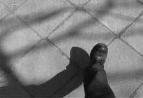
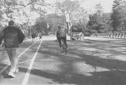
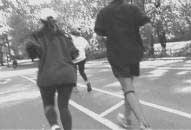
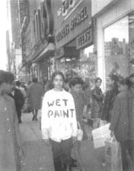
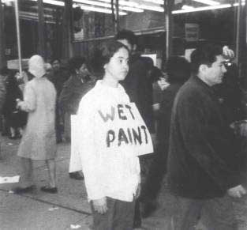
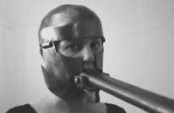

Introduction
The
purpose of this paper is to critically investigate the motif of exile in two
art works performed in different urban settings, Adrian PiperÕs Catalysis, performed from 1970 to 1971 in New York; and
Krzysztof WodiczkoÕs Vehicle,
performed in 1973 in Warsaw. My contention is that WodiczkoÕs and PiperÕs walks
in the city can be examined by applying a threefold understanding of exile.
First, these performative artworks made manifest in artistic walks are
marginalized within, or exiled from, an institutionalized mainstream art.
Second, the artists themselves communicate either personal or metaphorical
states of exile. Wodiczko, for example, performs his walks in the streets of
his native Warsaw as an artist-in-exile because of the socio-political and
cultural restrictions imposed on Polish citizens by the communist government.
Adrian Piper, a New York artist, strolls in her metropolis to forcefully
communicate personal and racial Òbanishment from homeÓ as a mulatto woman.
Third, the phenomena of contemporary metropolises as diverse as the communist
Warsaw and the capitalist New York of the 1970Õs are examined as alienating and
exilic social dwellings par excellence in which most of the inhabitants do not feel Òat homeÓ.
Rationales
There
are at least four major rationales for exploring my dissertation topic. The
first rationale is to make a meaningful academic comparison between two walking
art performances, in terms of their exilic and marginal qualities. Since there
are relatively few descriptions and critical writings (including artist and
critic accounts) about each performance, it is important to re-examine them by
emphasizing the role of exile in each artistic intervention. I needed to get
first-hand information about the personal and artistic raisons dÕtre that prompted the artists to execute these particular
ambulatory art works. Consequently, I arranged personal and electronic
interviews with the two performers, presented them with a number of questions
related to their walking art works; I compared and contrasted the artistsÕ
personal walking experiences vis a vis the official and alternative media press releases. The fact that the
existing publications on performance art do not fully engage in analyzing the
significance of these two walking performances as exilic art works amplified my
interest in seriously researching them in terms of their compelling aesthetic
and political contents that enrich the understanding of the phenomenon of
exile.
The
second reason for choosing this particular topic is the fact that WodiczkoÕs
and PiperÕs walking performances mark significant innovations in their artistic
careers. Unlike most of WodiczkoÕs and PiperÕs later interdisciplinary
artworks, these walking performances are executed by the artists themselves;
they communicate, among other things, the artistsÕ remarkable integrity to
perform despite constraining socio-political and cultural contexts. It was
thirty years ago when the Polish and the American artists first started to walk
to redefine the critical status of the minor urban identity. Taking into
consideration distinct Eastern European and American historical contexts, I
understand these two art walks not only as important caesuras within each artistsÕ professional development, but
also as powerful and universal artistic statements that still provoke us to
rethink the (unresolved) problematics of urban space. It is no coincidence that
these urban strolls are ethically and aesthetically engaged. These critical
walks in the city that are set at the highest formal and conceptual standards
engaged the artists both socially and politically and earned them international
respect.
The fact that this topic not only solidifies the years of my graduate research, but also summarizes a much longer and more intense conflation of my personal and professional experience with walking is the third reason for its selection. I, myself, am an exile who literally walked away from a student trip in Florence, Italy. Since that crucial event, I have developed a very special relationship with walking, this most humble human activity that I no longer take for granted; therefore, in my numerous theoretical and artistic investigations I have become involved with the phenomenon of walking and displacement. This document reflects partially on my passionate academic studies, which began in 1986 when I was an Art History student at the Catholic University of Lublin, Poland, as well as on my migrant walks that took me from Poland to Canada in 1988. It was important to me that one of my major academic documents not only present scholarly research, but also introduce the near twenty years of personal and artistic wanderings around and about the theme of walking. Since I understand this dissertation as a very special revisiting of my own performative experiences, I have complemented this paper with a personal and creative interpretation of walking. I felt compelled to argue about these conceptual and political art works by applying styles of logos and pathos; so inspired and encouraged by the contemporary theory of Peggy Phelan, a respected performance art critic who argues for performative writing about performance art. I have made a critical and creative contribution to two walking art performances. Phelan claims that creative writing about performance is excessive writing because it Òenacts the affective force of the performance event again, as it plays itself out in an ongoing temporality made vivid by the psychic process of distortionÓ (Mourning Sex, p.12). Furthermore, she adds that Òperformative writing is solicitous of affect even while it is nervous and tentative about the consequences of that solicitationÓ (ibid, p.12). I welcomed the theoretico-affective challenge of re-creating these powerful yet ephemeral art works in my own performative act of writing. In order to make my writing more conversational I traveled to Poland and United States to walk the same streets that Wodiczko and Piper walked during their performances with my photo and video cameras. My visual and textual re-tracing of the artistsÕ steps form a creative supplement to this dissertation. Since I wanted to exhaust the richness of these two exilic art works and connect them to the contemporary urban experience, I employed my personal writing style and juxtaposed it with the photographs I took in Warsaw and New York. These creative reflections on walking that enrich the academic form of expression are enclosed in two separate attachments following the chapters in which I theoretically analyze WodiczkoÕs and PiperÕs performance artworks.
The
fourth rationale for investigating these particular walking art performances is
the fact that there has been a recent increase in the number of representations
of walking phenomena in interdisciplinary cultural practice and theory, which
inspired me. While doing my ÒwalkingÓ research I realized that there is a
growing interest in the contemporary artistic representations of walking that
are understood as important socio-political and cultural acts. There have been
many exhibitions, catalogues and books published on the subject of walking.
Some of the most important international group shows, accompanied by
resourceful catalogues, are exemplified by Walking and Thinking and Walking at Louisiana Museum in Copenhagen, Denmark (1997); Ambulations:
An Exhibition of Contemporary Works based on the Notion of Walking at the Lasalle-SIA College of the Arts, Singapore,
(1999-2000); Les figures de la marche: Un sicle dÕarpenteurs at MusŽe Picasso in Antibes, France (2000 and 2001);
and the traveling Walk Ways at
American and Canadian art galleries (2002-2004). Some of these exhibitions
re-introduce the names of such acclaimed master-walkers as Richard Long, Hamish
Fulton, and Francis AlØs; however, each exhibition also presents younger
artists who are making creative contributions to walking. All of the
exhibitions and the accompanying catalogues argue for the indisputable
importance of walking as one of the major contemporary artistic tropes that can
be conceptualized in a rich interdisciplinary fashion. In addition, in the four
chapters of Wanderlust: the history of walking (2000), American scholar Rebecca Solnit, presents
cross-disciplinary studies of the walking phenomena. Even though SolnitÕs
research on walking encompasses a wide spectrum and is directed towards the
general public, her conversational presentation informs the reader about the
historical importance of the main philosophical, artistic, and social aspects
of human walking. In Marcher, CrŽe. DŽplacements, fl‰neries, dŽrives dans
lÕart de la fin du XXe sicle (2002),
Thierry Davila scrutinizes the urban interventions exemplified by the walking
art performances of Gabriel Orozo, Francis AlØs, and the Stalker group. Davila
argues that these three chosen artists exhibit a great interest in moving
around the city in ÒkinestheticÓ investigations of urban spaces that can be
traced back to the first SituationistsÕ psychogeographic maps and
performativity of dŽrives. Last
but not least, in Walkscapes: Walking as Aesthetic Practice (2003) Francesco Careri, a Stalker group member,
posits a philosophical question regarding how the humans create spaces by walking
around them. For Careri there are three historical moments in which walking
asserts its importance while metamorphosing from the Dadaist banal and Surrealist oneiric cities through the playful and nomadic
city of the Situationist International to the entropic city of Minimal and Land artists such as Robert
Smithson. All of these reading are beneficial to understanding walking not only
as a physical act of measuring space, but also as a potent metaphor of creating
culture. None of these readings, however, introduces the motif of exile as
important element of the walking experience.
The Chapters
The paper is organized into four chapters. The first chapter, Walking in the City, presents a historical and interdisciplinary overview of the urban walking figure, the fl‰neur, as it was introduced in Charles BaudelaireÕs literary accounts of modern Paris. I complement the socio-political and cultural significance of the urban stroller, a modern exile, with selected critical writings of Walter Benjamin, Michel de Certeau, and Susan Buck-Morss (among others). The urban walker, the fl‰neur, presents a complex figure, problematized not only as a disinterested Baudelairean voyeur who observes the modern city, but primarily as a marginal city dweller who assumes many alter egos in order to constantly adjust himself/herself to an alienating urban way of living. The fl‰neurÕs alter egos can be exemplified as a dispossessed intellectual (i.e. an exiled artist), a detective, a prostitute, a ragpicker (a homeless person), a dandy, and a conspirator. Moreover, the phenomena of the modern and the postmodern metropolises are examined as alienating places in which the city dwellers feel exiled from their own homes.
The second chapter, Walking in Exile, elaborates on one of the most challenging of the fl‰neurÕs alter egos: the figure of the contemporary intellectual understood as an exile. Drawing on interdisciplinary texts written by leading contemporary thinkers and exiles such as Edward Said, Julia Kristeva, Jacques Derrida, and Homi Bhabha, I problematize walking in exile as mobile, estranged and marginal fl‰nerie. Elaborating on key thoughts put forth by Edward Said in his essay, ÒRepresentations of the IntellectualÓ, I argue that the figure of the contemporary intellectual-exile represents one of the most provoking and empowering model scholar figures that performs within minor, estranged and shifting contexts. I complement the theoretical discussion on exile with two examples from contemporary literature: Eva HoffmanÕs Lost in Translation, and Sherry SimonÕs HybriditŽ Culturelle. Hoffman is an intellectual exile who moved from Poland to Canada. This Polish-Canadian writer who exhibits rare sensitivity and intelligence translates for the reader the complexity of the states of dwelling in primarily linguistic exile. Simon, on the other hand, a native of MontrŽal, takes the reader for a walk in Mile-End one of the cityÕs most culturally diverse neighborhoods. Both writers engage the reader with informed and passionate styles that eloquently represent the phenomenon of living between cultures, countries, and languages. HoffmanÕs and SimonÕs individual and professional work with the phenomenon of cultural hybridity greatly complements an understanding of the exilic figure.
Chapter three, Walking in Warsaw with the Vehicle, formally and critically analyzes Krzysztof WodiczkoÕs 1970-73 performance in Warsaw, Poland. WodiczkoÕs work embodies not only aesthetically beautiful, but also politically engaging art. As it was dangerous and sometimes illegal to walk ostentatiously in public spaces in communist Poland, WodiczkoÕs Òwalking machineÓ represents a daring example of artistic trespassing on the existing political and cultural constraints controlled by the official state ideology. These formal restrictions imposed on walking in Poland allowed Wodiczko to stretch the conceptual limits of the urban movement in a way that had never occurred in other countries. In fact, Wodiczko became a performing figure of an exile in his own homeland.
Chapter four, Walking in New York as a Catalytic Agent, introduces and discusses the series of one-year-long (1970-71) courageous and absurd metropolitan strolls in New York by Adrian Piper, an African-American artist. This early New York ambulatory performance communicates the issues of gender and race as experienced by an exiled subject. PiperÕs Catalytic series forcefully questions the nature and the formation of the (racial) self vis a vis its social identifications. Moreover, Adrian PiperÕs minor walks address personal and social fears towards Òthe otherÓ. Her publicly displayed performative acts consisted of walking in the city while, for example, wearing malodorous clothing, a painted T-shirt, balloons attached to her teeth, and a red towel in her mouth. Catalysis communicates the limits of individual and group self-preservation in one of the worldÕs biggest metropolises.
Finally, the Conclusion critically compares and contrasts the two walking art performances and summarizes the paperÕs main argument regarding the motif of exile in the two examined performance artworks. An interdisciplinary discussion concludes the dissertation with my closing academic and creative remarks.
Sources
The
sources for my thesis are interdisciplinary, as the application of one critical
discourse on exilic walks in the contemporary metropolis would present only a
partial account of such a rich and moving subject. Therefore, I have applied
critical thoughts on walking drawn from literature, philosophy, and cultural
theory. My real challenge was to discover how the selected modern and
postmodern theories (writings by Walter Benjamin, Georg Simmel, Susan
Buck-Morss, Jacques Derrida, Gilles Deleuze, Felix Guattari, Zygmunt Bauman,
Homi Bhabha, Julia Kristeva, Michel De Certeau, Edward Said, Peggy Phelan) and
creative texts (Charles Baudelaire, Eva Hoffman, Sherry Simon, et al.) can be
used to provide a context for the performances executed in such diverse
countries as Poland and United States.
Meaningful Walks
The phenomenon of walking was born with human
civilization. We tend to take walking for granted, not realizing,
perhaps, its long and diverse history. In fact, one of the main physical
characteristics that distinguishes humans from animals is the bipedal upright
position of the former. Scientists claim that walking on two legs appeared
about four million years ago allowing humans to investigate and understand the
world differently than do animals. I would like to present a brief overview of
walking by organizing it into four groupings: spiritual, philosophical,
socio-political and cultural. My contention is that these four conceptual
categories of walking reflect critically on the development of human travel by
foot that is spiritually, socio-politically, and culturally conditioned.
Pilgrimages
Pilgrimages,
portable forms of the world's religions, exemplify the first category of the
oldest travels by foot. They constitute spiritual itineraries whose goal is to
cleanse one's spirit by walking towards the sacred place. Both the journey to
and the reaching of the sacred place are of paramount importance for a pilgrim.
Pilgrimages could often take a long time to accomplish and they were often
experienced as acts of renunciation of earthy pleasures in order to achieve a
state of simple, spiritual purity. These pilgrims, or Òpeople-in-transitÓ,
relied on the donations (food, clothing, money etc.) and hospitality of the
people they encountered on their journeys by foot. Different visual and
spiritual principles exemplify the diverse forms of spiritual walks. There
were, for example, ancient Great Panathenaea processions organized in Classical Athens and in
Olympia; Islamic walks to Mecca originated in the VIIth century A.D. One of the
oldest Christian pilgrimages is exemplified by walks towards Santiago de
Compostela in Spain; to the Holy Land in Jerusalem, Palestine; to the Black
Madonna in Częstochowa, Poland; to the Madonna of Fatima in Portugal; to
the Virgin of Lourdes, France; to St. Peter's grave in the Vatican, Rome, Italy;
to diversely diffused sites in the Indian religions; and finally, to Zen
pilgrimages and parties at mount Fuji in Japan. The pilgrims, people who are in
constant displacement, were perceived as a special category of people. They
were called Homo viator, Òman that
travels.Ó
While
most pilgrims were ardent believers in their spiritual ends, there were also
others who took advantage of the special status of the travelers. In his
ÒWalkingÓessay, Henry David Thoreau researches an etymology of the English verb
"to saunter" and traces its history back to Medieval pilgrims'
"holy walks" towards Jerusalem, la Sainte Terre. Translation of the French "sans terre"
into the English ÒsaunterÓ literally denotes a person who has no land or home.
The "sans terrers" were the medieval wanderers, idlers, and vagabonds
who mimicked the pilgrims walking towards the Holy Land. Their home-less walks,
sometimes mistaken for "Sainte-Terrers" became a marginalized walking
around with no destination. ÒSans terrersÓ desired no place to rest; they were
migrant people whose only purpose was to walk incessantly. The phenomenon of real Sainte
Terrers and the false sans terrers
lies at the core of the
socio-political discourse that regulated walking in public spaces. While the
pilgrims were welcomed on the journey, the others, the homeless wanderers, were
not supposed to be helped because they circulated outside of the officially
constructed discourse of crusades and pilgrimages. Thoreau seems to defend the
very human right to walk freely when he concludes that "every walk is a
sort of crusade, preached by some Peter the Hermit in us, to go forth and
reconquer this Holy Land" (p. 49). In analyzing the phenomenon of
pilgrimages, we should not forget their link to tourism. There are contemporary
walks in popular culture, such as the famous (and somewhat spiritually
inverted) pilgrimages to Elvis PresleyÕs commodified and tourist-oriented
Graceland, home in Memphis, Tennessee. All these spiritual walks and
counter-walks, which continue to take place today, speak of the great
culturo-spiritual importance placed upon putting one foot in front of the other
to achieve a greater state of being.
Finally, there are communities for whom
the spiritual understanding of the world is inseparable from walking. Bruce
ChatwinÕs Songlines, presents a
beautiful literary account of the singing of Australian Aboriginals as they
walk the invisible ÒDreaming tracksÓ left behind by their Ancestors during the
act of creation. The Aboriginal songlines are not a pilgrimage per se because they are inseparable from the Aboriginal way
of living; they do not manifest any faith organizing a sacred journey. Still,
this poetically and spiritually charged delineation of space presents a
powerful example of walking that plays a critical part in the mythic
re-enactment of the world whose end is largely unknown to humans.
Walks in Philosophical Practice and Theory
The
second category of walking offers numerous anecdotes and texts that relate to
the philosophical practice and theory. Meditations on bodily movement versus
immobility were important in Aristotle's peripatetic teachings in ancient
Athens. From the Greek word ÒperipatosÓ, meaning to walk around the colonnades,
the famous Peripatetic School was set up by the Greek philosopher and became
the first "mobile" school where two principal human activities, thinking and walking
were linked together. Although Aristotle was not primarily concerned with
investigating walking in his philosophical writings, his diverse
philosophico-scientific and artistic teachings ÒwalkedÓ around themes that set
new philosophical paradigms for many centuries.
According
to a later philosophical anecdote, Immanuel Kant's daily walks after dinner in
Kšnigsberg were so precise that people could adjust their watches according to
Kant's promenades. While Kant did not write explicitly about the importance of
walking (even though his promenades were an important part of his daily
routine), Jean Jacques Rousseau enjoyed walking and praises it in numerous passages
in his Confessions. Rousseau
recounts that:
there is something about walking which stimulates and
enlivens my thoughts. When I stay in one place I can hardly think at all; my
body has to be on the move to set my mind going; my mind works with my legs (The
Confessions, p. 382).
His last unfinished book, Reveries of a Solitary
Walker, written in 1778, is entirely
devoted to walking, which is at once the main inspiration for his philosophical
thoughts and a soothing activity that helps him to come to terms with his
difficult life. Rousseau composes his philosophico-literary and personal
reflections on walking while strolling in the Parisian parks; the activity that
soothes RousseauÕs troubled mind and puts his body in a quasi-mesmerizing dream
state. Moreover, it seems that the philosopher wanted to achieve a pure and
disinterested state of mind while walking with no precise purpose. He states
that such movement as walking is necessary because there is simply no life
without movement. He continues that it is important to maintain balance while
putting one foot in front of the other. Furthermore, Rousseau claims that there
should be neither too much repose nor too much movement, because walking should
be done at a constant intensity. Rousseau simply wants to be in control of his
"self"; he does not want to be preoccupied by his thoughts while
enjoying the movement of his body. Such a disinterested state of walking
generates the sweet sensation of reverie. While on one of his walks, Rousseau:
plunged into a thousand confused but delicious
reveries, which without having any well-determined object, nor consistency, did
not fail to be in my opinion a hundred times preferable to all that I have
found sweetest in what are called the pleasures of life (Reveries of the
Solitary Walker, p.109).
Thinking
and walking is extremely present in S¿ren Kierkegaard's writing in which he
recalls forced walks in a room with his father, and the later importance of his
long solitary walks in the streets of Copenhagen. Edmund Husserl also argues
for a close relationship between walking and thinking, when, in many of his
phenomenological works he stresses the importance of movement as opposed to
immobility. In HusserlÕs view it is when we walk, when we are being displaced,
that we gain a better understanding of our bodies in relation to the world
rather than when we are not moving through space.
The
phenomenological understanding of movement can be found in the deconstructive
thought of Jacques Derrida. The French philosopherÕs re-reading of the history
of philosophy presents one of the most significant contemporary intellectual
contributions to existing philosophical paradigms. It is always a movement of
the other element (often overlooked by philosophy), the absent, the missing, the
marginal, the silent, and the imperceptible that is given a greater power in
deconstructing the existing status quo (Jacques Derrida, Margins of Philosophy). Even if our bodies might not necessarily walk to
experience the world, it seems that our minds walk tirelessly by adapting to
ever-changing and shifting environments of mobile deconstructive thoughts.
Walking as a Tool for Change
Walking
has also been employed as a powerful tool advocating political and social
change. Collective acts of walking seek to empower people to walk and talk
freely in situations where the political and social norms are imposed by the
ruling powers. Such examples of socio-political walks include military marches,
labor strikes, parades, and diverse political demonstrations, to name a few.
Another poignant example is the Argentinean womenÕs resistance to the official
junta regime. Since public gatherings were not allowed in the city, a group of
brave women decided to walk counter-clockwise in Buenos Aires' Piazza de Mayo
to protest against the cruelty of the Argentinean regime towards its citizens.
Another
powerful example of walking, understood as a political resistance during the
Civil Rights Movement in the U.S., is the famous walk of Black people from
Selma to Montgomery in 1965. The predominantly Black group walked for four days
and four nights to protest the racial discrimination and violence of the
American political and social systems. Although the walkers faced opposition
and resistance along the way, the walk culminated with a crowd of twenty-five
thousand people in front of the statehouse in Montgomery, and was a significant
factor in the decision to issue the 1965 Voting Rights Act (Charles Fager,
Selma 1965. The March that Changed the South).
Yet
another example of a solitary yet strong walking figure in American history is
that of Mildred Norman Ryder. She called herself "Peace Pilgrim"
because she used walking as a means to promote peace during troubling political
times in the United States. In order to make such a committed and admirable
life decision, she had to virtually annihilate her own personal life. Over the
period from 1953 to 1981, Mildred Ryder walked (accepting only occasional car
rides) over twenty five thousand kilometers. She promoted peace, and in her
public speeches she protested against the U.S. military actions during the
McCarthy era, the Korean and Vietnam wars.
Last,
but not least, there are many examples of socially engaging walks that aim to
raise money to find cures for diverse illnesses. These predominantly urban
walkways are primarily a North American phenomenon. These charity fundraising
walks have had and continue to have great success in raising money for good
causes with the number of participants increasing each year.
Walking in Culture and Visual Arts
Walking
was born with human civilization; careful examination of this phenomenon
reveals the desire to represent walking in even the very earliest of visual
artworks. From the Paleolithic stick man, a hunter drawn in the Lascaux cave,
through the ancient cultures of the Americas, Africa, and Europe, there has
always been grand effort put into the representation of walking. The Medieval,
Renaissance, Baroque, and Classical artistic experimentation with diverse
walking poses and the fascination with this basic human movement continues, and
is primarily expressed in drawing, printmaking, painting, and sculpture.
Prior
to the late XVIIth century it was usually the wealthy upper classes who would
leisurely stroll in specially adapted and enlarged interiors such as mansions
and galleries.
The
history of European gardens is inseparable from the history of walking, since
gardens developed as a natural extension towards making walking more
adventurous and pleasant. Gardens started to be developed mainly as an exterior
forum for walking for exercise and for pleasure. In Wanderlust, Rebecca Solnit states that the architecture of the
medieval garden had high walls because individuals were less interested in
walking in the garden than in resting and in lying down. Later, medieval
gardens yielded to the much more open and elaborate design of the paths of the
Renaissance walking trails. The ostentatiously cultivated gardens of the
Baroque period slowly developed into the Classical and Romantic "wild"
gardens with many architectural surprises or follies such as ruins, bridges,
lakes etc. However, it was in the second half of the XVIIth century when
walking in nature came to be seen as more of a general social practice. In some
of the masterly artistic representations of nature we can admire a walking
subject embedded in many of Claude Lorrain, Nicolas Poussin, and Salvator
RosaÕs paintings, to name but a few.
The
most elaborate and beautifully constructed gardens, however, could not satisfy
some of the more curious and creative spirits such as Dorothy and William
Wordsworth. They became some of the first Europeans to venture into nature and
make walking an important aesthetic experience. Dorothy and William wrote many
accounts of their walking tours. William WordsworthÕs An Evening Walk is one of the most beautiful Romantic poems that
translates the pleasures of walking in nature. Wordsworth is seen as the poet
of nature because the he re-wrote the poem over a period of several years in
order to find the most just word to describe each of the particulars
experienced when walking in the natural environment Òwhich had been unnoticed
by the poets of any age or countryÓ (James Averill, p.ix).
The
pleasurable states of mind described in WordsworthÕs accounts of walking in
natural sites can be illustrated by some of the Romantic painters'
representations of the solitary walking figures contemplating nature. One of
the best examples is a painting by the German Caspar David Friedrich that
represents the subjectÕs meditation on a transcendental landscape. His
melancholic painting entitled Monk at the Sea displays a sublime instance of the individual walking
towards and abandoning himself to the overpowering forces of nature (Appendix
1).
While
on one hand, there were excursions to admire infinite natural phenomena, there
exist on the other, modern metropolises that became sites where individuals
have strong aesthetic feelings. Since the Romantic period the phenomenon of
walking has undergone a more scientific and aesthetic scrutiny; with the
technological advancements of the modern era and a growing number of large
urban metropolises, there occurred a shift from the previous solitary walks in
nature to the more frequent solitary and group strolling in the city. In fact,
walking as a cultural phenomenon, and as a full-fledged cultural act was not
known until the Romantic era. With the birth of Modernity and urbanism, walks
in the city began to replace walks in nature.
Walking in Painting and Photography
From
XIXth century painters and photographers showed interest in urban walking
figures. Paris, the modern European metropolis par excellence, became a city where walking was a positive image
that was valorized in many visual representations.
There
are several parallels that can be drawn between the painterly and photographic
representations of the Parisian walking figure. For example, Gustave
Caillebotte's painting Paris: Rainy Day from 1877 can be compared with Eugne Atget's Marchand dÕabat-jour, taken between 1899-1900 (Appendix 2). Even though the
former painting depicts a walker strolling through the streets
self-confidently, and the latter represents a disappearing Parisian petit
mŽtier, a seller of lampshades, both
walkers seem to be lost in the middle of the modern deserted proscenium of
large Parisian boulevards. Another example shows Ragpicker painted by Edouard Manet and Ragpicker photographed by Atget, each of which represent a
homeless beggar-philosopher, and dispossessed urban spectators whose anonymous
walks become visualized as the marginalization of certain unwanted populations
in the XIXth century metropolis (Appendix 3). The modern walker, the
Baudelairean fl‰neur, strolls the
streets out of necessity and becomes a tragic dispossessed hero of the new
urban order. In addition, the interdisciplinary movement of surrealists with
such literary works as Louis Aragon's Paysan de Paris and Breton's Nadja elevate the modern city to a dreamy and unconscious
phenomena where sur-real things
might happen.
Walking in Science and Art
The
mechanics of walking always interested scientists and artists. With the
invention of photography it became possible to freeze an image, to capture and
thus dissect a walking movement. Two modern photographers, Edward Muybridge and
ƒtienne-Jules Marey made extensive photographic studies of human and animal
locomotions. Among many photographs they took, there are series of detailed
chronophotographs of moving bodies, legs and feet (Appendix 4). Their
scientific-artistic contribution to studies of walking became important to
visual arts. FuturistsÕ, DadaistsÕ, SurrealistsÕ and SituationistsÕ creative
works, among others, explore the theme of walking and movement through time and
space (Appendix 5 and 6).
There
is a particular photographer, Albert Londe, who offers a different type of
photographic inquiry about walking (Appendix 7). Asked by Dr. Paul Richer to
document his patients with walking problems at the SalptriŽre hospital, Londe
produces documentation of hundreds of photographs organized according to the
specific illness. The photographs were enclosed in the book TraitŽ Pratique
de la Photographie, published in
Paris in 1896. Similar to Muybridge and Marey, Londe used a chronophotographic
technique, but he used it to classify the other way of walking: the
pathological, unnatural way of moving one's feet. While Muybridge and MareyÕs
photographs represent more scientific studies of walking, LondeÕs photographs
communicate uncanny visualization of walking staged in the hospitalÕs courtyard.
The photos suggest a strange relationship between a patient walking in the
awkwardly large hospital gown and a supporting nurse. Both documented figures
take their uneasy steps on a specially prepared prop: a hospital carpet. In
fact, these Òcuriosity photographsÓ go further to marginalize the unhealthy act
of walking by producing an awkward visual document. Consequently, LondeÕs
photographs classify the sick walking figures (marginalized images) against the
healthy and visually desirable images that are officially acceptable and
publicly circulating (Les Chefs-DÕÎuvre de la Photographie dans les
Collections de lÕĒcole des Beaux-Arts).
Performance Art
Although
it is marginalized within mainstream culture, I found performance art to be one
of the most provocative art forms that defines human culture. Therefore, I
became particularly interested in performances that challenge the notion of
walking in urban spaces. In order to engage in a critical discourse about
performance art, many contemporary artists and cultural critics employ diverse
interdisciplinary sources to tackle the uniqueness of this postmodern art form.
Since performance art questions existing art historical discourse by asserting
its new artistic and theoretical presence around the 1960's, it can no longer
be evaluated by employing canonical aesthetic standards. Moreover, performance
art remains a marginal and exilic art form, even though it has started to be
acknowledged and included in mainstream art.
Performance Art in Contemporary Theory
I
would like to refer to two contemporary theoretical discourses that
problematize performance art as a very special art form. In particular,
deconstructive ideas of Jacques Derrida, and Peggy PhelanÕs interdisciplinary
contribution to understanding performance art help to further problematize
performance as exilic art form.
Exilic and Itinerant Thoughts of Jacques Derrida
My
contention is that DerridaÕs philosophy presents a case of exilic and itinerant
philosophy because it is about intellectual displacement and subversions of the
key metaphysical concepts of the Western thought. The contemporary thinker does
not want to define another fixed philosophical system; instead, he constantly
interrogates his own deconstructive method. He sees deconstruction as a
movement of Òa double gesture, a double science, a double writingÓ (ÒSignature,
Event ContextÓ, p.329) and of Òoverturning and displacing a conceptual order,
as well as the nonconceptual order with which the conceptual order is
articulatedÓ (p.329). DerridaÕs critical input here is exilic and performative
because his itinerant signature welcomes new intellectual challenges that stand
in opposition to institutionalized yet immobile philosophical opuses. Since the
Derridian philosophy of Òreading the philosophers in a certain wayÓ
(ÒStructure, Sign and Play in the discourse of Human SciencesÓ, p. 885)
presents itinerant thought par excellence (hence his philosophical insistence on mobile tropes such as
differance, iterability, destinerance, supplement, undecidability, etc.) it
becomes an important tool for conceptualizing other traveling activities such
as performance art. The first Derridian text, ÒStructure, Sign and Play in the
Discourse of Human Sciences,Ó was written in 1966 during the uncertain
socio-cultural and political times in which performance art was also asserting
itself as a new art form, a fact that provided a ground for intellectual and
artistic exchanges and influences between these two areas.
Arguing
for a deconstructive and exilic structure embedded within performance art, I
will refer briefly to DerridaÕs interview conducted by Peter Brunette and David
Wills and published as ÒThe Spatial Arts: An Interview with Jacques DerridaÓ.
In the discussion, the French philosopher is challenged by delimiting the
nature and the properties of the visual arts. There has perhaps always been a
certain uneasiness on the part of the artists and art critics about subscribing
to interdisciplinary and constantly evolving performance art works under the
academic title of Òvisual artsÓ. The open-ended discipline of performance art
employs diverse aspects of artistic and non-artistic elements (drawing,
painting, sculpture, music, dance, theater, video, film, new media, and
virtually every aspect of every day etc.), is conceptually closer to the
Derridian definition of spatial arts
than to the existing stiff terminology of the visual arts. Derrida argues for his original
nomenclature of arts in the following way:
The general question of the spatial arts is given
prominence, for it is within a certain experience of spacing, of space, that
resistance to philosophical authority can be produced. In other words,
resistance to logocentrism has a better chance of appearing in these types of
art (ÒThe Spatial Arts: An Interview with Jacques DerridaÓ p.10).
Performance art not only engages our eyes, it creates
a whole new context in which the mobile body is staged and perceived in a
different way than most objects and subjects represented in other forms of
visual arts. Performance art is very much about space not only because it
envelops a physical (or virtual) space, but, most importantly, because its
representation is temporal and citational. This charged representation of the
body is explained by DerridaÕs notion of ontological presence, a notion upon
which Peggy Phelan elaborates. The performing body is experienced via a
deconstructive understanding of the limits of its own representation. It is
also a body that, in a certain metaphoric way, communicates marginal and exilic
experiences of the performing artist. Derrida explains:
The body is an experience in the most unstable sense
of the term; it is an experience of frames, of dehiscence, of dislocations
(ÒThe Spatial Arts: An Interview with Jacques DerridaÓ p.16).
Derrida explains that Western philosophical axioms
attempt to represent a body in its full presence, thus stabilizing the subject
as an autonomous perceiving entity. However, unlike other canonical examples of
visual art works, such as drawing, painting, sculpture, and architecture,
performance art is about the disappearance of the body and an insistence on the
temporality of a performative event that reinforces subjectÕs anxiety to seize
the authentic ÒselfÓ. In other words, the performing body is in a constant
state of exile that engages the viewer in a discursive way. Since performance
art examines the limits of its artistic discourse, it functions as a complex
text. ÒThere is textÓ, Derrida says, Òbecause there is always a discourse in
the visual artsÓ (ÒThe Spatial Arts: An Interview with Jacques DerridaÓ p.15).
The philosopher is interested in the polysemic nature of creating and
translating representation in the arts. The plurality of tones establishes
important relationships between things and creates Òdifferential tonesÓ.
Derrida argues that the experience of the beautiful is linked to a differential
tone, in other words, it can only be experienced through the plurality of an
aesthetic experience. Meditating on the nature of the beautiful experience,
Derrida says:
It can happen only with you - as is the case with the
signature [....] - and at the same time you have nothing to do with it. Thus
you are dead; it does without you [...] That is beauty; itÕs sad, mourning
(ÒThe Spatial Arts: An Interview with Jacques DerridaÓ p.23).
In addition, the philosopher says that spatial arts
are silent, but their mutism produces Òan effect of full presenceÓ (p.12). This
is a critical trait of the arts because in the artistic ÒsilenceÓ resides the
greatest power to oppose a dominant logocentrism. Inherent in spatial art is
the resistance to official authority that can produce a different kind of
artistic counter-dialogue. The fact that the first performances of the 60's
functioned outside the official art discourse, and were thus an exilic art form
par excellence, marked them with
an Òontologically confrontational characterÓ (p.13). The signature of the
artistic event is always proceeded by a countersignature, that is a context
that prepares and then justifies an artwork as an important cultural and social
event. Performance art, by becoming a new type of countersignature, put into
crisis the existing and officially accepted cultural status quo; it revisited
the aesthetic codes and reestablished the new ones. Such a deconstructive
reading of the arts opens up a great number of possibilities in understanding
the limits of the performative aesthetic discourse.
Performative Writing on Metonymic Body by Peggy
Phelan
In
her informed discussion on performance Peggy Phelan is greatly influenced by
deconstruction, psychoanalysis and literary studies. Her interdisciplinary way
of writing creates a highly influential performative act of re-creating new
types of performance art works. Phelan employs some deconstructive tenets in
her critical contribution regarding the phenomenon of performance. In Unmarked:
the politics of performance (first
edition in 1993) and Mourning Sex: Performing Public Memories (1997) Phelan establishes well-respected scholarship
that carefully examines the notion of performance. There are only a few
examples of performance art stricto sensu upon which Phelan draws in her books. She understands the performative
act in a broad philosophical sense, the act that includes active and thoughtful
engagement in experiencing artistic and non-artistic events.
This
respected performance theorist offers not only an insightful critique of
performance art, but also sets an example of writing about it in a performative
way. According to Phelan, there is no need to repeat a performative event by
describing it from memory. She argues for enacting the performance in an
informed yet creative way. Her own performative writing presents an engaging,
well-composed literary style that skillfully introduces and juxtaposes personal
(sometimes very autobiographical) accounts and criticism with the theoretical
conceptualizations of the selected key contemporary thinkers. Phelan summarizes
the critical character of performance art as non-reproducible (it functions
outside the commercialized market), asserting itself through disappearance (she
understands the body in Derridian sense as a ÒsupplementÓ), and through
temporal, irreparable artistic action that cannot be recorded or documented in
any way. I am particularly interested in PhelanÕs elaboration on the
disappearance of the body in performance art, because she offers one of the
best examinations of the key aspects of live art. Even though Phelan does not
explicitly focus on exiled or exilic qualities of performance art, her thought-provoking
theory of a metonymic understanding of the performing body not only
acknowledges the marginal qualities of performance art, but also desires to
transcend the exilic states inherent in performance art. By opposing the
metaphorical and metonymical understanding of performance art, Phelan argues
that the employment of metonymy displaces the performing body and marks it as
loss. While metaphor works in a comparative fashion, performing towards the
holistic representation of the subject, metonymy is a trope that fragments the
subject by generating the meaning contingent upon a shifting context. In
particular, Phelan recounts:
Metaphor works to secure a vertical hierarchy of value
and is reproductive; it works by erasing dissimilarity and negating difference;
it turns two into one. Metonymy is additive and associative; it works to secure
a horizontal axis of contiguity and displacement (Unmarked: the politics of
performance p.150).
It seems that this very insistence of performance art
on introducing the body that was veiled in art practices before 1960's, is also
a recognition that it cannot be authentically and holistically represented as a
free-acting agent. The temporality of the bodily performance understood as a
representational addition through the use of metonymic tropes conveys the
exilic qualities marked by the loss and continuous displacement of the
performing subject. In this paradoxical assertion and disappearance of the
acting body there lies, perhaps, the greatest artistic strength of performance
art.
Walking in Contemporary Art
Since
the 1960's, many artists have been engaging formally and/or conceptually with
the theme of walking. The critical nature and characteristics of performance
art will be explored by contemporary artists who, conscious of the ontological
instability of the performative event, engage in a creative way to generate new
aesthetic meanings. The following selection of walking art performances
illustrates both daring and engaging performative countersignatures, whose artistic
walks become critical caesuras for
the advancement of postmodern art. Some of these performances convey strong
exilic characteristics when a performer is represented as an artist in exile;
the performative actions are often executed in deserted or alienating city
spaces. I will introduce these performances according to four walking
categories to show the breadth of contemporary walking art works.
I
will introduce and briefly discuss eight exemplary walking art performances
that were executed since the 1960's in diverse socio-political and cultural
contexts. All the selected artworks relate to and critically comment on
spiritual, philosophical, socio-political, and/or aesthetic concerns. Although
it can be argued that each performance art work draws on four critical aspects,
I will discuss Daniel BurenÕs and Milan KnižakÕs actions mainly as a
response to the socio-political context; Richard Long's, Marina
AbramovićÕs and UlayÕs works as those that raise spiritual questions; Vito
AcconciÕs and Sophie Calle's performances as philosophical meditations on the
contemporary urban dwelling; and finally, Janet CardiffÕs and Annette
Weintraub's walks as primarily examining the question of aesthetics as
challenged by the use of technology.
Socio-political contexts in Daniel Buren and Milan
Knižak
Daniel
Buren's early example of performance art from 1967 with two Sandwichmen took place around the building of the Parisian
Contemporary Art Museum as part of the Salon de Mai group painting
show (Appendix 8). The performance consisted of two men, dressed conservatively
in black suits, who carried striped billboards attached to their bodies. The
men walked for one full day outside the Museum. Their billboards did not convey
any specific messages; they were painted with green and white vertical stripes.
The great irony of this performance lies in playing a free and disinterested
city walker, an artist/fl‰neur who
produces nothing. The SandwichmenÕs
walk problematizes the strolls of dispossessed walkers who used to walk in the
same city almost one century ago. In a modern consumer society where everything
seems to be for sale, there is a danger that even one ownÕs subjectivity and
freedom might become a bargain.
The
other socio-politically engaging walking series was performed in communist
Prague in the early 1960's by Milan Knižak. This controversial performer,
whose brave Demonstration for all the Senses was presented in the streets of Prague in 1964 and
consisted of walking, falling, sleeping, and lying down on the streets,
challenged the social codes of behavior in public communist spaces (Appendix
9). His public performances were always nonconformist because Knižak
wanted to defy the political system that was imposing oppressive rules on
artistic freedom. His uncompromising art and lifestyle made him one of the bravest
Eastern European performers. Knižak paid a high price for his choice of
living; he was expelled from different Czech universities, arrested, and
imprisoned several times in his life.
While
Buren's walk in Paris challenged the Western state apparatus, KnižakÕs
acting out in Prague's streets defied the Eastern communist system. Both
performances are examples of political counter-signing of public space, of
questioning the political system that stands in opposition to the lived
reality. These vulnerable walking bodies presented the only alternative to the
official socio-political and cultural systems. Buren and Knižak employed
the metonymic negation of their own (temporary) presence trying to resist the
politics of meaningless reproducible culture. Their performance art works
introduced a different way of looking at and making art in a context in which
the communist or capitalist systems promoted conformist and easily reproducible
art works.
Spirituality in the works of Richard Long, Marina
Abramović and Ulay
There
are other performers whose walks examine the question of the spiritual in
nature. Richard Long, for example, in one of his early performances consisting
of repeating walking a line on the grass in 1967, presents a beautiful work of
the absent performing body (Appendix 10). This minimal intervention in Somerset
field can be related to the search for the spiritual experience of a subject.
Just as any repetitive action can lead to a mesmerizing state that puts one's
body into a trance, the repetitive walking experience in nature represents the
same artistic urge to go beyond a given reality. LongÕs work was documented in
a black and white photograph, which became the only object testifying to his
ritual- based, private performance.
A
different kind of walk on the borders of the natural and cultural is presented
by Marina AbramovićÕs and Ulay's walk on the Chinese Wall in 1988 entitled
The Lovers; a Wall that is over
six thousands kilometers long. The artists commence their journey separately:
Marina started to walk from the East and Ulay from the West, from the Gobi
desert (11). They were to meet each other in the middle of the Wall and marry,
to symbolically mark a long-awaited ceremony between two performing partners.
It is interesting that the Wall was built by the Chinese Emperors to keep
strangers out of China, yet Marina and Ulay were determined to go through
painstaking international negotiations to obtain permission to walk this human
wonder. The resulting photos and beautifully shot film on location became an
important part of this difficult and quasi-sublime walking experience. After
the walk was completed, Marina and Ulay left each other to start new personal
and artistic lives. Marina and Ulay wrote extensively about their walking experiences
and interacted with locals, asking them about the legends and the mythical
stories about this impressive architectural structure. Even though it was an
exhausting physical experience, it was also a ritual-based walk. The experience
of walking the wall was very important for both artists; however, it was only
Marina who made subsequent spiritual and object-based art works following the
arduous three month long experience of walking over the wall (Marina
Abramović and Ulay, The Lovers).
Philosophical Meditations in Vito AcconciÕs and
Sophie CalleÕs Works
The
third pair of performances that touch predominantly (but not exclusively) on
the philosophical aspect of walking are Vito AcconciÕs and Sophie Calle's
ambulations in New York and Paris. Both performances involve walking as
following someone or as being followed. In 1969 Acconci follows a pedestrian
chosen at random in New York as if playing a detective who has no clear object
in mind. He follows a person until he/she enters a private space and then he
chooses someone else as his object (Appendix 12). Acconci needs a scheme, he
needs to follow someone as if wanting to annihilate himself as a subject who
has a purposeful reason for dwelling in a metropolis. In his written accounts
about the performance he states that he wanted to Òstep out of himselfÓ
(Acconci, Following Piece, p.31)
by following someone elseÕs itinerary. Acconci seems to respond to the concept
of the lost aura of the postmodern walker in the city. He reinforces his
artistic activity with compulsive walking exercises that transform him into a
tragic and homeless figure of the postmodern fl‰neur.
Sophie
Calle, on the other hand, in a walking performance from 1981 entitled La
Filature (The Shadow) asked her
mother to hire a detective to follow her in Paris. After the performance was
completed she gathered the photos that the detective took of her as well as his
and her notes taken about the work. She displayed the ÒevidenceÓ of being
followed as objective information documenting her intersubjective and extremely
self-conscious performance (Appendix 13). These two performance art works are
very much about the disappearance of the subject; they are Òspurs of memoryÓ
that can be activated by making a different kind of performative gesture.
Phelan informs us that Òperformance cannot be saved,
recorded, documented, or otherwise participate in the circulation of
representations: once it does so, it becomes something other than performanceÓ
(Unmarked: the politics of performance p. 146). I find the performative retracing of someone elseÕs footsteps
to be a beautiful act of creative writing. Among other things, it expresses the
innate human desire to translate a given text (ÒtextÓ as understood in
Derridian philosophical discourse) and to perform it. It also presents an
empowering gesture of the subject that decides to countersign a text within
which he/she has always already been inscribed. Artistic walking in the city
calls for a particular kind of writing; because the performative texts cannot be
always visible and easily perceptible in the thicks and thins of city language.
They invite a different kind of meditation on the state of contemporary art.
The task of decoding the language of the walks is not an easy one, especially
as their elusive status seem to break away from well-formed discourses.
Further, it is impossible to talk about performance art without considering a
context in which it is generated, as well as a crucial subject/object
constitution that defines it. These two performers, Acconci and Calle, walk in
contemporary metropolises, places that are eo ipso complex texts, which, and while offering many
possibilities and interpretations, also challenge the subjectÕs freedom to act.
Technically Mediated Performances in Janet Cardiff
and Anette Weintraub
Last,
but not least, I would like to introduce two more walking art performances that
are technologically mediated. These art works are executed by Janet Cardiff in
an interactive audio work entitled Missing Voice (Case Study B) from 1999, and by Annette Weintraub in her creation of a website
entitled Pedestrian in 1997. Both works rely upon technology to enhance the
physical walking experience. Cardiff, for example, composes a carefully
scripted story that she records on CD and juxtaposes with other audio tracks
(environmental and other sounds). The participant literally wears it while
walking in the city, listening to the prerecorded narration and following
CardiffÕs instructions that direct the participant where to walk and where to
pause. The Missing Voice(Case Study B) presents one of CardiffÕs layered stories that occurs in London,
England. It starts at the White Chapel Library and takes the beholder out into
the streets. The environmental city sounds recorded on the CD both attract the listener
to and alienate from the actual urban context. Weintraub's interactive website
piece, on the other hand, can be experienced by playing CD-ROM or by connecting
to the following internet address: ÒÓ Weintraub invites the beholder to walk in a virtual
agora built of 0 and 1 binary switches. The participant, immobilized at his/her
computer, experiences the limits of the simulated urban walk in a virtually
designed agora. He/she participates by moving the computerÕs mouse and by
clicking the cursor on the highlighted icons to Òmove along.Ó CardiffÕs and
WeintraubÕs art works do not comment exclusively on aesthetics; rather, since
they involve the question of technology, they challenge even further the limits
of performative representation. They introduce a new, interactive media element
as an aesthetic category in perceiving and evaluating art. Introduction of the
performing body through technological mediation makes these two art works further
fragment the body by highlighting its performative limits. What is particularly
at stake with technologically supported art performances is the further
intellectualization of aesthetic pleasure that makes the judgement of taste
conceptual rather than purely subjective. The postmodern countersignature of
performance as Òthis is artÓ is about a conceptual play of ideas that are often
socio-politically and culturally conditioned. This is one of the reasons why
the question of performance art presents a challenging and thought-provoking
art form and does not seek to enclose itself within prescribed and preconceived
ideas.
In this introduction I have presented the thesis statement, its purpose, rationale and main research sources. I have outlined my paper, briefly introducing its five main chapters. I have presented an overview of the history of walking, organized into four distinct categories, and have subsequently applied these categories to a discussion of eight contemporary works of performance art that involve walking in both urban and non-urban settings. While referring to two theoretical discourses regarding philosophy and art, I have shown that performance art, as an art form that emerged in the 1960s, displays exilic characteristics, as it is marginalized by being constantly displayed by and within mainstream art. To justify this claim I have applied Jacques DerridaÕs and Peggy PhelanÕs engaging theories, written from deconstructive and interdisciplinary critical positions. The introductory remarks argue that the phenomenon of exile, understood either in a literal sense as banishment from home or in metaphoric and symbolic ways as marginalization and alienation from officially and socio-culturally accepted norms, does not have to be perceived negatively. On the contrary, acknowledgment of and working from the exilic place can impress an empowering meaning. As I briefly discussed in an overview of two performative theories (Derrida, Phelan) and in a description of eight walking art performances, the exilic qualities of performance art play in favor of the artists who manage to transcend difficult alienating contexts of their socio-cultural and political contexts.
The next chapter, Walking in the City, introduces and critically analyzes the nature and main characteristics of the figure of the modern urban walker, the fl‰neur. This particular city stroller was presented for the first time in Charles BaudelaireÕs literary accounts and was later examined in Walter BenjaminÕs, Michel de CerteauÕs, and Susan Buck-MorssÕ critical re-readings of the solitary urban traveler. Following critical Benjaminian thought, I will argue that the fl‰neur, who assumes diverse marginalized alter egos, is an exilic figure. He/she is not welcome to participate in mainstream urban life. Finally, metropolis, a phenomenon of modern and postmodern architecture will be analyzed as an increasingly uncanny and alienating place of the city dwellers and especially of the urban minorities.
Chapter One Ð Walking in the
City
This chapter discusses the phenomenon of walking in the city as exemplified by the figure of the fl‰neur. I will introduce the literary beginnings of the fl‰neur and the cultural and socio-political contexts in which it emerged in the middle of the XIXth century. I will argue that the figure of the fl‰neur was historically and artistically represented as marginalized and exilic. The phenomenon of fl‰nerie will be discussed in selected Modern and Postmodern theoretical texts regarding the notion of the urban stroller. Since Òthe fl‰neur is a creation of ParisÓ, as Benjamin claims (Return of the Fl‰neur, p. 263), I analyze the nature and characteristics of this urban stroller by applying some of the best of Charles BaudelaireÕs and Walter BenjaminÕs creative and critical writings on the Parisian city walker. I enrich their texts with selected contemporary writings on urban walking by such writers as Susan Buck-Morss, Michel de Certeau, and Elizabeth Wilson. The analyzed readings give significance to an exilic walking figure who remaps the modern city. Even though most of BaudelaireÕs and BenjaminÕs critical texts concern Paris, the act of walking in other metropolises also acquires a paramount importance in defining the limits of moving through urban spaces.
A fl‰neur does not exist without a city, and a city does not exist without a fl‰neur. Thus the phenomenon of walking in the city will be also analyzed by taking into consideration the uneasy social and architectural contexts of the modern metropolis. It was with the growth of modern cities in the middle of the XIXth century that contemplation of the sublime spectacle shifted from observing the natural to observing urban phenomena. This emerging new urban stage for awe-inspiring experience will be examined as an alienating place where the urban strollers have strong aesthetic feelings. The socio-architectural order of modern cities produces a new type of stroller who questions the limits of free urban movement. Thus the modern metropolis will be primarily presented as an alienating and exilic place for city dwellers.
Etymology
of the Word Fl‰neur
In her informative essay, entitled ÒInvisible Fl‰neur,Ó Elizabeth Wilson examines the early uses of the word. The fact that the origins of the word are uncertain yet the first dictionary definitions support the gendered meaning of fl‰neur is very critical for Wilson. She claims that the XIXth century Larousse Encyclopaedia already two gendered entries. There are definitions of both fl‰neur and fl‰neuse. The latter denotes Òa kind of reclining chair [É] it looks like an extended deck chair, and welcomes its occupant with womanly passivityÓ (ÒInvisible Fl‰neurÓ, p.76). In spite of the fact that there is no clear etymology of the word fl‰neur, Wilson writes that Larousse provides a long entry on fl‰neur stating that its linguistic provenance comes from the Irish word ÒlibertineÓ[4].
WilsonÕs feminist reading of the XIXth century origins and social functions of the fl‰neur makes her examine the identity of the modern stroller as a typically masculine activity of Òloitering, frittering away of timeÓ(p. 62). The fl‰neur presents the male figure in the Parisian metropolis whose favourite activities consist of disinterested walking around Paris, observing the urban marvels and the crowd:
The fl‰neur [É] could exist only in the great city, the metropolis, since provincial towns would afford too restricted a stage for his strolling and too narrow a field for his observations. [Éalthough] the majority of fl‰neurs were idlers, there were among them artists, and [É] the multifarious sights of the astonishing new urban spectacle constituted their raw material (ÒInvisible Fl‰neurÓ p. 62).
Wilson follows a historical development of the term fl‰neur by examining its earliest literary uses. More
specifically, she points to the novels by Balzac, Zola, Proust, and Dickens in
which the city strollers play the main literary characters. Further, she
examines in greater depth an anonymous French pamphlet from 1806 that
introduces the figure of the fl‰neur in
the context of BonaparteÕs era. A passage from the pamphlet entitled Le
Fl‰neur au salon ou M.Bon-Homme: examin joyeux des tableaux, mele de
vaudevilles exhibits some of the key
characteristics of the fl‰neur
that will become critical in BaudelaireÕs and BenjaminÕs later scrutiny of the
same subject:
No one knows how M. Bonhomme [the fl‰neur] supports himself, but he is said to be a rentier, seemingly set free from familial, landowning or mercantile responsibilities, to roam Paris at will. The fl‰neur spends most of his day simply looking at the urban spectacle; he observes in particular new inventions: for example he stops in Place Louis XIV to examine the signals of the marine telegraph, although he understands nothing about them (ÒInvisible Fl‰neurÓ p. 62).
Wilson explains that M. Bonhomme engages in aesthetic
activities because either he was an artist or he associated himself with the
artists in the modern public spaces such as salons, boulevards, arcades, cafes,
bars, theaters and brothels. M. Bonhomme, however, performed a marginal fl‰nerie;
he was a solitary stroller with a blasŽ attitude towards the
modern city.
Examination and comparison of
the most recent comprehensive French and English dictionary entries of the word
fl‰neur, the similarities with the
XIXth century Larousse definitions of the same French word are striking. Along
with the literary quotations of the literary uses of fl‰neur, the eight volume Tresor de la langue
Francaise-Dictionaire de la langue du XIX et du XXe siecle offers two main definitions of the word which
describe walking in the city as a rather disinterested, care-free strolling
about town. More specifically, fl‰ner,
as a transitive verb is first defined as Òavancer lentement et sans direction
prŽcise,Ó and the second meaning denotes Òperdre son temps; se complaire dans
lÕinaction, dans le farnienteÓ (p. 953). Further, under the entry fl‰neuse there is a simple explanation of Òcelui, celle, ce
qui fl‰neÓ, as well as the definition of fl‰neur as a Òlong chairÓ already quoted by Wilson: Òsiege
pliant en bois ou en osier pouvant faire office de chaise longeÓ (p. 953). The
latter definition of fl‰neuse as
Òchaise longeÓ does not come from the XIXth century entry; it is quoted after
Sandry-CarrÕs publication in 1963. By comparison, the Oxford English
Dictionary from 1989 has a much
shorter entry of the word fl‰neur,
and the definition of fl‰neuse
does not appear at all. The verb fl‰nerie is defined as Òthe disposition or practice of an idler or loungerÓ,
and fl‰neur as Òa lounger or
saunterer, an idle man about townÓ (p. 1003).
My contention is that fl‰neur does not actually denote an individual figure. While Wilson claims that Òfl‰neur never really existed, being an embodiment of the special blend of excitement, tedium, and horrors aroused by many in the new metropolisÓ (p. 74), I argue that fl‰neur represents a complex symbolic figure that embodies diverse and mostly marginal, socio-cultural phenomena of the modern city. Fl‰neur cuts across distinct personal or class identifications. The figure of the fl‰neur is critical to understanding the actual and symbolic urban order. There are different socio-political and cultural reasons for which the fl‰neur moves through the city. From the XIXth century Eurocentric experience of the modern metropolis, the notion of the fl‰neur travels to other large cities in the world to manifest the exilic limits of walking while critically re-walking the contested urban spaces.
Modernity
and Modernism
In order to critically understand the context in which the figure of the fl‰neur was born, it is important to present the concept of Modernity and relate it to Modernism, the socio-political ideology that brought about the figure of the fl‰neur.
Modernity, a historically defined epoch,
started in Europe at the end of the XVIIIth century with the French
RevolutionÕs desire to define a democratic society and to shape a new era of
humanity. Many discoveries emerged from this Eurocentric concept of modernity
that significantly changed peopleÕs perceptions of all aspects of human
life. The invention of the steam
engine, electricity, the camera and the telephone, among others, accelerated
the experience of modern times, making it appear instantaneous and more
immediate. While the time before the French Revolution could be described as
linear and slow, the time of the XIXth century seemed to be undergoing
unprecedented development of consistently faster and more efficient
communication around the world. Additionally, the inventions of a number of
visual devices such as the zootrope, phenakistiscope, zoopraxiscope,
stereoscope, and finally the first Kodak camera in 1880 gave new importance to
vision. Hence, the experienced eye became one of the crucial instruments not
only for the scientific evaluation of the modern world, but also for aesthetic
judgement of modern works of art. It is perhaps not surprising that, in such an
accelerating world of new technological inventions, the humble act of walking
in the city became valued not only as an activity free of charge, but as both a
pleasurable and a marginal urban pastime. While eyes were trained to scrutinise
the wonders of the modern metropolis, pairs of strong and healthy legs were
performing an engaging yet marginal fl‰nerie.
Modernism, on the other hand,
presents a doctrine, a constructed ideology that claims authority for an
objective knowledge. One of the most prominent XIXth century critics, Charles
Baudelaire (1821-1867), constructed the first influential account of what it
means to be modern. Speaking from an informed artistic position, Baudelaire
finds the modern times to be Òthe ephemeral, the fugitive, the contingentÓ (The
Painter of Modern Life, p. 41).
Later, while analyzing one of the modern paintersÕ art works, Baudelaire argues
that, ÒHe [the painter] has everywhere sought after the fugitive, fleeting
beauty of present-day life, the distinguishing character of that quality which
we have called ÔmodernÕÓ (The Painter of Modern Life, p. 40).
The Baudelairean concept of Modernity is
closely linked to the experience of the Modern world, a world that in
BaudelaireÕs accounts, is obsessed with beauty, fashion, scientific inventions,
the spaces of the demi-monde, and the numerous
walking figures embodied in the fl‰neurÕs alter
egos: the dandy, the detective, the conspirator, the prostitute, and the
homeless person. The complex
interaction between all these modern occurrences and a growing number of
walking figures constituted a new type of European society, one which Guy
Debord, defines as the society of the spectacle.
The Society of the Spectacle
The society of the spectacle is based on occulocentrism, which was institutionalized in the XIXth century. The new revolutionary visual devices, the stereoscope in particular, shifted the monocular perception of the world to the binocular view. This new binocular vision improved the proximal perception of registered images as both the eye and the body of the observer became stationary. Vision was changing towards disembodiment. The spectator, like an internalized machine, started to project himself/herself onto the preconstructed images. These images were often juxtaposed with cinematic and dioramic views, and their Òfourth wallÓ effect made the viewers identify themselves with illusionist and imaginary vistas.
It seems that the modern euphoria with the new devices of vision had at least two crucial consequences. First, it allowed the viewer to identify with the illusionary projections; and second, it reduced the world to two dimensional, easily reproducible images. This development of a monocular vision, however, started to train the body in a uniform, rational order in which everything had a potential for classification and structure. Furthermore, the society of the spectacle became disembodied and docile, easily manipulated by the institutionalized authorities. BenjaminÕs colleague, sociologist and philosopher Georg Simmel, investigated an increased use of vision in rapidly growing modern cities. Simmel observed that before the inventions of urban means of transportation, people were never put in a position to stare at each other while waiting for a streetcar, a subway, or a train. The new urban reality increased the scopophilic pleasures of the modern crowd, turning it progressively into a docile and obedient body. In addition, in many of his philosophical works, contemporary French thinker Michel Foucault, scrutinizes the conceptual grounds of modern times. He argues that it was during the XVIIIth and XIXth centuries that personal identity became a product of power relations. It seems appropriate then, to use Guy DebordÕs society of the spectacle and the Foucauldian term, the society of the surveillance.
Crucial
modern changes occurred not only as a result of institutionalisation of
principal human activities, but also of the changing way in which people saw
and perceived the world. More specifically, while XVIIIth century use of the camera
obscura required
operating the eye in a more metaphoric sense, the great optical discoveries of
the following century shifted towards metonymy, through which the viewer, while
walking and looking at the wonders of modern architecture that had never been
seen before (i.e. large boulevards, arcades, Eiffel Tower etc.), simultaneously
experienced the state of being both within and without the frame of the image. A fragment of the city
(such as the Eiffel Tower) was enough to stand for the whole picture. The eye
became disembodied and there was no mediation between the person and the
projected image. Consequently, in the society of the spectacle, sight became one of the most
important senses in experiencing the new and rapidly shifting world. Even
though the metropolitan walking figure became a very important subject in
observing and therefore constructing the ideology of the society of the
spectacle, it was not an empowered and autonomous subject.
BaudelaireÕs Fl‰neur
In his literary artworks Charles Baudelaire struggled to define not only what constitutes the phenomenon of Modernity, but also the characteristics of the Modern hero. In a certain way, Baudelaire himself was a fl‰neur, a fallen bourgeois, and an outcast who often portrayed himself as a tragic modern hero. Benjamin states that, Òthe hero is the subject of Modernism. In other words, it takes a heroic constitution to live through modernismÓ (p. 74). Benjamin quotes Jules Laforgue referring to Baudelaire saying that he was the first to speak Òas someone condemnedÓ to live in Paris (Return of the Fl‰neur p. 55). Baudelaire describes the characteristics of a dispossessed fl‰neur and a modern hero in a decadent way:
Regarding the attire, the covering of the modern hero, does it not have a beauty and a charm of its own? Is this not an attire that is needed by our epoch, suffering and dressed up to its thin black narrow shoulders in the symbol of constant mourning? The black suit and the frock coat not only have their political beauty as an expression of general equality, but also their poetic beauty as an expression of the public mentality Ð an immense cortege of undertakers, political undertakers, amorous undertakers, bourgeois undertakers. We all observe some kind of funeral. The unvarying livery of hopelessness is proof of equality (Return of the Fl‰neur p. 77).
A modern hero then, a socially powerless artistic figure, an intellectual, is dressed in black as if he were mourning something essential and disappearing from his life: the very originality and liveliness of Modernity. This funeral-like image of the metropolis and its inhabitants is certainly not an optimistic view of one of the most developed XIXth century European cities. Benjamin says of Baudelaire that:
when he abandoned one part of his bourgeois existence after another, the street increasingly became a place of refuge for him. But in strolling, there was from the outset an awareness of the fragility of this existence. It makes a virtue out of necessity, and in this it displays the structure which is in every way characteristic of BaudelaireÕs conception of the hero (p. 70/71).
It is in walking, the most humble human experience that the city stroller becomes aware of the Òfragility of modern existenceÓ. Benjamin recalls that Baudelaire used to walk a lot in Paris (public means of transportation cost money), thus completely wearing out his shoes. The poor artist, one of the greatest French poets, actually had to stick pieces of clothes and newspapers into his shoes to conceal the visible holes. Benjamin writes that the Baudelairean concept of the fl‰neur is, first and foremost, based on a voyeuristic experience of the city. At times, the fl‰neur is a poet who walks in the metropolis, at times he/she is an amateur detective and a homeless person. Benjamin recounts:
BaudelaireÕs fl‰neur was not a self-portrait of the poet to the extent that this might be assumed. An important trait of the real-life Baudelaire Ð that is, of the man committed to his work Ð is not part of this portrayal: his absentmindedness. In the fl‰neur the joy of watching is triumphant. It can concentrate on observation; the result is the amateur detective. Or it can stagnate in the gaper; then the fl‰neur has turned into a badaud (p. 69).
Baudelaire epitomized the figure of the Modern hero in the artistic activities of his friend and admired artist, Constantin Guys. In the second chapter of his ÒPainter of Modern LifeÓ, Baudelaire introduces a figure of the fl‰neur exemplified by the artistic endeavour of a genius. He defines him in the following way:
observer, philosopher, fl‰neur Ð call him what you will; but whatever words you use in trying to define this kind of artist, you will certainly be led to bestow upon him some adjective which you could not apply to the painter of eternal, or at least more lasting things, of heroic or religious subjects (The Painter of Modern Life p. 4).
The modern painter then is concerned with both eternal and fugitive beauty. In the Baudelarian view he is an empowered Òman of the crowdÓ, a Ògreat traveler and cosmopolitanÓ who observes life unfolding around him with the curiosity of a child. The Modern artist becomes a fl‰neur who examines contemporary Parisian life. However, the Baudelairean literary concept of the fl‰neur is linked to and supports the discourses of power existing in the XIXth century society of the spectacle. The question of who could visually scrutinize the modern world became an important socio-political issue. Baudelaire draws the characteristics of the fl‰neur as follows:
For the perfect fl‰neur, for the passionate spectator, it is immense joy to set up house in the heart of the multitude, amid the ebb and flow of movement, in the midst of the fugitive and the infinite. To be away from home and yet to feel oneself everywhere at home; to see the world, to be at the center of the world, and yet remain hidden from the world (The Painter of Modern Life p. 9).
It would seem that BaudelaireÕs fl‰neur, a Òprince who everywhere rejoices in his incognitoÓ (p. 9) represents a privileged figure of the XIXth century public life because the fl‰neur defines space by his anonymous and carefree mobility through the city; however, the fl‰neur does not have the privileged status of the city walker. In reality, a fl‰neur has no social or political power whatsoever. In his persistent homeless walks, the fl‰neur spies in and out of the urban frame and keeps moving.
In order to collect data for his new sketches on modern life, he walks in the city and engages his body and his eyes to take mental notes and, sometimes, to sketch on site. It is perhaps the first time in art history that an artistÕs peripatetic journeys in the modern city become a condition sine qua non of artistic practice. This important trait of Ôcollecting urban dataÕ while walking makes modern art a mnemonic art. Baudelaire states that after GuysÕ preliminary studies of modern life (i.e. walking, observing the city, and taking mental notes) the artist returns home and draws passionately from his memory:
He works in this way on twenty drawings at a time, with an impatience and a delight that are a joy to watch Ð and are amusing even for him. The sketches pile up, one on top of the other Ð in their tens, hundreds, thousands. Every now and then he will run through them and examine them, and then select a few in order to carry them a stage further, to intensify the shadows and gradually to heighten the lights (The Painter of Modern Life p. 18).
For Baudelaire, Guys is an exemplary artist of Modern
times because he is able Òto express at once the attitude and the gesture of
living beings, whether solemn or grotesque, and their luminous explosion in
spaceÓ (The Painter of Modern Life
p. 18) [5]. Constantin GuysÕ sketches of Parisian life show the
changing attitudes of XIXth century European art that are produced when working
in and with the city.
The fl‰neur presents a new performing identity that was born in rapidly changing mid-XIXth century Paris. More specifically, Baron Georges Haussmann, a chief administrator in Paris, appointed by the Emperor Napoleon the Third, not only widened the existing streets of Paris and built twenty two new boulevards, but also modernized the whole city plan, producing great traffic arteries, the sewer system, and the impressive construction for the Exposition Universelle of 1867. In his thoughtful critique of the new urban spaces, Benjamin deconstructs the modern architectural image exemplified by the World Exposition:
World exhibitions were places of pilgrimage to the fetish commodity [É] The world exhibitions glorified the exchange-value receded into the background. They opened up a phantasmagoria into which people entered in order to be distracted. The entertainment industry made that easier for them by lifting them to the level of commodity. They yielded them by its manipulations while enjoying their alienation from themselves and from others (ÒCharles Baudelaire: A Lyric Poet in the Era of High CapitalismÓ p. 165).
All the XIXth century architectural transformations were made at a high cost by destroying most of Old Paris and its living social structures. On one hand, Paris proudly showed off its enhanced architecture, streets, and boulevards; on the other hand, a growing number of homeless, dispossessed people were pushed away from the cleaned-up, public spaces of the Modern City. In his essay ÒHaussmann, or The BarricadesÓ Benjamin scrutinizes HaussmannÕs restructuring of Paris. The German thinker argues that the main decision to make the streets into new wide boulevards and thoroughfares was primarily a political one. By constructing wider streets, Haussmann wanted to prevent the building of barricades by potential revolutionists; however, the results of HaussmannÕs politico-architectural decision to reconstruct Paris were to push the proletariat workers out of their downtown quarters, and to increase the rent for those who stayed. Consequently, Paris started to become an estranged city for its own inhabitants. The major reshaping of Paris was initially based on politico-urban reasons, but it resulted in fundamental urban, social, and individual changes that altered the life and concept of the city forever.
The
Modern Metropolis
Until the XIXth century, the development of cities proceeded more or less with the same classical idea of building up more living and working structures for the community around a centrally positioned urban place developed in ancient Greece, the agora. As Lewis Mumford informs us, the city was primarily a Ògeographical plexusÓ with a number of people living according to societal rules and performing a number of private and social activities. However, the American urban critic claims that a city always had a place for artistic enactment, because a town could not be solely defined by the rigidly imposed rules. A city is a living organism that can be compared to that of theatre. Mumford says:
[the city] is a theatre of social action, and an aesthetic symbol of collective unity. The city fosters art and is art. The city creates theatre and is the theatre. It is in the city, the city of theatre, that manÕs more purposive activities are caused, and worked out, through conflict and cooperating personalities, events, groups, into more significant culminations (ÒWhat is CityÓ, p. 94)
MumfordÕs definition of city valorizes urban sites over natural ones, making the city a more desirable place. In the modern metropolis, the theatre-like place, individuals have strong aesthetic feelings, and it was in the middle of the XIXth century that architectural transformations invited pedestrians to take part in a different type of walking performance. Thus, the modern metropolis became a special place for a new type of individual and collective experience, the experience of the sublime spectacle.
The Urban Sublime
Even though for Edmund Burke and Immanuel Kant the
spectacle of sublime was an object-less spectacle of the overpowering qualities
of nature, the XIXth century provided the metropolis as another, more perverse
perhaps, site for such feelings. Kant reminds us that Òsublimity does not
reside in anything of nature, but only in our minds, in so far as we can become
conscious that we are superior to nature within, and therefore also to nature
within usÓ (The Critique of Judgement,
p. 104). In other words, sublimity is a combination of being in a suitable
context where the meditating subject is able to experience sublime feelings.
The human cognitive faculties collapse, so to speak, in front of the spectacle
of the sublime. In addition, there is no accord between the imagination and
reason, the judgment of the sublime is not objective, and it is elevated to a
sort of excessive transcendental experience.
It seems that the modern city stroller is caught up in
a similar conceptual play that allows him/her to experience the spectacle of
sublime in the new emerging metropolis. Even though the experience of urban
sublime spectacle is named differently by critics, it talks about the same
issue of self-preservation when experiencing the powerful and delightfully
fearful experience. There are numerous theoretical writings on cities that
refer to urban dwelling as problematic. Contemporary metropolises, pressured by
the increasing politics of commercialism, gentrification and political power
relations, create uncanny places for city dwellers. In fact, the city has
always been an exilic space where disinterested walking was never possible.
Contemporary Urban Space
The contemporary aspect of the exilic urban space is
investigated by one of the contemporary architectural historians, Anthony
Vilder. In his book, The Architectural Uncanny, Vilder presents studies on the concept that the city
is an alienating and unhomely space that complicates an individual urban
dwelling. The uncanny leifmotif denotes for Vidler what is estranged from the
human body and projected as prosthetic extension into the public space. The
peculiar Òdomestication of absolute terrorÓ (The Architectural Uncanny p. 3), the sublime qualities of the modern and
postmodern cities, presents the political and cultural aspects of the
non-belonging of the city dwellers. The writer argues that urban unheimlich is that quality of the architectural unhomely which
turns against its owners and becomes fragmented, disembodied and ÒderealizedÓ.
Vidler references transcendental philosophy and the writings of Heidegger,
Lukacs, Bachelard and Kristeva to reinforce his contention that there is a
resurgent interest in thinking about estranged dwelling places. In the chapter
entitled Unhomely Houses, Vidler
explains how the human body created a myth for architectural balance, standards
of proportion, symmetry, and functioning. In reality, however, buildings,
especially buildings constructed in large populated cities, started to form an
uncanny feeling against their inhabitants. In other words, the metropolis was
formed as an exilic space. Vidler observes how the person and his/her
individual bodily and psychic characteristics were threatened by the unhomely
forces of the city he/she erected. The writer explains:
The history of the bodily analogy in architecture,
from Vitruvious to the present, might be described in one sense as the
progressive distancing of the body from the building, a gradual extension of
the anthropomorphic analogy into wider and wider domains leading insensibly but
inexorably to the final ÒlossÓ of the body as an authoritative foundation for
architecture (The Architectural Uncanny p. 70).
The body-less qualities of contemporary metropolitan architecture create the feeling of estranged and ambivalent dwelling in between private and public spaces. Benjamin once wrote that Òdwelling [in modern cities] becomes a kind of casingÓ (ÒCharles Baudelaire: A Lyric Poet in the Era of High CapitalismÓ p. 46). The German critic was not far from VilderÕs critique of the contemporary body-less and uncanny casings of the urban dwellers that do not make them feel Òat home,Ó either in private or public spaces.
Exilic
Qualities of Modern Metropolis
Modern urban architecture is not the only aspect of the sublime and exilic spectacle. There are at least two other sublime elements produced by the populated modern cities that contribute to the exilic qualities of the solitary stroller.
One of these elements is the phenomenon of the increased intensification of urban life. More specifically, in an essay, On Some Motifs on Baudelaire, Benjamin refers to his compatriotÕs studies of certain sublime aspects found in the individual experiences of the modern metropolis. In particular, Benjamin introduces his compatriot, Goerg Simmel and his Metropolis and Mental Life. Penetrating into the modern consciousness, the German sociologist presents a troubled figure of a city stroller that seems at once both to offend and defend. In SimmelÕs interpretation, the modern inhabitant dwells in the ambivalent state of powerlessness and empowerment. The writer draws the figure of the fl‰neur in the following way:
The psychological foundation, upon which the metropolis individuality is erected, is the intensification of emotional life due to the swift and continuous shift of external and internal stimuli (Metropolis and Mental Life p. 70).
SimmelÕs description of Òintensification of emotional lifeÓ in the city echoes the Burkean and Kantian preoccupation with the excessive, overpowering and sublime spectacle. Here, the modern city, Simmel suggests, produces physical and psychological tensions in a dweller every time he/she crosses the street. Later on, the writer elaborates on those constantly present Òviolent stimuliÓ that the modern metropolis presents to its inhabitants. He writes:
the
metropolis creates these psychological conditions [unexpected violent
stimuli]-with every crossing of the street, with the tempo and multiplicity of
economic, occupational and social life (Metropolis and Mental Life
p. 70).
The second exilic quality that defines the identity of the fl‰neur seems to be the crowd, Òthe agitated veilÓ (p. 168) of modern cities. This fact creates the cityscape as one of the most powerful spectacles of the sublime. Benjamin draws a compelling image of the Parisian metropolis as site for a possible strong aesthetic experience. In particular, he refers to E.T.A. HoffmannÕs short essay, The CousinÕs Corner Window, where the immobile cousin observes the passing crowd from the interior of his private place. The binoculars allow him to pick a person at random and symbolically follow the individual without leaving his chair. There is a certain fascination with experiencing Òfear, revulsion, and horrorÓ (p. 174) that makes the Hoffmann character observe the crowd, moving like programmed automatons. Further, Benjamin states that the fl‰neur is with the crowd while, simultaneously experiencing a painful alienation and social isolation in public spaces.
In the critical analysis of the Baudelairean modern world, Benjamin scrutinizes the experience of the fl‰neur as a discontinuous and rhapsodic performance. It is the phenomenon of the fl‰neurÕs ability to be within and without the urban crowd that intrigues the German writer the most. Benjamin argues that the ambivalent state of attraction and repulsion towards the city forms a new type of modern stroller. The fl‰neur Òbotanizes on the asphaltÓ while walking on the large Haussmannian boulevards. Benjamin compares this basic urban activity to the emerging Ôphantasmagoria of Modernist spaceÕ experienced by the fl‰neur whose frequent movements echo those of the gamblers portrayed in BaudelaireÕs poetry. In the confused dream-like state in which real things are challenged by imagined ones, there appears a utopic wishful state that stands in opposition to the estranged reality of modern cities. The new urban situation presents itself to Benjamin as a situation of modern socio-cultural crisis:
To the phantasmagoria of space to which the fl‰neur abandons himself, correspond the phantasmagorias of time indulged in by the gambler. Gambling converts time into a narcotic (ÒCharles Baudelaire: A Lyric Poet in the Era of High CapitalismÓ p. 38).
In the short texts entitled ÒParis, Capital of the Nineteenth CenturyÓ, and ÒBaudelaire, or The Streets of ParisÓ, Benjamin further examines the estranged qualities of modern metropolitan life. In the first essay, ÒParis, Capital of the Nineteenth CenturyÓ, the German thinker problematizes the epitome of modernist architecture, the Parisian Arcades. The fl‰neur strolls in the arcades, the recent invention of industrial luxury. The form and use of the Arcades were conceived during the time of great industrial and engineering inventions, a time of social and commercial production occurring in the middle of the XIXth century. Benjamin observes that ÒThe arcades are a center of trade in luxury goods. In their fittings art is brought in to the service of commerceÓ (p.34). The emerging modernist places of power, the arcades, were well fit to wear the new architectural material of modernist technology: iron and glass structures lit by gas lamps. This modernist architecture par excellence, became a strange hybrid creature that merged both the successful and the threatening achievements of engineers (originating in the revolutionary wars) and the decoratorsÕ knowledge (originating in fine arts tradition). Furthermore, the arcades became yet another problematic, utopian Ôwishful imageÕ of modernity. Benjamin writes:
These images are wishful fantasies, and in them the collective seeks both to preserve and to transfigure the inchoateness of the social product and the deficiencies in the social system of production. In addition, these wish-fulfilling images manifest an emphatic striving for dissociation with the outmoded Ð which means, however, with the most recent past (ÒParis, Capital of the Nineteenth CenturyÓ p. 35).
Modern
Hero
In ÒBaudelaire, or The Streets of ParisÓ Benjamin
makes a meta-critique of Modernity. In particular, he scrutinizes the identity
of the modern artist, a hero, as exemplified in the figure of the fl‰neur. Baudelaire, himself a modern fl‰neur Òseeks refuge in the crowdÓ and Ò[his] genius is fed
on melancholyÓ (p. 37). Benjamin argues that there is a dialectical tension in
the images Baudelaire presents in many of his poems. For example, he often
refers to women (the Òfallen women,Ó such as prostitutes) and death (fetish
images). Benjamin states that the dialectical treatment of the French poetÕs
images re-creates a reality of ambivalence and uncertain values. Baudelairean
poetry artistically represents transformations of the product and
consumer-oriented modern world:
Ambiguity is the pictorial image of dialectics, the law of dialectics seen at a standstill. This standstill is utopia and the dialectic image therefore a dream image. Such an image is presented by the pure commodity: as fetish (ÒParis, Capital of the Nineteenth CenturyÓ p. 37).
Benjamin also elaborates on the identity of the crowd
that is often described by Baudelaire as an Òagitated veilÓ. Benjamin shows how
the French poet creates the figure of the solitary fl‰neur, always
defined against the metropolitan crowd:
He [the fl‰neur] seeks refuge in the crowd. [É] The crowd is the veil through which the familiar city lures the fl‰neur like phantasmagoria. In it the city is now a landscape, now a room. Both then constitute the department store that puts even fl‰nerie to use for commodity circulation. The department store is the fl‰neurÕs last practical joke (ÒParis, Capital of the Nineteenth CenturyÓ p. 37)
The dispossessed fl‰neur who dreams of becoming a modern hero seems to metamorphose tragically into a commodity product when he strolls along the arcades and boulevards. He is an objectification of all the modern promises and desires that cannot be obtained by an ordinary stroller like himself. By which impossible ends does this degraded city stroller measure the streets of Paris? To which impossible ends does he insist on walking? He certainly does not walk to buy anything because he is not able to afford it; the fl‰neur never has enough money. In his impossible desire to become totally free and independent from any societal constraints, he finds himself walking with no purpose, as if an automaton, passively looking at the goods and people.
On his peregrinations the man of the crowd lands at a late hour in a department store where there still are many customers. He moves about like someone who knows his way around the place. É. If the arcade is the classical form of the interior, which is how the fl‰neur sees the street, the department store is the form of the interiorÕs decay. The bazaar is the last hangout of the fl‰neur (ÒCharles Baudelaire: A Lyric Poet in the Era of High CapitalismÓ p. 54).
A homeless fl‰neur figure, circulating in the city tries to feel at home in the public space. The harder he tries to accommodate the new social and economic changes in the city, the more he seems to be out of place. How did it happen that an artistic walking model of the society of the spectacle who strolled at leisure in modern Paris became a dispossessed a window-shopper?
Identities
of the Fl‰neur
The fl‰neur is not only the subject of Modernity, he is also privileged subject matter in the visual arts. Constantin GuyÕs drafty sketches exemplify the identity shift of the modern artist who becomes independent from the academic canons and turns his attention to portraying the scenes of life unfolding around him. Benjamin examines how the fl‰neur, a symbolic figure of the modern city, performed and actualized the XIXth century city-scape by acquiring many distinct identities and displaying diverse social functions.
There are several figures that complement the fl‰neur. They are exemplified in the Baudelairean literary heroes such as the apache, the dandy, the detective, the conspirator and such social outcasts as the prostitute and the ragpicker (the homeless person). One of the most prominent and challenging figures of the contemporary fl‰neur, who will be analyzed in Chapter Three, is the exilic figure of the intellectual.
One of the flaneurÕs alter-egos is the figure of a rag-picker or a homeless person. An urban rag-picker incessantly walks the streets of Paris because he Òworks for middlemen and constitutes a sort of cottage industry located in the streetsÓ (Benjamin, p. 19). The rag-picker, the one who collects the refuse of the modern city, certainly does not belong to bohemian society. He forms a part of the literary and conspiratory figures who can be identified with the image of the itinerant and cast-off members of modern society. In BaudelaireÕs essay, ÒCharles Baudelaire: A Lyric Poet in the Era of High CapitalismÓ, the figure of the rag-picker draws an allegorical and potent image of a dispossessed modern hero, be it an artist or an intellectual. Benjamin recounts:
Here we have a man who has to gather the dayÕs refuse in the capital city. Everything that the big city threw away, everything it lost, everything it despised, everything it crushed underfoot, he catalogues and collects. He collates the annals of intemperance, the capharnaum (stockpile) of waste. He sorts things out of and makes a wise choice; he collects, like a miser guarding a treasure, the refuse which
will assume the shape of useful or gratifying objects between the jaws of the goddess of Industry (ÒCharles Baudelaire: A Lyric Poet in the Era of High CapitalismÓ p. 19)
Further, Benjamin theorizes how the marginalilzed ÒcollectingÓ work of a rag-picker and that of a poet complement each other. The German thinker critically examines their daily activities and concludes that they do not stand in social opposition to each other. On the contrary, the methodology of their work is similar:
Ragpicker or a poet Ð the refuse concerns both, and both go about their business in solitude at times when the citizens indulge in sleeping; even the gesture is the same with both. Nadar speaks of BaudelaireÕs Ôjerky gaitÕ (pas saccadŽe). This is the gait of the poet who roams the city in search of rhyme-booty; it must also be the gait of the ragpicker who stops on his path every few moments to pick up the refuse he encounters (ÒCharles Baudelaire: A Lyric Poet in the Era of High CapitalismÓp.79/80).
In Fl‰neur, Benjamin introduces another alter-ego of the city walker: a detective. The writer persuasively argues that, Òin times of terror, when everyone is something of a conspirator, everybody will be in a situation where he has to play a detectiveÓ (p. 40). Following someone is not exactly walking in the city; however the detectiveÕs job consists of walking after a person, taking notes and/or photos concerning their itineraries, and submitting the report to the employer. Benjamin seems to redefine the meaning and the position of the detective in an urban setting when he says that Òany city dweller, any fl‰neur can be turned into an unwilling detectiveÓ. Benjamin writes that the social context for the detectiveÕs job and his story are the consequence of the erasure of the individualÕs traces and stories from the modern crowded metropolises. Benjamin says:
a public man and one whose walks to and fro in the city have been mostly limited to the vicinity of the public officesÉ he passes to and fro, at regular intervals, within a confined periphery, abounding in individuals who are led to observation of his person through interest in the kindred nature of his occupation with their own (p. 44).
Another marginalized alter-ego of the fl‰neur is a prostitute, called in French, peripateticienne, the one who walks the city. The Parisian world of demi-monde presents one of the most complex features of the socio-historically understood Modernity. From BaudelaireÕs and BenjaminÕs writings, we learn that Modernity and its last exhaustive years of the fin de sicle were obsessed with the female body. In formal, theoretical discourses as well as in the artistic and literary representations, the female nude was very desirable to the ruling white, heterosexual bourgeois class. In assuring the pleasure of looking, scopophilia, the bourgeoisie had not only to be surrounded by prostitutes and their images, but had also to have the power of controlling the situation.
In a detailed study of ManetÕs painting of a well-known Parisian prostitute, Olympia, Timothy Clark refers to the social and controlled ÒnecessityÓ of making the prostitutes circulate in the modern city. He states:
The category ÒprostituteÓ is necessary, and thus must be allowed its representations. It must take its place in the various pictures of the social, the sexual, and the modern which bourgeois society puts in circulation (p. 103).
The images of women were often disguised in painted, photographed and literary representations as ÒmythologicalÓ, Òprimitive,Ó or ÒOrientalÓ. This was not the case of Olympia, however, which was exhibited in the Salon in 1865, causing a public scandal. ManetÕs Olympia challenged the bourgeois scopophilia; the woman allowed the public to look at her, while at the same time reflecting their gaze back on to themselves. She, a mere prostitute, was defying the modern society that was manipulated by desire, money, and corruption.
In such a complex, sexually charged socio-historical discourse, a prostitute became one of the dispossessed walking symbols of the commercialized and commodified modern city. While she was becoming a desirable and salable modern object, she was simultaneously disappearing as a subject. In his ÒCharles Baudelaire: A Lyric Poet in the Era of High CapitalismÓ Benjamin examines the sexual status quo of the modern city that is similar to objectified, massively produced products:
Prostitution opens up the possibility of a mythical communion with the masses. The rise of the masses, is, however, simultaneous with that of mass production. Prostitution at the same time appears to contain the possibility of surviving in a world in which the object of our most intimate use have increasingly become mass produced. In the prostitution of the metropolis the woman herself becomes an article that is mass produced (ÒCharles Baudelaire: A Lyric Poet in the Era of High CapitalismÓ p.56).
Both Baudelaire and Benjamin knew that the development of the modern metropolis was paid for dearly with the massive commercialization of every possible product. The limits of modern transactions were set as high as the sale of ParisÕ own inhabitants. This situation is exemplified by the growing business of buying and selling the services of prostitutes-peripateticiennes.
On the other hand, Baudelaire glorifies the prostitute as the muse of the modern poet in many of his poems. He writes, Òholy prostitution of the sound which gives itself wholly, poetry and charity, to the unexpected that appears, to the unknown that passesÓ (p.56).
Other so-called fallen women, or women Òin revolt against societyÓ (The Painter of Modern Life, 37), such as lesbian, single, and independent women became a source of fascination for Baudelaire. Exalted by their imagined mythical power and freedom, Baudelaire writes that, ÒLesbian is the heroine of modernism because she combines with a historical ideal the greatness of the ancient worldÓ (p. 90).
There is also another embodiment of the modern hero, a figure of an Òeverlasting idlerÓ, the dandy, who Òappears to be strong and perfect in his every gestureÓ (p. 96). As Benjamin scrutinizes the British economico-cultural context that produced the figure of the dandy, he argues for his marginalized societal status. In particular, he says:
The dandy is a creation of the English who were leaders in world trade. The trade network that spans the globe was in the hands of the London stock-exchange people; its meshes felt the most varied, most frequent, most unforeseeable tremors. A merchant had to react to these, but he could not publicly display his reactions. The dandies took charge of the conflicts thus created. They developed the ingenious training that was necessary to overcome these conflicts. They combined an extremely quick reaction with a relaxed, even slack demeanor and facial expression. The tic, which for a time was regarded as fashionable, is, as it were, the clumsy, low-level presentation of the problem (ÒCharles Baudelaire: A Lyric Poet in the Era of High CapitalismÓ p. 96)
These ÒsoftÓ and pleasing traits of dandies were certainly not the characteristics of Baudelaire who did not want to please anyone by selling his personal and professional skills. The French poet was well aware of the increasing commercialization and politicization of the writing profession. Benjamin justifies:
This is how the figure of the London dandy appeared in the mind of Paris boulevardier, and this was its physiognomic reflection in Baudelaire. His love for dandyism was not successful. He did not have the gift of pleasing, which is such an important element in the dandyÕs art of not pleasing. Turning the things about him that by nature had to strike one as strange into a mannerism, he became profoundly lonely, particularly since his inaccessibility increased as he became more isolated (ÒCharles Baudelaire: A Lyric Poet in the Era of High CapitalismÓ p. 86/97).
In her essay, Wilson informs the reader that from about the 1830s to the 1840s there was a community of dandies living in Paris in the Maison DÕOr and CafÕToroni on the Boulevard des Italiens. Their fashionable strolling on the streets and their flamboyant lifestyle was quickly known in the Parisian neighborhoods and made its way into literature (ÒThe Invisible Fl‰neurÓ, p.63). Their over-stated savoir vivre was in a certain way a protest against the increased commercialization of everyday life in the modern metropolis.
In the first essay, of Charles Baudelaire: A Lyric Poet in the Era of High Capitalism, entitled ÒThe Bohme,Ó Benjamin examines yet another minor alter-ego of the fl‰neur, the figure that belongs to la boheme - the conspirator. Benjamin distinguishes two groups of conspirators: the Òoccasional conspiratorÓ (conspirateur dÕoccasion) and the Òprofessional conspiratorÓ (conspirateur de profession). While the first type of conspirator is defined as the worker who carries on the conspiratorÕs job only in occasional meetings, readings, and other tasks; the latter type embraces conspirators who devote their life to conspiracy and make a living out of it. The professional conspirators walk the streets in the habit noirs, in black coats, and Òthey have no other aim but the immediate one of overthrowing the existing governmentÓ (p. 13). The conspirators, are marginal figures because they are wanted by the government; they are conspirators who are responsible for building the barricades in the Parisian streets during the political upheavals. Benjamin refers to BaudelaireÕs Fleurs du mal, in which the powerful presence of the conspirators is well stated. In particular, Baudelaire evokes the supremacy of the barricades through the magic power of the cobblestones, which rise up in the form of a fortress. Blanqui was one of the conspirators who walked in a habit noir and was one of the most important advisors in building the barricades. In his critical writings about the conspirator, Benjamin claims that the conspirator is a symbol of the creative and independent spirit. More specifically, he compares Baudelairian Òconspiring with languageÓ to the conspiratorÕs conspiring with the political system:
Behind the masks which he used up, the poet in Baudelaire preserved his incognito. He was as circumspect in his work as he was capable of seeming provocative in his personal associations. The incognito was the law of his poetry. His prosody is comparable to the map of a big city in which it is possible to move about inconspicuously, shielded by blocks of houses, gateways, courtyards. On this map the places for the words are clearly indicated, as the places are indicated for conspirators before the outbreak of a revolt. Baudelaire conspires with language itself. He calculates its effects step by step (ÒCharles Baudelaire: A Lyric Poet in the Era of High CapitalismÓ p. 98).
In critically summarizing BaudelaireÕs writing on the modern hero and his alter-egos, Benjamin observes that the Òfl‰neur, apache, dandy and ragpicker were so many roles to him [the fl‰neur]. For the modern hero is no hero, he acts hero. Heroic modernism turns out to be a tragedy in which the heroÕs part is availableÓ (p. 97).
There is an important transition for some unemployed, and marginal Parisian walkers who become part of the new bourgeoisie. Benjamin quotes RattierÕs utopic novel from 1857 entitled ÒParis nÕexiste plusÓ that describes the modern city as a place where making rapid social changes in the city dwellers is possible, because of the rapid economic and political modifications happening in the metropolis. In particular, Rattier says:
The fl‰neur who we used to encounter on the sidewalks and in front of the shop-windows, this nonentity, this constant rubberneck, this inconsequential type who was always in search of cheap emotions and knew about nothing but cobblestones, fiacres, and gas lanterns has now become a farmer, a vintner, a linen manufacturer, a sugar refiner, and a steel magnate (p. 54).
Analyzing one of BaudelaireÕs poems from Les Fleur du mal, Benjamin interprets the Parisian crowd as anonymous and detached, but also as inspirational for the poet- fl‰neur. There is a serious preoccupation with the paradoxical entrapment of the fl‰neur in the metropolitan transient sites that produced him, and with the same sites that also started to erase the fl‰neurÕs individuality. Benjamin calls a modern fl‰neur an accomplice who takes part in the overpowering urban spectacle. The phenomenon of the modern city acquires the quality of that which defies human physical and psychical limits. In other words, the city becomes an artistic locality where individuals have strong aesthetic feelings. In that powerful sublime spectacle, however, the identity of the modern fl‰neur seems to be threatened by the very fact that he is one among many. Benjamin argues that the modern stroller finally acquires a commodity value that renders him the grotesque figure of the anti- fl‰neur.
Arcades
Project
In a contemporary re-reading of BenjaminÕs critical
writings on modern urban spaces, Susan Buck-Morss undertakes an impressive
examination of Walter BenjaminÕs last and unfinished book. In Arcades
Project The Dialectics of Seeing: Walter Benjamin and the Arcade Project, Buck-Morss states that her contribution presents Òa
story (of XIXth century Paris) told without a story (of BenjaminÕs own
historical experience) with the goal of bringing to life the cognitive and
political powers of the Passagen-Werk
that lie dormant within the layers of historical data of which it is composedÓ
(p. ix). The Arcades Projects was written between 1927 and 1940 (the year of
BenjaminÕs suicide) and grew from the initial 50-page essay to a manuscript of
over a thousand pages that still survives today. The saved pages, however, do
not present a draft that is coherent enough; Benjamin left behind rough
sketches rather than a comprehensive draft of a future book. His pages display
36 files-Konvoluts with key words and phrases carefully classifying transcribed
records regarding different aspects of Parisian life from the fin de siŽcle. Benjamin pulled out and copied his entries from the
Berlin and Parisian National Libraries. Because Òthe Arcades Project develops a highly original philosophical methodÓ,
Susan Buck-Morss argues that BenajminÕs critical approach is marked by Òa
dialectic of seeingÓ (p. 6).
In the second chapter of Part I of the book entitled
ÒSpatial Origins,Ó Buck-Morss
draws a conceptual diagram where Benjamin examines four major metropolises of
the XIXth and XXth centuries as critical places of dwelling. The horizontal
axis leads from Paris and Òthe origins of bourgeois society in the
political-revolutionary senseÓ, to Moscow with its aristocratic decline and
rising socialist consciousness; from Naples and its classical origins, Benjamin
concentrates on Berlin, the place of his own origin. Buck-Morss states that the
Arcades projects are located in
the null point of these two geographical axes (p. 25/26). Examining BenjaminÕs
writing on Naples, Buck-Morss stresses the importance of the German criticÕs
new approach to critical observation. In particular, the act of walking through
the city presents not only a subjective, but also an objective way of
collecting important data regarding the modern society. She argues:
There is no explicit political
message [in BenjaminÕs essay]. Rather, hardly noticeable to the reader an
experiment is underway, how images, gathered by a person walking the streets of
a city, can be interpreted against the grain of idealist literary style. The
images are not subjective impressions, but objective expressions. The phenomena
Ð buildings, human gestures, spatial arrangements Ð are ÔreadÕ as a language in
which a historically transient truth (and the truth of historical transiency)
is expressed concretely, and the cityÕs social formation becomes legible within
perceived experience (ÒSpatial OriginsÓ p.
27).
BenjaminÕs Parisian sojourn was marked by intense
reading, walking, and researching the interdisciplinary material in the
Parisian Bibliothque Nationale. It is in the metropolis of the XIXth century
that Benjamin started to collect his notes for the never finished Arcades
Project. If it were not for
BenjaminÕs walking in the city, the most intriguing and critical ÔitemsÕ of his
research list would never have been collected.
BenjaminÕs
research on the Parisian Arcades contains the following entry: Òarcades,
fashion, boredom, kitsch, souvenirs, wax figures, gaslight, panoramas, iron
construction, photography, prostitution, Jugendstil, fl‰neur collector, gambling, streets, casings, department
stores, metros, railroads, street signs, perspective, mirrors, catacombs,
interiors, weather, world expositions, gateways, architecture, hashish, Marx,
Haussemann, Saint-Simon, Grandville, Wietz, Redon, Sue, Baudelaire, ProustÓ (p.
33).
Buck-Morss states that there were already present in
BenjaminÕs preliminary research the key
methodological words such as: Ôdream image, dream house,
dreaming-collective, ur-history, now-of-recognition, dialectical imageÕ (p.
33). Berlin, the city of Walter BenjaminÕs upbringing is reflected by his
insightful observations expressed in a series of radio programs he was doing in
Berlin. In the climate of fascism Buck-Morss argue that ÒPassagen-Werk, a presentation of history that would demystify the
present, had become all the more urgentÓ (p. 36). Later on, Buck-Morss states
that the critical writing on Berlin is in the core of BenjaminÕs methodology of
thinking:
Benjamin was concerned, rather with how public space, the city of Berlin, had entered into his unconscious and for all his protected, bourgeois upbringing, held sway over his imagination (p. 38).
While
in the XIXth century Arcades housed Òthe consumer dreamÓ (p. 37), in the
twentieth century they turned to Òcommodity graveyards containing the refuse of
the discarded pastÓ (p. 38). Buck-Morss references Franz HesselÕs book Spazieren
in Berlin (A Walk in Berlin) in which the main character experiences ambivalent
feelings by being trapped in a commercial mall. Buck-Morss states that when
Benjamin came back to his Arcades Project in Paris, he was engaged in a more critical undertaking of the project
in terms of investigating the Arcades in sociological, philosophical and
political contexts:
The covered shopping arcades of the nineteenth century
were BenjaminÕs central image because they were the precise material replica of
the internal consciousness, or rather, the unconscious of dreaming collective.
All of the errors of bourgeois consciousness could be found there (commodity
fetishism, reification, the world as ÒinwardnessÓ) as well as (in fashion,
prostitution, gambling) all of its utopian dreams. Moreover, the arcades were
the first international style of modern architecture, hence part of the lived
experience of a worldwide, metropolitan generation (p. 39).
It is not a coincidence for Buck-Morss that the
phenomenon of Arcades, the Òhallmark of the modern metropolisÓ (p. 40) could be
found in Berlin, Naples, Moscow and Paris, the four cities where Benjamin lived
and conducted his research.
Everyone who strolled the boulevards and parks, or
visited its department stores, museums, art galleries, and national monuments
could experience the splendor of the modern city. Paris, a Òlooking glass
cityÓ, dazzled the crowd, but at the same time deceived it (p. 81).
Leaving the strolling in the XIXth century metropolis, we will walk towards the end of this chapter with another contemporary interdisciplinary text written by Michel de Certeau, which presents the poetics of walking. In his book, Practice of Everyday Life, the writer includes a short and beautiful essay entitled ÒWalking in the City.Ó As a former Jesuit, erudite historian, ethnologist, critical writer, and a member of the ƒcole Freudienne de Paris, de Certeau brings to his writing unusually rich readings that are complemented by diverse scholarly references. To walk with de CerteauÕs text is to experience the philosophical, anthropological, ethnological, phenomenological and cultural steps that weave together a challenging piece of writing about the primacy of the humble act of putting one foot in front of the other in New York City, a contemporary American metropolis. De Certeau understands the city not only as a rich and complex text, but also as a constantly shifting environment activated by the daily journeys of pedestrians. The pedestrians, the anonymous (minor) heroes of the city, are the key players in making stories out of their walks. The act of walking in the city is so critical to De Certeau that he dedicates the whole book to the anonymous, yet heroic city strollers:
To the ordinary man. To a common hero, an ubiquitous character, walking in countless thousands on the streets (dedication, Practice of Everyday Life)
At the
beginning of the essay, de Certeau draws a picture of New York read as a
peculiar instance of city-Text that can be read in terms of its invisibly
written and unwritten stories in an expanding palimpsest. The city is composed
of places that are fragmentary, that have their Òinward-turningÓ secret
histories. Most of their parts might never be read. De Certeau explains:
A city is composed of paroxysmal places in monumental reliefs. The spectator can read in it a universe that is constantly exploding. In it are inscribed the architectural figures of the coincidation oppositiorum formerly drawn in miniatures and mystical textures. On this stage of concrete, steel and glass, cut out between two oceans (the Atlantic and the American) by a frigid body of water, the tallest letters in the world compose a gigantic rhetoric of excess in both expenditure and production (ÒWalking in the CityÓ
p. 152).
De Certeau, however, seems to play and to subvert the concept of pleasurable strolling on the urban streets, because his body is positioned above the border that marks the experience of walking in the metropolis. He stands on top of the World Trade Center, elevated 110 feet above the ground, and observes the sublime urban spectacle. De CerteauÕs vision of the city is described from a perspective of the Icarian fall, which makes him assert the importance of descending and discovering the real wanderers of the city. It is in walking, the primary human activity often taken for granted, in the poetics of humble strolling through the city where de Certeau finds daily heroism. De Certeau also reminds the reader that walking in the city can recreate lost myths. It seems that only a ritual story could open up spaces for new urban possibilities. In other words, the act of walking is understood as the most important material for making a meaningful story, for recreating disappearing myths about the habitants of the city, about their unique daily itineraries.
De Certeau describes the scenic and infinite urban landscape from memory, remembering the movements of his body walking through space. He compares the Òwalking cityÓ to the complex Barthesian Text where the reader is invited to stroll Òbetween the linesÓ of the Postmodern open work. Moreover, most of the metaphors and expressions employed by De Certeau refer to the materiality of language; they come from rhetoric and they emphasize the relationship between walking and writing/reading a complex text. De Certeau says that walking offers the spaces of enunciation that involve spatial Òturns of phraseÓ (walking tours and detours). Like walking, writing proposes a ÒphaticÓ aspect that initiates, maintains, or interrupts human contact in public spaces. Putting one foot in front of the other makes a path and has followers that create and activate the whole environment. Walking creates a sequence of phatic topoi, situations by which a meaningful communication can happen.
Further, walking in the city is complemented by the rhetorical figures of synecdoche and asyndeton. The first term is a literary device by which the part is taken for the whole. It names parts instead of a whole. When applied to spatial logic of moving through space, synecdoche expands the spatial element in order to make it play the role of a more total experience. For example, a fragment of a neighborhood, a particular space or a building stands for the whole city. Synecdoche makes the space dense; it amplifies detail and miniaturizes entire rhetorical operations. The walkers activate the urban space and make some parts of the city disappear, exaggerate others, distort them, fragment them, and divert them from their immobile order. Asyndeton, on the other hand, is an omission of linking words such as conjunctions and adverbs between coordinate parts of a sentence. Similarly, walking in asydeton selects and omits traversed space. While walking, we pass certain parts of the city and miss others. Each time we walk we create a unique story with our itineraries. De Certeau says that Òevery walk constantly leaps or skipsÓ, every step cuts out the space which it constructs its legendary story. The operations of the rhetorical figures that de Certeau applies to the movements of the walking body make the space swell, shrink, and fragment. The use of literary figures emphasizes the importance of the disappearing poetic of walking in metropolises.
De Certeau argues that there are three main mechanisms that organize the topoi or discourse about and around the city: legend, memory and dream. While the legendary story is always produced by the walking body, memory, which ties us to place, replaces absences with fictitious desirable presences, and dream plays on effects of spatial displacements and condensations.
The pedestrian, an anonymous hero, unfolds the stories accumulated in a place as he or she moves about the city. Comparing heroic city strollers to anonymous lovers who create a special type of text, the writer poetically asserts that:
Summarizing, the figure of the fl‰neur presents a complex urban phenomenon created in Paris, one of the most modern European metropolises. Its marginal and exilic characteristics are well presented by Charles Baudelaire and critically discussed by Walter Benjamin, Susan Buck-Morss, and Michel de Certeau. Since the XIXth century there has been a successive development of the modern urban logic that challenged the classical understanding of space. While on the one hand Modernity built numerous architectural city wonders, on the other, it produced marginalized city spaces. Consequently, the solitary and powerless walker began to emerge as a marginal yet important figure of the big cities. The fl‰neur was never an economically or politically privileged figure of the modern world. He/she was often an artist who engaged in artistic activities, someone who knew the sacrifices of his/her works and therefore could not sell them to the commercially conditioned metropolis. The phenomenon of modern cities, on the other hand, such as Paris, Berlin and New York, exemplify cases of exilic dwellings in which the city dwellers do not feel at home. As in BaudelaireÕs, BenjaminÕs, and Buck-MorssÕ analyses, the artist was aware of his marginalized situation. The dispossessed fl‰neur witnessed and often commented upon the growing commercialization and degradation of his/her own social and economic position in modern society. The images of mourning and the funeral-like settings, along with the visual and literary importance given to the outcast alter-egos of the fl‰neur testify to the increasing imbalance and ambivalent experienced regarding urban dwelling.
The next chapter, Walking in Exile, draws on several interdisciplinary texts that help to problematize the nature and key characteristics of the fl‰neur understood as an exilic figure.
Chapter Two - Walking in Exile
In this chapter I will examine the phenomenon of
walking in exile understood as mobile, estranged, and marginal fl‰nerie. My contention is that one of the fl‰neurÕs most challenging alter egos is the figure of exile, a
figure that is expressed in the work of the contemporary intellectual. The fl‰neur in exile works in the cultural milieu and includes
the work of the artist. The arguments for informed artistic walking exile, both
real and metaphoric, will be drawn from selected theoretical texts written by
exemplary exiled intellectuals: Edward Said, Homi Bhabha, Jacques Derrida, and
Julia Kristeva. Additional reflections complementing the exilic aspects of
displacement, strangeness, and Ôminority manoeuversÕ will be supported by the
diverse critical and literary writings of Julia Kristeva, Zygmunt Bauman,
Sherry Simon, Eva Hoffman, Jacques Derrida, Gilles Deleuze and Felix Guattari.
Understanding Exile
Defining the exilic figure requires not only an
examination of appropriate writings on exile, but also a sharing of the
Òcrippling sorrow of estrangementÓ when translating the unpresentable strong
feelings into theoretical or artistic discourses. This is one of the reasons
why I will draw primarily on critical and creative texts regarding exile that
are written by displaced intellectuals. Their works express a scholarly desire
to seize the meaning of banishment; they also offer potent images of exile
supported by moving and affective testimonies.
Exile moves between different disciplines and lends
its voice to many discourses. It is an interdisciplinary term whose dialectics
constantly challenge logos and pathos. While demanding serious cultural and
political scrutiny, exile bleeds with an intense personal history that speaks
about Òthe unbearable lightness of beingÓ[6]. I will wrestle with the notion of walking in exile
by proposing a threefold analysis of this rich and complex phenomenon whose
multi-layered aspects are evocatively announced in Edward SaidÕs essay,
ÒRepresentations of the IntellectualÓ:
To be as marginal and as undomesticated as someone who
is in real exile is for an intellectual to be unusually responsive to the
traveler rather than the potentate to the provisional and risky rather than to
the habitual. To innovation and experiment rather than the authority given status
quo. The exilic intellectual does not
respond to the logic of the conventional but to the audacity of daring, and to
represent change, to moving on, not standing still (ÒRepresentations of the
IntellectualÓ p.53 )
Before engaging in a discussion of mobility, one of the most important aspects of exilic identity, it is important to meditate on a definition of exile, to present a brief history of banishment, displacement, and human deportation. The New WebsterÕs Encyclopedic Dictionary of the English Language reminds us that the primary meaning of exile denotes Òa banishment or expulsion from oneÕs home or countryÓ as well as, Òa voluntary living outside oneÕs countryÓ. Exile is also identified with Òlong absence from oneÕs home or country or from some place or activity dear to oneÓ (Webster, p. 331).
Edward Said, a Palestinian-born, North-American educated literary and cultural critic, offers an affective and effective examination of the term exile. In ÒReflections on Exile,Ó Said claims that exile, while it remains one of the oldest and most universal terms denoting personal and metaphorical displacement, carries Òa touch of solitude and spiritualityÓ (p. 362). Even though most uprooted people can be called exiles because
they all share Òthe estrangement of exileÓ, they form different political categories; they obtain different human rights because they are classified by different immigration laws. Said describes the spaces of political non-belonging that create a geopolitical image of the contemporary world in the following way:
Refugees [É] are a creation of the twentieth-century State. The word ÒrefugeeÕ has become a political one, suggesting a large herd of innocent and bewildered people requiring urgent international assistance [É]. Expatriates voluntarily live in an alien country, usually for personal or social reasons [É]. ƒmigrŽs enjoy an ambiguous status. Technically, an ŽmigrŽ is anyone who emigrates to a new country (ÒReflections on Exile,Ó p. 362/263).
The history of humanity is marked by many exilic
events, which will always remind us that there is no justification for the
re-mapping of the socio-political and cultural reality by the national and
international powers if one of the consequences of this restructuring results
in the forced displacement of innocent people. The accounts of exile cannot
present a complete and satisfactory history because its records are marked with
many hiatuses that talk about unnecessary human sufferings and tragic losses.
One of the first human exiles is the symbolic Biblical
Expulsion of Adam and Eve from Eden, masterfully represented in MasaccioÕs XVth
century fresco in the Branacci Chapel in Florence. The God-driven expulsion of
the first human parents seems to suggest that our destiny is inescapable and
incomprehensible. From the Babylonian Captivity and the Exodus of the Jews in
the VIth century B.C., to the more recent events of the massive departure of
people from Russian after the Revolution; the slave trade from Africa to the
United States; refugees from Nazi Germany; the displacement of the D.P.Õs,
former slaves and captives in German concentration and labour camps; the
massive exile of Eastern-Europeans during and after the time of the Iron
Curtain; the Middle-Eastern wars and displacements since the 60Õs; the tragic
journeys of the ÒBoat PeopleÓ from Vietnam; the forced migrations of the Balkan
people in the former Yugoslavia; and the most recent suffering of thousands of
displaced Afghan and Iraqi people, victims of international conflict. Each of
these fragmented stories of exile are reminiscent of a discontinuous, and to a
large extent, problematic history.
In ÒReflections on Exile,Ó Said argues that Òexile is neither aesthetically nor humanistically comprehensibleÓ in the XXth century (p. 357). However, being himself an exile, Said is conscious of the enormous ethical and political responsibilities of being an exiled intellectual who writes about exile without falling into a trap of trivial objectification and theoretical banalization. Exile can be something that is Òstrangely compelling to think about but terrible to experienceÓ (p. 357). Elaborating on SaidÕs thought, I would add that being in the state of exile means profoundly understanding the nature and the responsibilities of being an intellectual and an artist.
Mobile Fl‰nerie
From thought-provoking and highly affective discourses
on loss, travel, and displacement, Said moves beyond the pathos of exile in
another essay entitled ÒIntellectual Exile: Expatriates and MarginalsÓ. In this
text, Said makes an important conceptual transition: exile is no longer
understood as a personal displacement, but rather as a metaphor denoting the
figure of a conscious intellectual. Said meditates on the responsibilities of
the intellectual who is fashioned after the exilic figure. More specifically,
the critic describes the figure of the contemporary intellectual as an
itinerant thinker who responds to the Òaudacity of daring and representing
change, to moving on, not standing stillÓ (ÒIntellectual Exile: Expatriates and
MarginalsÓ, p. 64). The mobility of the intellectual, who carries the sorrows
of Òa shipwrecked person who learns how to live in a certain sense with the
land, not on itÓ (p. 59), becomes an advantageous feature for the contemporary
thinker. Physical and metaphorical mobility allows the intellectual to engage
more critically in cultural discourses because he/she is able to speak from
more than one perspective. The condition of being mobile enables the
intellectual-exile to look at the cultural and political status quo from the position of the outsider with an acute and
critical eye: Òto see things not
simply as they are, but have come to beÓ (p. 60). An intellectual is a
traveler; in a literal and symbolic sense, the exilic intellectual is Òa
provisional guest, not a freeloader, a conqueror, or raiderÓ (p. 60). Said
emphasizes the importance of movement as the condition sine qua non of a meaningful human performance. Since the Òpathos
of exile is in the loss of contact with the solidity and satisfaction of earth,
homecoming is out of the questionÓ (p. 361); therefore, the exileÕs
discontinuous state of being can acquire a positive and productive homecoming.
Minor Subject
Homi Bhabha, an Indian-born and British-educated scholar, one of SaidÕs contemporaries, and also an intellectual exile, is respected in the international academic community for his critical writing on a postcolonial Òminor subjectÓ. His two essays, ÒBeyond the Pale: Art in the Age of MulticulturalismÓ and the later ÒMinority Manoeuvers and Unsettled NegotiationsÓ complement the mobile exilic identity differently than SaidÕs writings. First of all, Bhabha does not write from the pathos position; unlike Said, he is very much aware of the materiality of discourse and his language is therefore highly theorized. In BhabhaÕs reading of the Postcolonial and multicultural subject, the figure of SaidÕs intellectual is translated into a minor subject. Secondly, BhabhaÕs main concern seems to lie not in defining Òminor identity,Ó but rather addressing the political and ethical implications of performing a minor subjectivity. Thus, the theorist proposes a model of a ÔmoderateÕ and moving identity that could conciliate radical and offensive views. Bhabha disagrees with fundamentalist and essentialist positions. He proposes a conceptual image of the third person whose ethics are in opposition to the Òmore active, self-aware first-person perspectiveÓ (p. 434). In other words, Bhabha offers an ambitious model of a minor identity that cannot be fixed by any spatio-temporal or political discourse. The minor identity fluctuates within and without its own fragile boundaries:
is in the movement that a narrative of historical becoming is constituted not as a dialectic between first and third person but as an effect of the ambivalent condition of their borderline proximity Ð the first-in-the-third/the one-in-the-other (ÒMinority Manoeuvers and Unsettled Negotiations,Ó p. 434).
For Bhabha, the condition of living only with the first or the third person presents a limitation of the performative and itinerant possibilities of the Òself,Ó understood as Òthe performance of moderation as a practice of lifeÓ (p. 435). The minor subject should perform the poetics of proximity in the midst of things whose movement should be ec-static, fluctuating between dominant and marginal powers. The minor subjectÕs movement, its Òbending towards freedomÓ, is opposed to a stationary condition. Further, Bhabha understands an excess of the minor subjectÕs performativity as the state of being beside oneself, in proximity to other multiplicities. Dwelling in a constantly disjunctive and interruptive state of becoming encourages the subject to relate to others. Minor walking and talking demonstrates the problematics of proximity: Òthe internally ambivalent subject structured through the temporal disjunction of present beingÓ (p. 450). The exilic and itinerant identity resists any fixed definitions and labeling. It Òsplits and invertsÓ the identificatory politics by applying the rhetorical figures of its parts: synecdoche refers to parts in order to signify the whole; asyndeton omits elements in order to present the whole; and metonymy uses a name to symbolize something else. All three figures of speech, often employed by postmodern cultural critics and theorists when examining mobile phenomena, argue that the act of walking in the city remains a discontinuous urban performance[7].
It seems that the quality of being mobile is essential for Said and Bhabha in the formation of contemporary intellectual agency. The exilic walk, with its desire for change and its restless movement in defining the postmodern identity, relates to and complements the figure of the modern hero that was presented by Charles Baudelaire, examined by Walter Benjamin and revisited by Susan Buck-Morss. The figure of exile, that, elaborating on SaidÕs provocative suggestion, can be read as a figure of the contemporary intellectual par excellence comments on the mobile fantasy of his predecessor, the fl‰neur, who walked the city of Paris almost two centuries ago.
In BaudelaireÕs and BenjaminÕs critical accounts of
the modern stroller, the fl‰neur
is essentially presented as a marginal and transitory figure who aims only to
walk aimlessly in a modern metropolis. Similar to the figure of the exile
(intellectual or otherwise) who circulates primarily outside national and
international commercial exchanges, the fl‰neur is a social outcast disguised as a ragpicker, a
prostitute, a detective, a conspirator, a dandy, as well as intellectual and an
artist. With rare critical force and lucidity, Benjamin writes about the
dialectics of fl‰nerie, the
counter-walk of the modern hero who, excluded from official political and
cultural life, becomes an estranged Òprince who everywhere rejoices in his
incognitoÓ (The Painter of Modern Life p. 9). The dispossessed stroller, the anti-hero of the modernized
society can only make virtue out of necessity, good value out of something that
he truly possesses Ð Òan awareness of the fragility of this existenceÓ(ÒCharles
Baudelaire: A Lyric Poet in the Era of High Capitalism, p. 70/71). He continues
to walk through the city, even though he knows that this commercialized and
alienating space will never become his home. The fl‰neur is an incessant traveler who is aware of the
contingency of meaning; for this reason he collects fragmentary images of
disappearing Paris while walking around feeling like an intruder in public
spaces:
The city is now a landscape,
now a room. Both then constitute the department store that puts even fl‰nerie
to use for commodity circulation. The department store is the last practical
joke (Benjamin, ÒParis, the Capital of the Nineteenth centuryÓ, p. 37).
So
why does the fl‰neur walk
incessantly, never standing still? Why does he metamorphose himself into a
paradoxical perpetuum mobile? In
an essay ÒDesert Spectacular,Ó an exile, disguised as a figure of the
post-modern fl‰neur fascinates
another contemporary intellectual. Zygmunt Bauman, a Polish born and
British-educated sociologist, says that a modern man cannot stand still because
there is no constant place upon which to stand (p.138). The critic writes that
while Modern aesthetic, social, and economic crises rendered BaudelaireÕs and
BenjaminÕs fl‰neurÕs walks
purposeless, the contemporary fl‰neurÕs
ambulations are caught up in a paradoxical, Disneyland-like, fictitious
reality. Moreover, while the modern fl‰neur participated in gratuitous and free strollings in the
streets of Paris, a contemporary player no longer identifies himself/herself
with the relaxed and disinterested homo ludens. He/she is rather an internalized and tragically
immobilized version of his predecessorÕs ludic identity. Bauman claims that
life for the fl‰neur, Òthe
travelling playerÓ, can be compared to a Òbagful of episodes, none of which is
definite, unequivocal, irreversible; life as playÓ (p. 142). The main
difference between the modern and postmodern fl‰neur lies in the contemporary loss of the disinterested
playful condition, the as-if
reality where one does not have to feel obliged to play. Moreover, in the
contemporary world, there is a significant denigration of the very idea of
walking in the city because urban walkers have increasingly become alienated
players in an estranged reality. The city creates uncanny situations in which
everyone becomes a stranger to oneself and to others. The streets of postmodern
metropolises become stages for the spectacle of solitary exiles. While the
modern fl‰neur wanted to Òplay his
game at leisure we are forced to do soÓ (p. 153). The contemporary fl‰neur became a player of expropriated and privatized
reality. It can be said that modern cities presented themselves as perfect
settings for free games; the postmodern urban spaces became estranged and
exiled realities that were suddenly out of the playersÕ control. Bauman
recounts:
Disneyland and its earnest imitations are instances of
the degenerate utopia of life as fl‰nerisme Ð much as that utopia could be, in
the ÔclassicÕ era, diffuse and inarticulate, before it has been seized by the
merchants, reprocessed, and liquidized into the lubricant of the
profit-churning contraptions. Blatantly and unashamedly, it presents the dream
as reality, the world Ð this world here and now, in this enclosure Ð as a play
and nothing but a play (p. 151).
Inverting BenjaminÕs claim of heroic urban fl‰nerie, Bauman concludes with resignation that in the
postmodern and postindustrial age when Òfl‰neurism is commercially triumphant in its political defeat Ð
it takes a heroic constitution to refuse being a fl‰neurÓ (p. 156).
In her informed critique of Walter BenjaminÕs Arcades
Project, Susan Buck-Morss argues that
the modern intellectual was modeled on the figure of the fl‰neur. The XIXth century itinerant outcast, the
begger-philosopher, emerges as a key intellectual figure in the modern and in
the postmodern metropolis. The outcast will assume the identity of a reporter,
a journalist, a detective, a photographer whose intellectual accounts will
become critical for negotiating his/her own consciousness and personal work
ethic on one side, and for informing the official discourse that supports the
state apparatus, on the other. In SaidÕs call for the Òmarginal and
undomesticatedÓ exilic thinker and in Homi BhabhaÕs concern for the emergence
of a minor performing subjectivity, there is a strong and clear ethical
position. Both contemporary theoristsÕ notions of the exilic figure stands in
opposition to a corrupted intellectual fl‰nerie. SaidÕs and BhabhaÕs mobile intellectual would never
work at any cost for the State; he/she would never become an intellectual
conformist, working at any wage. An exile that would accept unethical work and
conspire against its own society would present a scenario in which Said and
Bhabha would never want to see the performing exilic intellectual. The fl‰nerie of the intellectual, his/her intelligence,
responsibility and ethical code are all understood as great assets, never as
situations from which to profit and to risk commodifying himself/herself. Said
and BhabhaÕs conceptualization of the figure of the itinerant intellectual
presents a healthy political and social provocation to walk and think
differently in the world that turns out to be increasingly commercial and
estranged to its own inhabitants.
Estranged Fl‰nerie
The second significant trait of walking in exile,
suggested by Said, is an estranged aspect of intellectual performativity. In
ÒIntellectual Exile: Expatriates and Marginals,Ó Said writes about the
intellectual risk involved in Òinnovation and experimentÓ that stands in
opposition to the fixed and authoritative status quo. Further, an intellectual-traveler displays the
qualities of being Òrisky rather than habitualÓ and finally, he/she responds to
the Òaudacity of daringÓ (p. 63/64). Each of these estranged qualities that
affect the individual psyche demand enormous strength from the exilic
intellectual in order to perform successfully. At the same time, it seems that the exile partakes in and
distances himself/herself from the intellectual milieu. The Òperilous territory
of not- belongingÓ (p. 359) represents a space that separates every exile from
a larger group, a community or a nation. Said is concerned about the quality of
the potential activities that can be carried out in a space that marks the
solitude of exile and nationalistic belonging. He asks a rhetorical question: ÒWhat
is there worth saving and holding on to between the extremes of exile on the
one hand, and the often bloody-minded affirmations of nationalism on the
other?Ó (p. 259/360). The psychological qualities of the estrangement and
alienation of the exile-thinker complement and sublimate the intense state of
being in a Òreal exileÓ. Said Òshares the solitude and estrangement of exileÓ
(p. 362) with many people who are displaced, personally as well as
geographically, with people who deal with the emotional burden of the
displacement of the ÒselfÓ.
The psychologically complex and uneasy state of
migration is well analyzed by the cultural critic. In fact, ideas such as,
Òexile is strongly compelling to think about but terrible to experienceÓ, Òthe
achievements of exile are permanently undermined by the loss of something left
behind for everÓ, and Òthe pathos of exile is in loss of contact with the
solidity and satisfaction of earth: homecoming is out of the questionÓ (p. 61)
could only be conceived by someone who is able to artistically translate his
personal and migrant experiences into potent and intelligent discourse. An
exile that seems to stand with the others is always apart from the group. This very state of non-belonging is
valuable to Said. He acknowledges this ambivalent state of estrangement in the
following way:
Most people are principally
aware of one culture, one setting, one home; exiles are aware of at least two,
and this plurality of vision gives to an awareness of simulation dimensions, an
awareness that Ð to borrow a phrase from music Ð is contrapuntal (p. 366).
Said has the courage to intellectually transcend the
afflicting experiences of exile and transform them into productive thinking.
His own personal state of estrangement offers Òan alternative to the mass
institutions that dominate modern lifeÓ (p. 365). Thus, a generous teaching and
learning about each other, an exchange between the self and the other presents
for Said a critical step towards a meaningful understanding of our cultural and
political history.
SaidÕs
exilic intellectual speaks from the perspective of a nomad, a decentered and
contrapuntal individual. The exile-intellectual proposes an ambitious
intellectual premise because she/he not only reconciles the personal with the
social, but she/he is also forced to constantly question the cultural, social
and political status quo. Now, if
the exile does not conceal anything that
Òought to remain secret and hidden but has come to lightÓ (Freud, Uncanny, p. 225), this would present a new challenge to what
is personally and publicly understood as homely and familiar.[8] For Sigmund Freud, the very movement between the heimlich and unheimlich denotes a longing for a secure place that we often call home. The
prefix ÒunÓ in ÒuncannyÓ illustrates the human ambivalence of dwelling
in-between the canny and uncanny, in-between the estranged self and the
societal other that Òhas to move on and never stand stillÓ.
SaidÕs
concern in making the ÒselfÓ speak in relation to others echoes the views of
renowned theorist and psychoanalyst, Julia Kristeva, herself an immigrant
herself who left Bulgaria for France in 1965. Kristeva writes about the
phenomenon of strangeness in a compelling way. ÒStrangely, the foreigner lives
within us,Ó says Kristeva. ÒHe is the hidden face of our identity, the space
that wrecks our abode, the time in which understanding and affinity founderÓ (Strangers
to Ourselves, p.1). Like Said,
Kristeva is concerned not only with seizing the meaning of ÒothernessÓ or
ÒstrangenessÓ and solidifying it, but rather with acknowledging its uncanny
features in ourselves and setting them into perpetual motion. Moreover, what
seems to be critical both for Kristeva and Said is the fact that the
foreigner-exile has always been a ÒsymptomÓ of the psychological impossibility
of living with the other. The foreigner points to the limits of nationhood and
the concept of citizenship. Kristeva claims that the reason why many national
governments have a problem with foreigners is the fact that they mark the
distinction between a person and a citizen. Furthermore, based on her
experienced and researched situation of the exiled people who immigrated to
France, she states that Western democracies deprive foreigners of certain
rights. For example, with a few exceptions, the exile is always excluded from
public service in all countries. Overall, foreigners are deprived the right to
own real estate and are not granted the right to inheritance. Kristeva
concludes that both Christian ethics and the ÒRights of ManÓ are based solely
on the stateÕs economic necessities. These rights deny the foreigner political
rights, particularly the right to vote. As a result, there are too many
restrictions and paradoxical regulations that ÒwelcomeÓ the foreigner to a
newly adopted country, but really leave the exile on the margins of political
and social reality. The dispossessed exilic figure is left with the resigned
exclamation: ÒI belong to nothing, to no law, I circumvent the law, I myself
make the lawÓ (Strangers to Ourselves,
p. 103). In a closing chapter of the book, Kristeva reminds the reader, that
since we live in increasingly multicultural communities and countries, we
should exercise our openness to others more than ever. We should respect others
and welcome the performance of strangers in our community. In particular she
says:
We must live with different people while relying on
our personal moral codes, without the assistance of a set that would include
our particularities while transcending them (p. 193).
Estranged Identity
The
idea of being or feeling like a stranger always refers to the language in which
the exilic identity redefines itself. In his moving text, Monolingualism of
the Other or the Prosthesis of Origin,
Jacques Derrida examines the linguistic aspect of estrangement. The French
philosopher deconstructs the notion of monolingualism by stating that he has
only one language yet it is not his (p.1). In order to wrestle with the complex
proposition of linguistic exile, Derrida introduces some of his personal
memories of growing up in a Jewish family in Algeria and developing an identity
that is marked by a silent hyphen: Franco-Maghrebian. He claims that it is very
difficult to define a Ôhyphenated personÕ, and to write an autobiography from
the position of a personal anamnesis. Derrida evocatively narrates:
I dream of writing an anamnesis of what enables me to
identify myself or say I from depths of amnesia and aphasia, I know, by the
same token, that I can do it only by opening up an impossible path, leaving the
road, escaping, giving myself a slip, inventing a language different enough to
disallow its own reappropriation within the norms, the body, and the law of the
given language (p. 66).
Kristeva has already shown us that the two-fold exilic
identity challenges the rights to citizenship. Derrida is also aware of the
fragile boundaries set between a person and a citizen when he says:
Òcitizenship does not define a cultural, linguistic, or in general, historical
participation [but citizenship is] more artificial than everÓ (p. 15). The
Cremieux decree of 1870 gave Algeria the status of a French state; therefore
Jacques Derrida was born a French citizen. In 1940, he was stripped of his
French citizenship when the French government abolished the decree, only to
have it returned to him in 1943. For Derrida, this political arbitrariness
exemplifies an estranged construction of the very concept of citizenship. The
fact that a group of people were given political status and then had it taken
away is not a natural one. There are some serious personal and national (if not
international) repercussions of such political games, namely, bloody upheavals,
suffering, and the deaths of innocent people. Many survivors of such extreme
political situations internalize their pain, which results in internalized
exile and traumas that might never be healed. Derrida writes about his
Òdisorder of identityÓ that has long been troubling the formation of his
identity vis a vis his national
belonging. He poses a thought-provoking question:
Does this Òdisorder of identityÓ favor or inhibit
anamnesia? Does it heighten the desire of memory, or does it drive the
genealogical fantasy to despair? Does it suppress, repress, or liberate? All of
these at the same time, no doubt, and that would be another version, the other
side of the contradiction that set us in motion. And has us running to the
point of losing our breath, or our mind (p.18).
The problematics of self-identification become
critical when Derrida attests that, in order to construct a biographical
anamnesis, one must have a well-defined concept of ÒIÓ. But is it possible for
a mobile, estranged, and exilic figure to have a stable sense of ÒselfÓ?
Derrida claims that it is impossible to point to the clear socio-political and
cultural formations of his identity. He was born into a Jewish family in
Algeria, in the Maghrebien culture, yet he learnt neither Hebrew nor Arabic nor
Berber; rather, he acquired his education in the only language he ever knew:
French, Òa language of metropolisÓ.
Derrida claims that the situation in which he was born
and raised did not make him enter into monolingualism, or bilingualism or
plurilingualism. Consequently, the formation of his ÒselfÓ was Òneither one,
nor two, nor two + nÓ (p. 29). Thus, the pre-originary, primal master language
does not exist; it is pure fiction. A clear origin of language is lacking. The
colonizing countries invented monolingualism to impose Law on the dependant
colonies, always perpetuating the illusion that there is a Òmother tongueÓ for
everyone when, in fact, there is only a prosthesis of (imagined) origin.
Lost in Translation
DerridaÕs
philosophy corresponds with the intellectual exilesÕ comprehension of their
situation who talk and walk between at least two languages. Eva HoffmanÕs
autobiographical novel, for example, Lost in Translation. Llife in a New Language, presents a moving literary testimony of someone who
walked in exile in-between two languages. The book is not only about her
immigration from Cracow, Poland at the age of thirteen and her endeavour to
make a new home for herself in the suburbs of Vancouver, Canada, but also about
the geographical and physical displacements from communist Poland to capitalist
Canada that were marked by the drastic change of having two cultures and two
languages. Hoffman constructs a well-controlled story, but her subtle
evocations of the very unpresentability of the exilic experience are challenged
by her anguish that is narrated in rich and eloquent English. She divides her book
into three parts: ÒParadiseÓ, ÒExileÓ, and ÒThe New WorldÓ. While the first
part presents HoffmanÕs life in her native Cracow and describes her departure
from Poland on the ship ÒBatoryÓ in 1959, the Exile presents a fragmented narration from the middle, a
compelling story that masterfully unfolds in the exilic space of in-between. In this most engaging section of the book, it seems
that the writerÕs representation of her critical walks towards the New World
are coupled with her self-conscious metamorphoses manifested through the use of
English and her slow adaptation to Western manners. It is precisely HoffmanÕs
hybrid walk with the Canadian rules that prompts her to meditate upon the
reconstruction and the meaning of her metamorphosing ÒselfÓ. She recounts how,
in her turbulent teenage years in Canada, she was trying to Òmatch up signifier
to signified;Ó, how she was struggling to see and name the aura in the English
semantic field. Dwelling here in Canada and yet, belonging to her beloved
Poland, the inevitable there, Hoffman narrates:
I canÕt afford to look back, and I canÕt figure out how to look forward. In both directions, I may see a Medusa, and already feel the danger of being turned into stone. Betwixt and between, I am stuck and time is stuck within me (p. 116).
In order to get rid of that unbearable weight of tęsknota, nostalgia
for her old homeland, Hoffman makes a conscious decision to discipline her body
and her mind to perform her best in the New World. One of the forms of her
immersion into the Western system was to acquire an education, culminating in a
Ph.D. in Literature from Harvard University. However, even after a successful
doctoral ceremony, when everything finally seemed to come together, Hoffman is
Ògripped with fearÓ (p. 227) and she asks her ÒselfÓ, as if in real
psychological analysis, a perplexing question: ÒWho is this thatÕs behaving
this way, anyhow?Ó (p. 227). In spite of the gratitude to her family who, as
she says, Ògave her the first worldÓ and to her friends Òwho taught her how to
appreciate the New World after allÓ (p. 1), Hoffman, a
Jewish-Polish-Canadian-American exiled intellectual, realizes that her ÒselfÓ
remains forever forsaken. She has become, borrowing KristevaÕs expression, Òa
stranger to herselfÓ (Kristeva, Strangers to Ourselves, p.1).
While Hoffman leads the reader through frequent
geographical displacements and habitats (Cracow, Poland; Vancouver, Canada;
Houston, Texas, New York, United States; and London, England), Homi Bhabha
theorizes this exilic state of displacement and proposes critical studies of a
performative minor ÒselfÓ. The minor subject is the exile, the foreigner and
the other. Its uneasy movements between the center and the margin are examined
by Bhabha as an important act of enunciation because it is Òa performative act
of emergenceÓ (p. 441). Drawing on several psychoanalytic theories of Sigmund
Freud, Andres Greene, Edward Glover and Jean Laplanche, Bhabha argues that the
identity emerges through affects that are manifested in states of anxiety. For
Bhabha, the minor subject is the most affective and anxious. Its internal and external intensities
make it into an exilic borderline identity:
Anxiety represents an ongoing, vacillating process of translation that iteratively crosses the border between external/internal, psychic/somatic, between the ego Ôas the actual seat of anxietyÕ and the inner attack of id and superego (p. 442/443).
The anxiety of the emerging subject is very critical
for Bhabha. The product of these intensities, the affect, marks the
psychological disjunction between the subject and the object:
Within the enunciation of anxiety, then, there is a disjunction between the subject as object of itself, Òto be made anxiousÓ, and, in a double move, the object as subjected to itself, Òmyself as anxiousÓ (p. 443).
It is the estranged subject, positioned on the
borderlines that is able to generate a meaning of contemporary co-existence in
an increasingly multicultural world.
It
seems to me that what Said aspired to achieve with an experimental individual
is actualized in Homi BhabhaÕs personal and professional walks that displaced
him from India through Great Britain and to the United States. In the
conclusion of the essay ÒBeyond the Pale: Art in the age of multicultural translation,Ó
Bhabha gives us a good sense of his multicultural and ÒanxiousÓ upbringings,
and of his early Òdesire to go beyondÓ colonized India:
Once, a boy in Bombay [É], I
opened a museum catalogue and discovered a late Giacometti. [É] A meager man,
naked to the bone, legs like hollowed bamboos, buttocks like empty dugs, the
icon of Independent Indian: Mahatma Gandhi. From that moment on, for me, the
Father of the Nation lived in the shadow of GiacomettiÕs ÒWalking Man 1Ó. And
when I read of the MahatmaÕs defiant march to the seashore at Dandi, to draw a
handful of free salt from the water and thus oppose the British GovernmentÕs
iniquitous salt tax, I saw the other figure marching too: the walking man [É]
In that walk that hither and thither, that turns salt into the symbol of
freedom, or bronze into a human image, I felt the need to translate, to create
something else, somewhere between art and history; and with it the desire to go
beyondÉ (p.30)
Marginal
Fl‰nerie
The
third and the final characteristic that complements the notion of the mobile
and estranged exile is that of being marginal. It is in fact the essential
condition for Said that makes him explicitly compare the figure of the
intellectual with that of a displaced person: Òto be as marginal and as
undomesticated as someone who is in real exileÓ (p. 63). Having the courage to be marginal, Said
continues, means being free from always proceeding with caution, not being
afraid to overturn the applecart, and not being anxious about upsetting fellow
members of the same corporation (p. 63). SaidÕs intellectual position is highly
ethical and demands from the exilic intellectual a clear ethical integrity.
Paradoxically, this noncomformist position is one of the main reasons why
SaidÕs exilic intellectual would have to remain a minor figure. The exiled
intellectual cannot identify with BenjaminÕs notion of a pseudo-intellectual, a
salaried fl‰neur, who accepts without
hesitation economic benefits in exchange for producing manufactured pieces of
information.
It
is also the same ethical and intellectual integrity of the minor subject that
makes Bhabha re-map the socio-political territory and Òbend towards freedomÓ
(p. 440). However, when Said proposes the idea of a Òmarginal subjectÓ, Bhabha
rethinks this opposition and presents it as a minor performativity. What is
critical for Bhabha is the rejection of the essentialist and pluralist
positions in which a Òmarginal subjectÓ would naturally be on the ÒmarginsÓ
instead of in the center. Bhabha is not interested in a discourse of dichotomy;
his Òminor subjectÓ is not in competition with centralized powers. For the
critical thinker, the minor subject performs a contiguous movement with
forceful eccentricity. It draws perpendicular lines that aim to de-territorialize
the social and the personal. The phenomenon of proximity that is created as a
result of the movement of the minor subject with the others is the space where
everyone has the potential to become ÒminorÓ. It is BhabhaÕs sincere wish that
we have the courage to act from the middle, dwelling in the ambivalent space
that can even acquire an agonistic quality. When we identify ourselves with
others there is ambivalence, anxiety and, applying the psychoanalytical
Lacanian term used by Bhabha, ÒextimitŽÓ. What is critical for Bhabha is the
demand for a psychological and social situation in which a minor subject
identifies itself as an active and free agent. Bhabha explains:
This agonistic state of
hybridity, this state of acting from the midst of identities, takes us beyond
the multicultural politics of mutual recognition that, for all its seductive
reasonableness, too readily assumes coevality at the point at which difference
is being adjudicated and cultural judgement passed (p. 438).
Minor
Literature
BhabhaÕs
theoretical desire to transcend the Òmulticultural politics of mutual
recognitionÓ is put to a practical test by two French intellectuals, Gilles
Deleuze and Felix Guattari. In their essay, ÒWhat is minor literature?Ó the two
French philosophers examine a specific linguistic identification of the minor
performing subject. And since it is often language through which a Òminor
subjectÓ represents itself, Deleuze and Guattari analyze a case of Òminor
literatureÓ. The essay declares: ÒA minor literature doesnÕt come from minor
language; it is rather that which a minor constructs within a major languageÓ
(p. 59). The philosophers argue that Kafka experimented with all the
intensities and possibilities of the German language that by ÒswellingÓ and
stretching its syntax to the limits, Kafka masterfully deterritorialized and
then reterritorialized his own German language. Moreover, the writer recreated
the German language to the point that Deleuze and Guattari saw it as a Òplateau
of pure intensitiesÓ. Writing from a minority position, a Jew living in Prague,
Kafka showed that there exists no language that is immune to larger
politico-economic factors. Deleuze and Guattari show that Kafka always used
German in relation to Yiddish and Czech languages thus allowing the writer to
create new possibilities. The authors argue that KafkaÕs reterritorialization
of the German language resulted in original, powerful Òbecoming-imagesÓ. They
raise a fundamental question: ÒHow many people today live in a language that is
not their own?Ó (p. 61). The situation of living in a language that under
certain conditions, might become estranged creates challenging new
possibilities. Deleuze and Guattari offer a provocative critique of the minor
language when the linguistic notion of the ÒotherÓ can also signify the
situation where Òone becomes a nomad and an immigrant and a gypsy to oneÕs own
languageÓ (p. 62).
To
continue our discussion of the minor exilic language, Canadian Sherry Simon
examines its phenomenon from a slightly different theoretical angle in her
book, HybriditŽ Culturelle. It is worth
noting how the term hybridity traveled between diverse disciplines and acquired
different connotations. In Colonial Desire: Hybridity in Theory,
Culture and Race, Robert J.C. Young claims
that the historical meaning of ÒhybridityÓ had mostly negative connotations.
There were highly racist speculations regarding newly produced plants, animals,
or humans that were created from two different sources, types, or races. They
were hybrids, offspring resulting from crossbreeding. The new hybrid identities
were perceived as impure and inferior to the dominant race or class. Thus,
hybridity, being both physically and intellectually Òcontaminated,Ó presented a
threat to other species (often understood as a threat to the dominant white
European colonizers). The discourse of hybridity, fertility, and reproduction
is certainly related to the discourses of power and the colonial desire to
dominate others. Because of non-experienced before massive and frequent
international displacements of people, hybridity started to develop a positive
connotation and denote a cultural phenomenon. It is in contemporary theoretical
discourses that hybridity celebrates its renewed cultural and post-colonial
critical applications. Moreover, hybridity seems to be one of the postmodern
terms whose denotation can neither be easily fixed nor fully explained. YoungÕs
open definition of hybridity echoes SimonÕs meditations on the fluidity and
mobility of the cultural phenomena. Young states:
There is no single, or correct
concept of hybridity: it changes as it repeats, but it also repeats as it
changes. It shows that we are still locked into parts of the ideological
network of a culture that we think and presume that we have surpassed (Colonial
Desire. Hybridity in Theory, Culture and Race,
p. 27).
Simon
claims that a hybrid text displaying more than one cultural reference and that
is often written in more than one language can be called a Òminor text:.
Analyzing the characteristics of a hybrid text, she writes:
Le texte hybridŽ est donc une
texte qui manifeste des Òeffets des traductionÓ, par un vocabulaire disparate,
une syntaxe inhabituelle, un dŽnuement deterritorialisant, des interfŽrences
linguistiques ou culturelles, une certaine ouverture ou faiblesse sur le plan
de la ma”trise linguistique ou du tissu de rŽfŽrences. Ces effets esthŽtiques
sont le rŽsultat de la situation de frontire que vit lÕŽcrivain, qui par sa
prise de conscience de la multiplicitŽ, choisit de crŽer un texte crŽolisŽ,
selon lÕexpression dÕEdouard Glissant, cÕest-ˆ-dire un texte o la
confrontation des ŽlŽments disparates produit du nouveau, de lÕimprŽvisible (p.
45/46).
Simon
examines a few instances of hybrid texts that were written in-between languages by different exilic figures. For example,
she recalls novels by A.M. Klein, a Jewish MontrŽal writer, Marco Micone, Dany
Laferrire, RŽgine Robin, Gail Scott, and Robert Majzels. Simon is fascinated
by the unique features of the hybrid texts. All of the hybrid-exilic texts have
features of the hybrid text that Simon requires.
SimonÕs
marginal exilic fl‰nerie is concerned
with promenading in the streets of one of the well-known multicultural
neighborhoods in Montreal, the quarter where many exiles settle down, and where
the author herself lived when writing her book, Le Mile-End. In her personal narration about walking in and
observing this multicultural Canadian quarter, there is a serious academic
concern about the phenomenon of the contemporary culture in-transit, Òun lieu
de passageÓ (p. 17). The landmark of the multicultural quarter is represented
by the prominent architecture of Saint Michel and Saint AnthonyÕs Church
located in the heart of Mile-End.
The church reflects eclectic architecture in its merging of Byzantine, Islamic,
Gothic, and Roman styles, as well as multilingual places of worship in that it
served as an English Canadian, then an Irish, and finally, a Polish Christian
Catholic parish. The phenomenon of being hybrid is very close, if not interchangeable,
with the phenomenon of being in exile. Simon examines the hybrid cultural status
quo as Òun mode de circulation,
dÕinteraction et de fusion imprŽvisible des traits culturelsÓ (p. 19).
There are numerous instances in SimonÕs
book where she evokes the necessity of walking in a multicultural metropolis as
the most primal activity to create better Òzones of contactÓ in urban
socio-cultural exchanges. Moreover, there are many passages in the book where
the author draws evocative images of the strolling city, a mobile and exilic
place eo ipso. The phenomenon of
hybridity does not recount a linear narration; but rather, it negates the
progressive and dialectic logic of thesis, antithesis, and synthesis (p. 32).
It evokes heterogenic elements (p. 33), it creates a situation of physical and
mental limits (p. 45), and it prompts form displacement and relocation (p. 53).
Finally, hybridity, a postmodern trope par excellence, pushed the limits of what is understood as
aesthetically acceptable and cognitively possible. The writer states that:
LÕhybride est un lieu de
contestation quand il force les catŽgories et nous oblige a redŽfinir les
critres de la beautŽ et du savoir (p. 28).
Further,
Simon claims that the hybrid quarter of Mile-End is founded on Òla mŽmoire et
lÕoubliÓ (p. 23). These key narrative tropes, memory and forgetting, present
the most critical elements of every exileÕs story. This palimpsest-like history
with partially revealed stories regarding Mile-EndÕs exilic past and present is
exemplified in SimonÕs neighbourhood by the multi-layered fragments of divers
signs, architectural buildings, and different spoken languages in the public
spaces. An exilic space breathes with anxiety and with nostalgia, and it
Òprends vie dans les coquilles vides que ces rŽgimes laissent en mourantÓ (p.
25). The hybrid and exilic place is a transitional site; it is always shifting
and redefining its identity because it is composed of many diverse elements.
These elements constantly adjust to each other, and they challenge the notion
of the stability of the newly adopted home.
The
complication of walking in the city can be exemplified by walking in exile
because exile presents a powerful translation of the most unpresentable states
of the fl‰nerie-intellectual who is
always in transit. In this chapter, I argued that SaidÕs reflections regarding
the condition of the contemporary thinker can be seen as a triadic concept of
the exilic identity. More specifically, I analyze the figure of walking in
exile, understood as mobile, estranged, and marginal fl‰nerie. Since ÒexileÓ is one of the oldest terms denoting
human banishment and displacement, it contributes to a complex
culturo-political notion that challenges the homogeneous performing identity.
By examining texts of selected exiled intellectuals such as Edward Said, Homi
Bhabha, Walter Benjamin, Jacques Derrida, Eva Hoffman, Julia Kristeva, Zygmunt
Bauman, and Sherry Simon, I endorse the thought-provoking image they draw of
walking in exile. The written accounts on exile become successful translations
of Òthe crippling sorrow of estrangementÓ that transcends intense personal
experiences. SaidÕs proposition to fashion the figure of the contemporary
intellectual into the figure of the exile presents an ambitious task. The
cultural critic is aware that, becoming a responsible contemporary thinker is
not only a personal but also a political decision.
Charles
Baudelaire, Walter Benjamin, and Susan Buck-Morss show how the ambulant
intellectual, a modern observer of life, metamorphosed from a disinterested
bohemian out-looker into a salaried intellectual for the Nazis and other
totalitarian regimes. Zygmunt BaumanÕs reading of the contemporary fl‰neur enriches the discussion of walking in exile because
it shows how the increasingly commercialized postmodern world has become a
contested ground for the immobilized player. It is perhaps no longer a solitary
fl‰neur-player, but rather an
estranged and Òdegenerate utopiaÓ of the contemporary metropolis that traps the
dispossessed fl‰neur, itself
exemplifing deserted and exilic characteristics. On one hand, the critics are
interested in the urban site that can be exilic and unhomely; on the other,
they present an exile as a displaced person that lacks a place, an eternal
outsider who moves in between geographico-political and cultural borders.
Exile, then, and particularly the contemporary phenomenon of walking in exile,
is an embodiment of complex concepts and ideas that balance the image of the
exiled city with the image of the degraded urban stroller. There is no city
without city dwellers; similarly, there are no fl‰neurs without the metropolis. Now, the
pseudo-intellectual, the Òsandwich-manÓ stands in opposition to SaidÕs,
BhabhaÕs and KristevaÕs figure of the accountable thinker.
In
addition to the itinerant quality of the intellectual, Bhabha and Kristeva see
the aspect of the estranged and the uncanny as the complementing and beneficial
ÒotherÓ facets of the emerging identity. And if each of us carries, in fact, a
Òstranger within ourselves,Ó then it is our ethical and intellectual
responsibility to recognize the ÒstrangeÓ qualities in ourselves before we
appreciate them in the others. Bhabha argues for a much more demanding
Òmoderate positionÓ in which the enunciation of the minor subject would happen
through an intensely psychological situation where the subject is affective and
anxious. The marginality of the exilic subject seems to be the condition sine
qua non of its successful performance. As
Said, Bhabha, Deleuze, and Guattari tell us, being Òon the marginÓ does not
mean being downgraded to recycle the effects of the dominating power. On the
contrary, the minor is constructed within the politics and dynamics of the
major powers; therefore, we are all, in a certain way, minor subjects.
Walking
in exile is that borderline performance that provokes a confrontation within
ourselves and with others who are facing with courage the most uncomfortable
situations and desires. Exilic identity performs, explicitly or implicitly, on
the borderline of the ÒselfÓ that can be exemplified by some of the best
intellectual and artistic endeavours. I sense a common thread in the analyzed
writings, that seems to emphasize the urgency of the ethical acknowledgement of
others who become a part of our human exilic condition. And if the notion of exile deprives us
from having one privileged point of view, it encourages us to learn about our
unsettled intensities and fears; it positions us on the margin to teach
ourselves and others how to participate more fully in our cultural and
political lives. In the metaphorical and intellectual sense, we are all exiles;
we all live in exiled estranged urban places. Perhaps not all of us cross one
geographical border for an other, but all of us are able to cross creative
borders if we aspire to Ògo beyond art and historyÓ promising to deliver a
culturally valuable and ethically sound performance.
Chapter Three - Walking in Warsaw with the Vehicle
One
of the most significant Eastern European walking art performances that draws on
the Baudelairean fl‰neur and
elaborates on the politicized figure of the exiled intellectual is Krzysztof
WodiczkoÕs performance with his first Vehicle. This performance is important not only because it was
one of the very few politically engaged public art works executed in Warsaw,
Poland, in the early 1970's, but also because it was entered into the art
historical canon as a significant work of art. WodiczkoÕs Vehicle presents an aesthetically pleasing and politically
loaded artwork that announces Wodiczko as a politically engaged artist who, for
the next thirty years, would become actively involved with a public discourse
and make us rethink the limits of walking in the contemporary metropolis.
I will introduce his first public sculpture, the Vehicle, in terms of its formal qualities with special
attention to the history of two replicas of this performative object.
WodiczkoÕs performance will be discussed in relation to the Polish political
and cultural status quo of the
early 1970's and will be analyzed in terms of its important contribution
towards the artistically understood urban fl‰nerie. The interview with Krzysztof Wodiczko conducted in
New York in November 2003 as well as my April interview with Wiesław
Borowski, director of Foksal Gallery in Warsaw, enrich my presentation of this
particular performance. My private walks and talks around
Washington Roundabout in Warsaw (I did not walk with the Vehicle, but with video and photo cameras) form a creative part
of this chapter. From the perspective of an absent yet affected participant, I
aspired to represent the unpresentable. I needed to get in touch with my past
when living in Poland and perform my exilic memory by retracing the steps that,
as with Wodiczko, brought me from Poland to Canada in the late 1980's. The
images and thoughts collected during and after my one-day walk in Warsaw in
April 2003 are enclosed in the attachment at the end of this chapter.
Communist
Poland: Social, Political, and Cultural Contexts
Before I
discuss the historical and artistic importance of WodiczkoÕs performance of the
Vehicle, it is critical to situate
the artwork within socio-political, cultural, and historical contexts of Poland
in the 1970Õs. Warsaw, the artistÕs hometown and the city that played a crucial
role in WodiczkoÕs performance, will be discussed within historical, political,
and cultural frameworks.
Situated in the middle of Europe, Poland divides the
West (Germany) from the East (Russia, former Soviet Union). The geographic position
of Poland is very strategic; sometimes it works against Polish national
interests, other times it is in their favor. Since the countryÕs inception in
the Xth century, the Polish national boundaries have often changed as they have
been put into question by many internal and external wars and political
upheavals. Warsaw is located in central Poland and has been the countryÕs
capital since the XVIth century. It is one of the largest cities in Poland, and
is known not only for its historical buildings, beautiful sights, and rich
history, but also for its remarkable indestructibility. It has risen out of the
devastation caused by the occupation of the Swedish and the Prussian (1655-56),
the Russians (1813-1915) and the Germans (1915-1918). After the third and final
partition of Poland amongst Prussian, Russian and Austria in 1795, Warsaw no
longer appeared on the map as the capital of Poland. The Eastern part of Poland
that contained Warsaw was annexed by the Russians; then, during a brief
Napoleonic sojourn, Poland was the establishment of the Grand Duchy of Warsaw
in 1807, which was abolished by the Congress of Vienna in 1815. There were
several Polish revolts and national uprisings against the Russian occupation
that were harshly put down (1830, 1846, 1848, ands 1863); all of these
patriotic movements had their headquarters in Warsaw. After more than a century
of absence from the map, Poland was reestablished as an independent state with
Warsaw as its capital from 1918 to 1939.
During the devastating Nazi occupation (1939-45),
Warsaw was razed by HitlerÕs order in 1944. In 1943 the Nazis ordered a Jewish
ghetto to be built in Warsaw, which first amassed several hundred thousand of
WarsawÕs total population and was liquidated after a month-long Ghetto Uprising
in April 1943. Consequently, about half a million Jews (approximately 40% of
the cityÕs population) were exterminated by the Germans in the Warsaw Ghetto;
those who survived were killed in concentration camps. In 1945, after the
so-called Òliberation of PolandÓ from the Third Reich by the Russian soldiers,
the people of Warsaw returned to their city and began to rebuild a devastated
capitol. For example, the ruins of the picturesque old city with the Royal
Castle were rebuilt according to existing paintings, drawings and photographs.
The restructuring of Warsaw was so well done that in 1980 The Old Town entered
into the UNESCO list of World Heritage Sites.
Warsaw is home to many industries, several
universities and higher learning institutions, as well as the Philharmonic
Orchestra, National Art Museums and Galleries, and the National Theatre Opera.
TodayÕs capital is divided into 18 distinct entities, each with its own
administrative body. While Śr—dmiescie, Żolib—rz, Mokot—w, Ochota,
and Wola are the oldest and the richest boroughs of the city, Praga, Rembert—w,
Białołęka, Targ—wek, and Wawer are economically disadvantaged.
Praga not only is considered destitute, but also it is the most dangerous part
of the city. Brzeska Street, for example, has the reputation of being one of
the capitalÕs most unsafe places. Warszawa-Wilanow used to be the out-of-town
residence of the Polish King, Jan III Sobieski, with a spectacular Palace and
Park; today it is a national museum. Warsawa-Ursynow, -Włochy, -Ursus,
-Bemowo, -Bielany and -Wesoła are the newest administrative districts to
be adopted by the growing Polish metropolis. In 1970 Warsaw had 1,315,600
inhabitants; according to the 2003 national census, that number has almost
doubled, reaching 2,269,000 inhabitants. Historically speaking, WarsawÕs
population is homogenous, composed of over 90% Slavic (i.e. Polish) people with
a small percentage of Ukrainian, Byelorussian, Tatar, and other
minorities.
At
the end of the Second World War, Poland became a communist country with a new
socialist ideology imposed by the Soviet Union that made Poland, as with many
other Eastern European countries, culturally and economically dependent on the
ÒBig BrotherÓ. From the end of World War II until 1989, all Polish political
leaders were appointed directly by the Central Soviet Committee (the
Politburo), run in Moscow by such known dictators as Stalin and his successors
Khrushschev and Brezhnev. Even though Poland appeared on the world map as an
independent country, freedom of expression was controlled by the ruling regime.
The only official politics was that of socialism (eventually leading towards
communism), based on the Marxist-Leninist philosophy of dialectical
materialism. Appointed by the Russian Communist Party, Wladyslaw Gomułka,
one of the StalinÕs disciples, became the First Secretary of the Central
Communist Committee (PZPR) in postwar Poland. The ÒGomułka PeriodÓ of the
1960's was known for this leaderÕs ruthless implementation of socialist
ideology into the Polish cultural and political infrastructures that largely
resisted his politics. Edward Gierek and his relatively open politics to the
West followed GomułkaÕs leadership in the 1970's. During my interview with
Wodiczko, the artist distinctly recalled that Gierek, the First Secretary of
the Communist Party, used specific mechanistic terminology to lay down new
directives or guidelines for Polish citizens. In particular, Wodiczko recalls:
Gierek had a very specific way of directing Polish culture, industry, and science. He wanted Poland to become equal to the West. He always talked about starting and stopping the progress. He used Newtonian terminology to serve his political ends. He talked about the road to the future, a highway. He was interested in things such as gears; we could analyze the whole language of progress, this postępowizm, ÒprogressÓ of GierekÕs that was a one-way progress: one had to follow the only movement that went forward, the communist or socialist progressive movement (Krzysztof Wodiczko, Personal interview, 23 November, 2003, New York).
For over forty years after the end of World War II
there was a paradoxical situation in Poland: it was supposedly a unified
communist country, but almost all its inhabitants disagreed with the communist
system that was imposed on them. However, because of the consistent and massive
prosecution, imprisonment, and so-called czystki, Òclean upsÓ of PolandÕs pre-war patriots and
anti-communist leaders, no one dared to defy the overwhelming power of
communism that was present in official politics, in the military forces
(including the ever-present police), and in the networks of all the
institutions (including the cultural ones). Many of the patriots and
anti-communists were tortured and killed in Polish and Russian prisons. Some of
the independent leaders, pre-war intelligentsia, and high ranking officers were
not in a position to negotiate with the Communists; they were either killed or
forced to leave Poland (i.e. the independent government of Stanisław
Mikołajczyk went in exile to Great Britain after World War II).
The
increasing totalitarian measures imposed upon the country terrorized the Polish
citizens who were not able to walk and
talk freely. Hence, the frequent
anti-communist uprisings singled out Poland as a brave Eastern European nation
that repeatedly opposed the political system that was enslaving them. The
persistent struggles to gain personal and national freedom are exemplified by
the massive June 1956 manifestation by workers in the city of Poznań
demanding better living conditions (at least 600 workers were killed); the
March 1968 University of Warsaw studentÕ uprising, demanding freedom of speech;
the December 1970 strike when the Polish workers of the Lenin Shipyard in Gdańsk
demanded changes in food prices (at least 44 people were killed); the June 1976
workerÕs uprising in Radom, (although there were no fatalities, 2000 workers
were arrested and heavily beaten); and the major 1980 strike in the Lenin
Shipyard in Gdańsk led by Lech Wałęsa who demanded that the
government set up an independent trade union. After a few months of long and
difficult negotiations between the workers and the government, in November
1980, the Independent Self-Governing Trade Union Solidarność Ð Solidarity was officially registered.
In fact, the existence of Solidarity was a precedent
in Eastern Europe. It was the first time in postwar history of all the
communist countries that there was a truly self-governing workers union, not
imposed and not controlled by the Soviets. During the interview I asked
Wodiczko if he took part in any of these anticommunist demonstrations or
strikes. He informed me that between 1968-70 when he was graduating from the
Academy of Fine Arts in Warsaw, he was in the middle of the political conflict
between the communist government and the students. He explained:
I participated in all the meetings, I saw what was going on. I was in the Academy when they [the police] surrounded usÉ in 1972 or 73 there was a strike in Ursus [one of the largest car factories in Warsaw] and the police locked us up for one day in the ÒStadium of the DecadeÓ. They rushed everyone from the factories to the stadium to cut off communication between the intelligentsia and the workers, because the workers were on strike. (Krzysztof WodiczkoÕs Vehicle, Personal interview, 23 November, 2003, New York).
Anticommunist
sentiments had always been present in Poland and soon after World War II, a
network of underground newspapers, books and meetings was established amongst
the intelligentsia. These functioned as unofficial structures that filled in
the missing links of untold stories, forbidden by the state. Moreover, the
alternative culture, often supported by the Christian Catholic churches, was
developing an antidote to the ills of the everyday communist reality. These
free patriotic, political, and cultural debates took place in carefully
selected private, public (i.e. special coffee spots), and church-related
uncensored places.
Polish Conceptual Art in the 1970Õs
The
phenomenon of Polish conceptual art is closely linked to the complex
socio-political situation in postwar Poland. Since World War II, Poland had
been culturally divided between the socio-realist style imposed by the
government and the alternative conceptual art movements that started to emerge
in the early 1970Õs. Paweł Polit and Piotr Woźniak the editors of Conceptual
Reflection in Polish Art: Experiences of Discourse: 1965-1975, critically examine the first decade of Polish
conceptual art. In an interview with Paweł Polit, Andrzej Turowski, one of
the most prominent Polish art critics, says that there were essentially three
major conceptual centers in Poland in the early 1970Õs: the Cracow and Warsaw
group around the Foksal Gallery; Poznań with the Akumulatory Gallery; and
Wrocław with the Mona Liza Gallery. Moreover, Turowski claims that
conceptual art enjoyed a very special status not only in Poland, but in all
ex-communist countries where the practice of conceptual art became Òthe Eastern
European specialÓ. Turowski argues:
In some cases it [conceptual art] allowed the artist
to Òsmuggle inÓ contesting and irony, ridicule, caricature of political
bureaucracy. In other situations it created alternative circuits (mail art,
gallery in form of a sheet of paper, photocopied materials), allowing artists
to operate outside the monopoly of state institutions and exhibitions (Conceptual
Reflection in Polish Art: Experiences of Discourse: 1965-1975, p. 213)
One of the conceptual practical and theoretical approaches
is exemplified by senior artist and critic, Jan Świdziński. He coined
the movement named Contextual Art,
art whose meaning is contingent upon its context; therefore, this artistÕs
interdisciplinary actions often acquired a political dimension. It is in the
tradition of conceptual art where many Polish performers sought to understand
the meaning of art and to question the existing political and moral codes.
Świdziński was one of the very few Polish artists who, during the
communist regime, was allowed to frequently travel to Canada to develop his
artistic and intellectual career.
At that time there was very little financial support for artists,
especially for the avant-garde and performance-based art works that produced
nothing salable. There was only one cultural institution, the Ministry of
Culture, and it promoted socio-realist doctrine. The artists who questioned
these imposed cultural politics were not sponsored by the Ministry. During our
interview, Wodiczko referred to these difficult living and working conditions
of 1970Õs Poland. In particular he said:
Our role as artists and intellectuals in the 1970Õs,
Poland was supposed to be passive. As long as we would work in experimental
ways, searching for new means of expression, (there was a slogan those days
that said: Òartists are searching for new means of expressionÓ) as long as
artists followed this way of working, they would get special benefits such as
studios, extra living spaces, and passports to travel abroad. If the artists
were searching for new means of expression, experimenting with new media, and
did not interfere with the
politiciansÕ work, then the artistsÕ position in social hierarchy was very
high. The artists could have undertaken existential themes, but artistic
existentialism could not include political questions. Obviously, it was a
paradoxical situation. (Krzysztof Wodiczko, Personal interview, 23 November,
2003, New York).
Andrzej Turowski claims that Polish conceptual art
became more a rationalized catalyst between official realist and formal art
than an engaged critique of the official cultural system. In his essay,
ÒWodiczko and Poland in the 1970'sÓ, Turowski writes:
The Conceptual Art, which was just developing in the
early 1970's and had come out decisively on the side of the avant-garde by
appealing to the well-known opposition between realism and formalism, turned
out to be not so much a critique of formalism as a rationalized version of it (Public
Address, p. 29).
During our interview Wodiczko informed me that he did
not take an active part in the ÒconceptualÓ or Òcritical Polish artÓ of the
1970Õs. He, in fact, was misunderstood by his colleagues who could not accept
his radically different way of thinking and making art that was exemplified by
his first Vehicle. Wodiczko told
me that there was a great number of so-called Òego-conceptualistsÓ in Poland
who understood ÒI as idea and artÓ. During the interview, Wodiczko informed me:
There was general surprise why the Vehicle did not move forward and backward. I rejected the
idea that the Vehicle would move
forward and backward and it was received with great anger and refusal from my
colleagues because during that time there was an artistic movement based on a
rather superficial understanding of WittgensteinÕ phenomenology of language and
existentialism found in Òbody artÓ. If the Vehicle would move in opposite direction to my walking on the
platform, it would be accepted by my colleagues in Poland because it would, in
fact, have had this philosophical WittgensteinÕs characteristic (Krzysztof
Wodiczko, Personal interview, 23 November, 2003, New York).
The conceptual- and ritual-based art that developed in
the late 1960Õs and 1970Õs had strong interdisciplinary and performative
elements. This is exemplified by the diverse performative actions of Jan
Świdziński, Jerzy Warpechowski, Jerzy Bereś, Natalia LL, Ewa
Partum, Jerzy Truszkowski, J—zef Robakowski, and a performing couple,
KwieKulik. These avant-garde performances challenged censorship and communist
control over free artistic expression. According to Krzysztof Wodiczko, the
most accomplished Polish conceptual artist was Jarosław Kozłowski,
with whom he used to spend a lot of time and learned a lot about his
conceptualism that was based on the dichotomy of language and image.
Conceptual and Political Aspects in Tadeusz
KantorÕs and Andrzej PartumÕs Art
One
of the strongest authorities and the most influential interdisciplinary Polish
artists was Tadeusz Kantor. His innovative drawings, paintings (often called assemblages),
happenings and experimental spectacles of his renowned theater Cricot 2, drew extensively on artistic iconography in order to
subvert and problematize its latent meanings. In his early happening Letter,
for example, performed in January,
1967 (a year before the studentsÕ uprising of March, 1968), Kantor built a
registered letter that measured 14 meters long and weighed 87 kg, and had it
carried by eight professional mailmen through the streets of Warsaw. The Letter, marked with the name of an unknown receiver, ÒMister
XÓ, was addressed to the Foksal Gallery in Warsaw. During the performance,
Kantor was in the gallery waiting for the letter. He received telephone
messages from his collaborators situated in different parts of the city
informing him of the LetterÕs
journey. When the mailmen reached the gallery, a monologue played from the tape
recorder of the unknown receiver of the letter communicating all sorts of
emotional states. Finally, the mailmen deposited the Letter on the gallery floor and stepped on it, thus executing
the last gesture of artistic catharsis. This happening, Letter, exhibits some of the critical traits, not only of
KantorÕs unique performative gesture, but also of the conceptually and
contextually encoded artwork specific to the Polish context. The LetterÕs monumental size was similar to the communist
banners carried through the streets of Polish cities during Communist
celebrations (i.e. May 1st compulsory marches); it mimicked familiar
iconography while offering a different content. Most of the early
happening/performance actions were supported by the conceptually based Foksal
Gallery that promoted experimental art as well as critical and cultural
discussions that stemmed from the Òart as an ideaÓ and grounded the art work in
a socio-political and cultural status quo. The Letter draws on
familiar signifiers (the image of
politically correct banners), but it challenges them by offering a different
reading of a signified, although
there is no explicit political message on KantorÕs letter/banner. KantorÕs
artistic translation of the difficult socio-political Polish reality is fueled
by deconstructing the concept that uses a familiar form, but conveys a very
different type of message.
Wodiczko remembered another politically engaged
performance that he appreciated as an intelligent comment on the silenced
cultural discourses of the time. The work was executed by Andrzej Partum who
connected Warsaw University with the Warsaw Academia, two buildings that face
each other from opposite sides of Krakowskie Przedmieście Street. He
connected them with a banner carrying a two-word ironic message: Òmilczenie
awangardowe - avant garde silenceÓ.
One can say that the notions of conceptual and
political art have always been related, if not intertwined, in critical Polish
art production. Conceptually-based artworks manipulated the political message,
playing with the existing, officially accepted forms. Most of the conceptual
artworks of the 1960Õs and 1970Õs critiqued the imposed ÒtruthsÓ of the communist
ideology in a witty and intelligent ways.
Defining Eastern European Performance Art Before
and After the Demise of Communism
There
are important differences in defining Eastern European performances before and
after the demise of communism in 1990.
The comparative evaluation of this ephemeral art form performed in
Eastern Europe presents an enriching way of looking at and evaluating
performance art.
Even though there were some texts written about
conceptually based performance art works, it was not until the demise of
communism with the deconstruction of the Berlin Wall in 1990, that more
critical thought regarding the contextualization of Eastern European art, and
body and performance art in particular emerged. For example, in her introductory
essay to Body and the East, the
first comprehensive catalogue from 1999 that put the Eastern European
performers on the international Western art scene, Zdenka Badovinac, a Yugoslav
curator and art critic, claims that the notion of ÒEastern European ArtÓ should
be understood not in geographical terms but Òas a term of popular politics,
referring to the countries of the various former socialistic regimesÓ(Body
and the East, p. 18). The criticÕs
main concern is the question of redefinition and representation of the Eastern
European artistic practices that involve the body, which had been censored by
the communist governments and were thus largely unknown to the Western art
world. Badovinac claims that the body from the East was marked by different
socio-political situations than the formation of an artistic identity in
Western countries. The critic warns about possible theoretical difficulties
while recontextualizing the Eastern body in the new political context of the
1990's. In particular, she says:
If we talk about art creativity in Eastern Europe,
which until recently was relatively isolated from the world, as being a
separate phenomenon, we risk pushing it even further into the world of
otherness (Body and the East, p.
9).
The fact that most artists from Eastern Europe were
unknown to the Western public (except certain rare and exceptional cases) was a
result of the Iron Curtain politics that did not facilitate political and
cultural exchanges with Western countries. There was either a complete
prohibition or difficult situations created by the Eastern Europe governments
regarding performing in public spaces under the communist regimes.
Consequently, most of the early performance based art works were executed in
private spaces, which is why the performances were often poorly documented.
These difficult political constraints were coupled
with economic ones. Badovinac compares the uneven economic situations of the
Western to those Eastern European countries, thus elucidating the very
different understanding of market in these two worlds:
From the sixties on, artists in the West have been
acting, in one way or another, against the manipulation of the art market. In
the East, where the market was non-existent (nor has it developed to date),
artists acted against manipulation by the state-ideological apparatus (Body
and the East, 15).
Further, Badovinac claims that body art in the Eastern
European context became a metaphor of the political powers in the 1970's. As a
radical countersignature to the oppressive political system many performing
artistsÕ bodies were marked with scarifications, inflictions of pain, and
self-mutilations. Drawing on Peggy PhelanÕs reflections of the metaphoric and
metonymic use of the performative body, Badovinac states that contemporary performance
uses a language of metonymy more than metaphor because it simply does not
describe the aggression, suffering and traumas, that the Eastern European
performances embody. Badovinac is also interested in how the Eastern European
artists were deconstructing the notion of identity and redefining the complex
politics of the body. The understanding of performance in public vis a vis private
spaces presented different notions in the East and in the West. Badovinac says
that Òpolice surveillance and censorship were omnipresent so even appearing
naked in public spaces could have a political dimensionÓ (p. 16).
One of the most radical examples of politically based
body art can be illustrated by the action of the Czech artist, Tomas Ruller. On
the eighth of August, 1988 he walked in an industrial site with his back ablaze
to protest, amongst other things, the fact that the Police refused him his own
passport to travel to the West Germany to participate in Documenta 8. RullerÕs performance was not only a protest against
the lack of human rights, his artwork was also significant because it was
executed on the 20th anniversary of Jan PalachÕs suicide as a
protest against the Soviet invasion of Prague in 1967. In this dangerous and extreme body art action, Ruller
was making a strong statement about the regimeÕs constraints of the basic human
and artistic freedom in communist Czechoslovakia [9].
It
is in such oppressive socio-political and cultural contexts that Polish artist
Krzysztof Wodiczko was born to, grew up and worked as an industrial designer
and as an artist. Wodiczko began to work on his first Vehicle in 1970 in Warsaw, in a workshop that belonged to the
Foksal PSP Gallery. Wodiczko had been associated with the gallery since the
late 1960's, where he came into contact with such important artists and critics
as Tadeusz Kantor, Wiesław Borowski, Andrzej Turowski, Zbigniew Gostomski,
and Henryk Stażewski; in this way, Foksal Gallery provided the forum for
WodiczkoÕs artistic formation. He was influenced by Andrzej TurowskiÕs book Short
History of Constuctivism and by the
semiotics introduced in texts by Roland Barthes and Umberto Eco. Wodiczko was
also very familiar with ArtForum,
one of the Western art magazines that circulated in Poland.
When the artist started to work on the Vehicle he had already executed a few conceptually based art
works that investigated the role of the individual in an urban context; his
urban performances with Personal Instrument in 1969; and that of self-representation using photography
and mirrors in his Self-Portrait
show in 1973. WodiczkoÕs subsequent investigations of drawings of various
objects such as a stool, a ladder and free-floating lines exemplified his
interest in the conceptualization of everyday objects by applying the laws of
illusion. Between 1970 and 1973, Wodiczko worked and performed with his first
public sculpture. It was during that time when his vocation began to shift from
industrial designer to artist working in the social space, even though, as
Wodiczko clearly expressed during our interview, he never wanted to be
perceived as an artist, he simply wanted Òto be useful to societyÓ (Krzysztof
Wodiczko, Personal interview, 23 November, 2003, New York).
Formal Description of the Vehicle
LetÕs start with the Polish and English titles of
WodiczkoÕs first Vehicle. In
Polish the work is called ÒPojazdÓ which translates into English as Vehicle. During the interview Wodiczko specifies that Polish
ÒPojazdÓ means something else that ÒW—zÓ, ÒPojazdÓ translates into English as Vehicle. He explains:
Vehicle in English has more connotations than Polish ÒPojazd.Ó I actually prefer the English term, because in Polish there is a saying Òwehikuł czasuÓ [vehicle of time], but since it has wheels and it has to move forward, it has to be ÒPojazdÓ, not ÒWehikułÓ (Krzysztof Wodiczko, Personal interview, 23 November, 2003, New York).
It is important to describe the sculpture in
iconographical terms since the object was essential to WodiczkoÕs walking
performance. The formal description of the Vehicle, however, posits
a few troubling questions. First of all, the prototype of the Vehicle does not exist. There is a second replica of the
sculpture (i.e. the third Vehicle)
in a permanent collection at the L—dź Museum of Contemporary Art, Muzeum
Sztuki in L—dź, Poland. The
replica has the same dimensions as the second Vehicle that was made by the L—dź Museum according to
the parameters of the first sculpture that is no longer in existence. According
to the MuseumÕs classification, the VehicleÕs dimensions are: 69 x 444 x 82 cm. The currently
displayed sculpture was acquired by the Muzeum Sztuki in L—dź from the De
Appel Gallery in Amsterdam. It is on display in the MuseumÕs permanent
collection, placed in a narrow corridor on the second floor. The sculpture is
made out of white-painted wood and metal parts: four bicycle wheels, cords and
gears (Appendix 14).
There
is a revealing history of WodiczkoÕs performative object(s), the three Vehicles. Although Wodiczko claims that a book could be written
about the history of the object that exemplifies the problematics of museology
and the politics of the contemporary museums, he insists that the history of
the object is not important because it is not part of the work. Nevertheless, I
appreciated the artistÕs detailed explanation of the history of his Vehicles because it helped me to unravel the formal
proprieties of the object(s) that had quite unusual museological and exhibiting
adventures.
Wiesław Borowski, the director of the Foksal
Gallery told me that the original sculpture was left outside in the galleryÕs
courtyard after WodiczkoÕs solo show at Foksal in 1973. There was no space at
the gallery or in WodiczkoÕs apartment to store it. The Vehicle slowly decomposed over time until it was discarded.
There was no solo exhibition of the Vehicle at Foksal Gallery per se, because the sculpture Òappeared as an unwanted
childÓ (interview). However, since it was made in the Gallery Foksal Visual
Workshop, Borowski insisted that the sculpture be shown in the gallery between
two officially scheduled shows. Vehicle was properly exhibited in another alternative gallery, Akumulatory
Gallery in Poznań, and was presented to Stanisławski, the director of
the L—dź Museum who refused to take it in a deposit. Consequently, the Vehicle
was placed outside the Foksal Gallery
and someone destroyed it and removed it before WodiczkoÕs permanent departure
to Canada in 1977. According to the official institutionalized judgment of
taste as defined by the Polish Ministry of Culture and exercised by the art
museums and official art galleries of the 1970's, the Vehicle did not qualify as Òa true work of artÓ, because it
was made with everyday recycled materials. There was no support to store the Vehicle in galleries or museums storage.
Borowski had no doubts that the Vehicle was a work of art, but he admits that he was not aware
of its great historical value. When Krzysztof came back to Poland in the early
1980's with his artistic accomplishments from Canada and elsewhere, interest in
re-examining his art works in a retrospective exhibition developed. In the new
context of his other vehicle-projects (Vehicle-CafŽ, Vehicle for the Worker,
Vehicle-Coffee Shop, Vehicle-Platform, Vehicle-Podium, Homeless Vehicle,
Poliscar), it became necessary to re-build the first Pojazd, the lost first Vehicle in order to
illustrate WodiczkoÕs long interest in public art. The Vehicle was re-built by the Art Museum in L—dź for the Presences
Polonaises group show at Centre
Georges Pompidou in Paris in 1983. Maria Morzuch, one of the L—dź MuseumÕs
curators, explained that the Vehicle
was in high demand by various art galleries and museums in Poland and abroad
after the exhibition in France, and the L—dź Museum was reluctant to lend
the sculpture because of the high risk of damage. According to Wodiczko, the
replica was not a good one because it was constructed very quickly, and it did
not work properly because it was too heavy. Instead of closely following the
artist's instructions and building it from plywood with wooden ribs inside the
podium, the second Vehicle, its
first replica, was built in wood. Wodiczko heard that the sculpture was
supposed to be sold to Centre Georges Pompidou, but it was quickly arranged
without his knowledge that the Vehicle ended up at the L—dź Museum in Poland. When Wodiczko came to
L—dź to confront the situation, the director confirmed that the museum had
the sculpture; Wodiczko then suggested that he would like to sell it to them,
asking for proper documentation of his artwork.
According to Maria Morzuch, the lending issue emerged
again in the 1990's when the De Appel Gallery in Amsterdam wanted to borrow the
Vehicle from the Muzeum Sztuki.
Morzuch claims that the Museum refused to lend it for WodiczkoÕs Amsterdam show
due to numerous scratches already visible on the sculptureÕs surface and to the
fear of further damage to the Vehicle.
In this situation, De Appel made a second replica of the Vehicle so it could be included it the show. However, at the
same time, a second replica of the Vehicle already existed that had been built by the Walker Art Center for the
artistÕs show. According to the previous arrangements between the artist and
the American art center there could only be two replicas of the Vehicle; therefore, the artist decided to destroy the old
heavy replica and replace it with the new better one so that there would be
only two replicas of the Vehicle.
Maria Morzuch and the director of the Art Museum in L—dź claimed that
Wodiczko demanded that the Museum publicly destroy the second replica of the Vehicle and replace it with the one made in Amsterdam in
1990.
The institutionally supervised destruction of the Vehicle
became a peculiar counter-walking
performance that took place in 1992, during WodiczkoÕs solo show at the
L—dź Museum. It consisted of having five gallery workers carry the Vehicle from the MuseumÕs permanent collection located on the
second floor, through the narrow MuseumÕs staircases into the museumÕs
courtyard. Once in the courtyard, the Vehicle was dismantled and replaced by its third replica. The
black and white documentation photos show Wodiczko present during the
disassembling and replacing of his two Vehicles (Appendix 15).
The director of the Museum and the curators who worked
closely with Wodiczko at the time did not feel comfortable explaining or
discuss this matter with me. Looking at the numerous photographs taken during
the dismantling of one Vehicle and
the exchange of it with the other replica in the MuseumÕs courtyard, I get a
sense that from the very beginning of his artistic career, Wodiczko was aware
of the dense political and cultural contexts in which his first, second and
even the third Vehicle would be
institutionally challenged and that he would be put in positions to explain
himself and to defend his artwork. According to the Museum workers, the artist
not only insisted that the Museum destroy the sculpture, but also that this
uncanny performance be documented by video and photo cameras The artist
himself, however, insists that he did not ask for documentation of this event.
Except for a few black and white photographs of the VehicleÕs replacement, Wodiczko does not have any other
documentation.
Constructing the Vehicle
The
origins of the first Vehicle reveal
an intriguing story about WodiczkoÕs personal and professional interests and
vocation. It is during the work on the Vehicle that Wodiczko realized that he could no longer
exclusively work as an industrial designer, an employee for the Polish Optical
Works (Polskie Zakłady Optyczne), and a lecturer/instructor at the
Technical University of Warsaw. The three year long work on the Vehicle became a significant turning point in WodiczkoÕs
life: the project made him a politically engaged artist, an artist who would
consistently question the public space for the next thirty years.
During our interview, Wodiczko explained to me the
context in which he conceived his first Vehicle. During the 1970Õs, Wodiczko and Krzysztof Meissner,
a leading Polish designer, responded to the call of an international
competition for a new model of a vehicle/bicycle. The winning project had to
successfully translate the work and power of human muscles into a
machine/vehicle that would move forward. Wodiczko consulted a mechanical
engineer from PZO to select a design that would be the most workable, given the
lack of sophisticated equipment and humble working conditions. Being trained as
a designer and having excellent draftsmanÕs skills, Wodiczko was thinking about
building the Vehicle according to
scrupulous, engineer-like precise technical drawings (Appendices 16-20). A lot
of hard work involved in designing and rejecting many versions of VehicleÕs technical drawings. Wodiczko distinctly recalls the
moment when he realized that his future Vehicle represented something other than a competition
project for a bicycle. He says:
Suddenly, I saw something totally different in the
translation of the musclesÕ work into gears. I distinctly remember the moment -
I made a sketch and instantly knew that it was not a bicycle. It had all the
elements that a bicycle was supposed to have, but it was no longer a bicycle.
It carried something different in itself; it was a cluster of metaphors, some
kind of hybrid that would be very hard to justify in a competition for a
bicycle model. I told Meissner that he would have to continue working on the
project alone (Krzysztof Wodiczko, Personal interview, 23 November, 2003, New
York).
Borowski says that Wodiczko, like the other artists
exhibiting at the Foksal Gallery, was given a space to work on his project. His
plans to build the Vehicle began
in 1970; however, the sculpture was built during 1971-73 in the PSP - Pracownia
Sztuk Plastycznych, Visual Arts
Workshop that used to be connected to the Foksal Gallery (Appendix 21). At that
time, Galeria Foksal was named Galeria Foksal PSP. While the gallery with its
one room exhibiting space is still located downtown Warsaw on 1/4 Foksal
Street, its extended work place, PSP no longer exists. Borowski says the work
on Vehicle aroused a lot of
excitement and controversy amongst the Foksal GalleryÕs artists, because
WodiczkoÕs approach was different from that of the other artists; his project
was carefully planned, and was made according to detailed technical drawings.
Such an approach proposed different ethics and aesthetics than the other
artworks made in the Foksal Gallery which promoted mostly conceptually based
artworks and spontaneous happenings and performances made possible through
consultation with and the influence of Tadeusz Kantor. During our talk in New
York, Wodiczko emphasized that he always presented himself as an industrial
designer, not as an aritst. ÒI was forcedÓ, he says, Òto be an artist and a
conceptual one. But really, my first Vehicle was a peculiar hybrid of design, art, and sculptureÓ
(interview).
The members of the gallery helped Wodiczko to build
his first Vehicle because, as
Borowski recalls, there was a very casual and friendly working relationship
amongst the gallery artists. The gallery artistsÕ passion to make art works in
spite of a difficult economico-political context challenged the
institutionalized working relationship in other galleries and museums. Due to
the limited resources and the lack of sophisticated technological equipment at
that time, WodiczkoÕs first Vehicle was
created mostly with recycled materials and with the help of his friends.
Borowski recalls that one of his friends took apart a bicycle so that Krzysztof
could have a pair of wheels; someone else arranged appointments with the
wood-shop workers to cut and assemble the plywood for the VehicleÕs base; and other friends brought Wodiczko gears,
cables and metal parts etc. The Gallery director remembers that he was
initially very skeptical about the Vehicle, because it presented a very different kind of art that he was used to
seeing in the gallery and in the Polish artistic context in general. He even recalls being unsure whether
the Vehicle would work the way the
artist designed it. He clearly remembers that Wodiczko primarily focused on the
idea of the apparatus, in terms of its technical aspect, and that he had not
discussed the performative aspect of the Vehicle while making it. The act of walking that makes the
sculpture move only in one direction was critical for Wodiczko. During the
interview Wodiczko told me that his Vehicle presented a ÒNewtonian machineÓ. According to the
first law that governs the motion of material objects, an object moves in a
straight line unless acted upon by force. Therefore, in theory, when Wodiczko
walked on the VehicleÕs podium in
the same direction as the Vehicle,
the sculpture would stop, because there would be a counter-power at work that
would make the Vehicle want to
move in the opposite direction. In spite of the Newtonian logic, the Vehicle only moved in one direction.
Contextualization of the Vehicle
The Vehicle
draws on socio-political and cultural contexts as well as WodiczkoÕs personal
experiences and skills as both a designer and an employee of the Polish Optical
Work (PZO). At the time, Wodiczko was also an active board member of the
Industrial Form Association (Zarząd Stowarzyszenia Form
Przemysłowych), an association
that was financially independent from the state; the artist was actively
involved in the Òpolitics of progress;Ó he worked with the workers and with
other industrial designers employed by the state (Krzysztof Wodiczko, Personal
interview, 23 November, 2003, New York). He worked Òright in the middle of the
functions of the partyÕs ideology in the industry and of the filtration of the
ideology of progress as a Ôfifth columnÕ that tried to heal or prevent the
basic human rights from the communist slogansÓ (interview). Wodiczko had a
great respect for the hundreds of engineers who worked with him. ÒI sawÓ, says
Wodiczko, Òhow some of the engineers died of cancer or heart attacks because
they designed their projects the best they could, but everything was going
wrong because the system did not have democratic elements and it was breaking
down within its own autocratic structureÓ (interview).
After his initial tests of the Vehicle in the PSP and after making the final technical
corrections, the sculpture was ready for its first promenade. It was one of the
instruments that Wodiczko reserved for his exclusive artistic use. In order to
protect himself and the situation he created with the Vehicle, Wodiczko insisted that the Pojazd was only for himself. He did not want the Vehicle to be classified too quickly into certain social
utopias, or to be annexed as something dangerous (Krzysztof Wodiczko, Personal
interview, 23 November, 2003, New York). He explains:
In a certain sense, I played ironically on autonomy. If you want something only for myself, or for an artist, here it is! Here is something only for the exclusive use of the artist, but, of course, everyone imagines themselves in my position (Krzysztof Wodiczko, Personal interview, 23 November, 2003, New York).
Walking in One Direction Only
It was critical for Wodiczko that Vehicle proceeds only in one direction. The closed relation
between the socio-political system, and his reflection on the GierekÕs ideology
of the system of progress was as follows:
The Vehicle
is a machine that moves only forward, it does not turn to the right or to the
left; it follows a straight line. The instrument requires a reflexive movement
back and forth, that is, it requires an intellectual-philosopher who has two
perspectives: he can look towards the back and towards the front, walking and
thinking about the basic problems. However, the basic function of the Vehicle
is determined beforehand, so until he
believes that he thinks it is a certain type of prison that is called freedom,
so-called freedom ÒfromÓ, as Marx used to say, and not ÒtoÓ (Krzysztof
Wodiczko, Personal interview, 23 November, 2003, New York).
The VehicleÕs
logistics of movement were outlined by the artist:
the movement of the mass is pushed cyclically forward
and backward by a worker along a titling platform causing a seesaw motion; the
energy thus generated is transmitted through an adjustment of gears to the
rotation of the wheels; the momentum of the vehicle and the dynamism of the
labor sustains the vehicleÕs motion in a straight line and in one direction
only (Wodiczko, Critical Vehicles: Writings, Projects, Interviews, 77).
The large size of the sculpture presented an
exhibiting challenge; it was discovered while storing the Vehicle between two shows that the object filled almost all
of a small one-room gallery space at Foksal Gallery. However, Wodiczko never
intended to make an art object for an exhibition; rather, he wanted to
construct a peripatetic instrument outside of the institutional context.
Performative Aspect of the Vehicle
The aspect of performance presents an interesting case
of hybrid efforts of design, sculpture, and performance, all of which equally
important to the artist. During the
interview I asked Wodiczko to define for me his walking performance with the Vehicle. He did not remember exactly if he walked one, two or
three days, but it was definitely during the very cold January days of 1973.
Moreover, Wodiczko does not define his walk with the Vehicle as a performance stricto sensu. He says:
It is difficult to say if it was a real performance,
but in a certain sense it was performance. I would rather call it a test, a
performance-test (Krzysztof Wodiczko, Personal interview, 23 November, 2003,
New York).
The
Òapparatus for reflectionÓ or the Òmachine for walk, Óas Wodiczko often used to
call it, was taken to Washington Avenue for its first walking test because it
was a public space that was much more quiet and less supervised by the police.
Borowski remembers this first walk with the Vehicle in the following way:
In those times [the 1970's] if we wanted to place the Vehicle
in Aleje Jerozolimskie, for example
[one of the largest Warsaw avenues] a policeman would most likely appear and
tell us that we were disturbing the public space, and we did not want to make
any type of public demonstration because it was not the object for this type of
action. We did not want to argue with the police and explain to them what
exactly we were doing, so we made a compromise and took the Vehicle to the much more quiet Aleje Waszyngtona (Wiesław
Borowski, Personal Interview, April, 2003, Galeria Foksal, Warsaw).
There are number of black and white photographs taken
by Elżbieta Tejchman which document WodiczkoÕs performance with the Vehicle along the Washington Avenue and at the nearby Washington
Roundabout (Appendices 22-27). During the interview I asked Wodiczko about the
status and function of these photographs. He told me that during that time it
was very important to document such alternative events. However, Wodiczko
claimed that he did not mystify the documents as the final products of his
performance; they simply remained for him documents of his 1973 public action
(interview). WodiczkoÕs performance consisted of walking on the VehicleÕs white platform that moved, as designed, in one direction
only. By strolling back and forth along the elevated platform, which tilts in a
see-saw manner, the gears and cables connected to the wheels are triggered
which in response move the entire Vehicle forward. There are no turns to the right or to the left, the Vehicle can only proceed in one direction. All the
photographs from 1973 show Wodiczko in his well-composed posture, dressed
casually, typical fashion of the 1970Õs Eastern Europe; bright raincoat, dark
pants, shoes, and a hat, strolling on the elevated and moving platform.
Wodiczko told me that he had many layers of sweaters underneath the bright
raincoat since the Polish winters in the 1970Õs were much colder than they are
today. The light gray color of the
VehicleÕs podium matched the light
gray color of his raincoat. When Wodiczko told Borowski that he had searched
for a proper coat for his walking performance for two weeks, Borowski
exclaimed: Òstop it, you drive me nuts!Ó (Krzysztof Wodiczko, Personal
interview, 23 November, 2003, New York). BorowskiÕs friendly remark shows how
different WodiczkoÕs meticulous conceptualization of his walking performance
was from his colleaguesÕ conceptualization of the same event.
The photographs taken during the performance show only
a few casual passers-by who seem intrigued by the unusual public performance;
however, afraid to make close contact with the stroller, they walk by, most
likely unaware that they are participating in a performance art work. Wodiczko,
a philosopher-fl‰neur, always
walked with his hands behind his back and with a serious look on his pensive
face. The artist told me that most people preferred to pretend that they did do
not see the Vehicle; they did not
wanted to get involved. In particular, Wodiczko says:
At that time there were stories circulating that some
intellectuals made certain actions and they got arrested. The intellectuals
were not under massive arrest, and there were no particularly big problems, but
overall there was a pretty depressing situation back then (Krzysztof Wodiczko,
Personal interview, 23 November, 2003, New York).
Borowski describes Wodiczko as an individual who never
tried to assume a flamboyant Òartistic identityÓ, he was always very much in
control of his artistic plans and public actions. He did not want to draw
peopleÕs attention to focus on the extravagant aspect of the performance.
Wodiczko says that the context of 1970Õs Poland is so incomprehensible today
that it becomes almost an archeological work; one would have to look at the
Polish culture of the 70Õs as staging for it was, in a certain sense, a work of
art and politics (interview):
The Polish situation of the 1970Õs was not an authentic work of art, because the autocratic system copies and strengthens itself when it becomes a work of art; the central politics becomes a great work of productivity or constructivism and our role as artists, as intellectuals was to be part of that work of art (Krzysztof Wodiczko, Personal interview, 23 November, 2003, New York).
In addition, Wodiczko was always a hard-working
person, who took care of every detail in every stage of his work. This fact
explains his lengthy devotion to making a ÒperfectÓ walking machine activated
by human muscles. Borowski admires WodiczkoÕs analytic mind and total
commitment to the work, which set him apart from the other artists. He is known
as one who prepares in advance for everything, who ponders every detail, and
who checks all the pro and contra before making the critical decision to execute an
actual artwork. Borowski claims that this important artistic characteristic is,
unfortunately, a very rare quality of many contemporary artistsÓ (interview).
Urban Fl‰nerie
There
are many conceptual layers to WodiczkoÕs 1973 performance that problematize the
notion of walking in the city. One of the most critical features of WodiczkoÕs
work is his testing of the limits of politically and aesthetically understood
urban fl‰nerie in a way that had
never been done before in Eastern Europe. In his interview with Piotr Rypson
and Adam Szymczyk, Wodiczko explains that the first Vehicle expressed his desire to make contact with people, not
in a real, but in a fictitious way. The artist was conscious that the social
body that trained under the communist regime was docile and cautious to make
contacts in public spaces. The artistÕs speculations were proven right by the
people who were afraid to establish communication with a man walking on a
strange-looking object. The city dwellers did not interact with Wodiczko. They
knew that if they visibly acknowledge Pojazd by making closer contact with the artist, they could
be taken by the police as accomplices trying to take part in what could have
been understood as an illegal ( i.e. anti-communist) public operation. Wodiczko
states that, in case he had been stopped by the police, he had a special letter
prepared in his pocket stating that he was an artist and a member of the Foksal
Gallery and that he was conducting an artistic experiment with a mobile
sculpture. The letter asked for support and understanding of this experiment
that was important to the artist. Wodiczko remembers that during one of his
promenades, a police car, intrigued by the strange looking object acting in the
public space, followed the Vehicle. However,
since WodiczkoÕs Vehicle mimicked
four to five kilometers per hour walking speed of a pedestrian, the police car
had to significantly slow down and ÒwalkÓ after the Vehicle (Krzysztof Wodiczko: Sztuka Publicza, p. 11).
Since
WodiczkoÕs walking performance was not advertised through official public
announcements, it presented one of the most direct, powerful, and
anti-institutionalized statements regarding the limits of walking in the
Eastern European metropolis that are understood as works of art.
Polish Fl‰neur
The figure of the walking artist became a charged
political translation of its Western counterpart, the Baudelairean fl‰neur. WodiczkoÕs performance on the balanced wooden
platform can be problematized by the two-fold conceptualization of the fl‰neur understood as a marginalized artistic figure and an
exiled citizen. During our interview, Wodiczko was initially very skeptical
about my analogy between his walking on the Vehicle and the Baudelairean conceptualization of fl‰neur. The artist understood the figure of the fl‰neur not as an engaged and thinking artist, but as a
privileged and distant observer who does not get involved. My reading of
WodiczkoÕs performance as urban fl‰nerie, however draws on further elaboration of Baudelairean term as
reexamined in BenjaminÕs critical re-readings of a walking figure who does not
participate in the decision making of the city. Wodiczko says:
LetÕs see the city from perspective of people walking
and sleeping on the streets; these are the real people who walk in the city. To
see the city with their eyes is to see the city as a wound. In such context we
can meditate on the concept of fl‰neurÉ It is quite probable that all my work has been involved in fighting
with the notion of fl‰neur. From
my point of view, I deconstruct the figure of the fl‰neur by questioning fl‰neur [in my first Vehicle] in an ironic way. (Krzysztof Wodiczko, Personal
interview, 23 November, 2003, New York).
Further on, Wodiczko refers to the 1973 photo
representing him walking on the Vehicle on Washington Avenue in Warsaw. He says that, in a certain way, he
showed all Polish people and especially intellectuals of the 1970Õs as fl‰neurs. They are suspects, not in the positive sense, but in
their assumed fl‰nerie as active
participants in the ideological system. ÒFrom here to here is fl‰neurÓ, says Wodiczko and points to his VehicleÕs wheels rolling on the ground. ÒThere is no fl‰neur
here,Ó and he points to his feet,
above the ground, resting on the VehicleÕs podium. Wodiczko explains:
There are two parts of this Vehicle and in a book, Critical Vehicles, I especially cropped the photos of the first Vehicle to show the lower part, touching the ground, and the VehicleÕs upper part, the podium (Krzysztof Wodiczko,
Personal interview, 23 November, 2003, New York).
In a context of his later vehicles designed and build in Canada and United States (Vehicle for the Worker, Homeless Vehicle, Poliscar, The Mouthpiece (Porte-Parole), Alien Staff, Disarmor, video and sound projections of abused and powerless city dwellers etc.) Wodiczko tells me that he wanted to give a chance to other people. He wanted other people to become significant and empowered fl‰neurs who would speak the truth about the cityÕs real life; the life that no one wants to talk about. Wodiczko says:
If I in the 70Õs, 80Õs and 90Õs and in 2000 keep walking in the city and helping people to cope with their living in a more narrative and performative sense than I used to do alone, then these people become artists, thanks to my works. I am interested in reading the city, in listening to the silence of the city, not only to what the city is saying, but also to what the city is not saying. I want to render invisible people visible, to see the city with their eyes, with their ears, with their thoughts and memories (Krzysztof Wodiczko, Personal interview, 23 November, 2003, New York).
Because of Polish social and political context that was drastically different from the XIXth century France and other Western countries, the Eastern European fl‰neur seemed to be especially challenged by numerous limitations constraining individual actions in public spaces. Performance with the Vehicle, amongst other things, presents a thought-provoking statement regarding the oppressive Eastern European status quo. Walking on a bright, long platform becomes an image of asserting oneÕs never-ending, discontinuous, marginal fl‰nerie.
WodiczkoÕs paradoxical promenade with the Vehicle can be understood as a beautiful and canny metaphor
of an exiled artist who becomes an inverted figure of the Romantic genius and a
tragic modern hero. In fact, Wodiczko was greatly influenced by the poetic
writings of the Romantic Polish poet, Adam Mickiewicz. In his famous national
epic, Pan Tadeusz, Mickiewicz
depicts turbulent life in a small Polish village of Lithuania at the beginning
of XIXth century during the patriotic upheaval. The poet wrote his long
narrative epic while in exile. Mickiewicz left Poland for France in order to
escape possible Russian prosecutions after his long involvement with
anti-Russian activities. In an interview with Rypson and Szymczyk, Wodiczko
talks extensively about the figure of the Wandering Jew, Jankiel, as portrayed
in MickiewiczÕs literary opus. It is the story of a wanderer who carries with
him philosophical artifacts that interest Wodiczko. In particular he says:
The foreigners always tell you stories [...]. They
create history by recounting stories. Since they do not have the rights of free
speech or the right to vote, they sing along because by singing they can warn
the world in a prophetic way. The foreigners are artists in a basic meaning of
the word. They have to try out different tricks, they create metaphors, just
like Jankiel, who - perhaps by chance, chose to live by chance or be played by
chance (Krzysztof Wodiczko, Sztuka Publicza, p. 26).
The figures of the wanderer, the foreigner, and the
other become prototypes of the estranged status of the contemporary artist in
the communist Poland of 1970's. Given the challenging socio-cultural conditions
in which he must perform, the artist-fl‰neur decides to stroll in the city to exercise his rights
to tell a different type of story. Walking on the elevated machine without
touching the ground expresses the artistÕs Romantic desire to transcend a given
situation. On the other hand, since WodiczkoÕs performance is grounded in a
specific public space, it suggests that it acknowledges and works within an
actual social reality. The representation of an artist situated on a
peripatetic instrument presents a dichotomy of the artistÕs reality. Wodiczko
walking on the Vehicle almost
touches the sky, yet he still rolls his Vehicle, on the urban ground. The artistÕs moving image is
torn between the conceptual and the metaphysical (an elevation on the
platform), and the everyday realm (the platform rolls on the city sidewalks).
If Wodiczko were to walk with other people on the ground, it would signify his
illusive freedom, his desire to escape from reality and to join the ideological
system of progress. ÒIf I stepped down from the Vehicle and walked with others, I would have to join KOR or Solidarność [both were anticommunist organizations], to step into
a lived reality of other peopleÓ (interview). The artist walks on an instrument
designed for his exclusive use. He seems to be with the others, yet
simultaneously, he walks alone, much like his alienated Parisian predecessor.
Wodiczko identifies with the urban landscape by
creating an ambiguous relationship with it. His walk, one of the most humble of
the human activities, is not taken for granted in this performance; it is
metamorphosed into a symbol of freedom, representing an artist who can produce
his work without watching for the ever present governmental censorship and
public surveillance. Wodiczko seems to meditate on the impossible question of
whether an artist is ever truly free to execute and perform his/her artworks.
Ironically, even though the podium moved in one direction, in the 1973 artistic
promenade with the Vehicle seemed
to be motionless; Wodiczko made his steps in the same spot, over and over
again; thereby, rendering the white platform an ironic metaphor for the one
officially sanctioned political or cultural discourse, for an artwork executed
according to the socio-realist parameters that praise communist dogma.
Can an artist transgress given cultural conditions? If
so, how? The absurd and brave strolls along Washington Roundabout proved that
Wodiczko was not afraid of making a statement, even though his walk did not
convey any explicit message. The great strength of this artwork lies both in a
formal beauty of the Vehicle as
well as in a potent latent message encoded within this performance. The very
insistence on walking a straight line in a controlled city becomes an idiotic
act of heroism invested with a powerful artistic statement. Wodiczko
recontextualizes his peripatetic walks in the following way:
[the Vehicle]
became a translation of the situation of an individual in an autocratic Polish
reality into a metaphorical object. I, as an artist functioned in this
performance as a symbolic and mechanical user. I was also a part of an artwork
(you could have looked at me), who was using the instrument. I was part of the
instrument, a never ceasing machine of progress. I was an Òautomated thinkerÓ (Krzysztof
Wodiczko, Sztuka Publicza, p. 12).
WodiczkoÕs walking exercise imitated neither official
communist marches, nor long Catholic processions that often occupied the main
streets of Polish cities to manifest the predominant ideologies or religious
credos. Contrary to the officially sanctioned walks, the artist was promenading
alone, and was not disseminating a clear message to the public.
In spite of the fact that WodiczkoÕs
performance with the Vehicle was
executed in a specific political and cultural context, it transcended cultural
specificities, making it a critical art work that found its place in important
art historical discourses. At the time of executing his performance, Wodiczko
was not understood by many people. It seems that he was very much ahead of his
time, and his remarkable personal and artistic journeys that took him from
Poland through Europe, to Canada, and to United States, started right there and
then, in 1973 with his insistence of walking a straight line along Washington
Avenue on the mobile sculpture.
SisyphusÕ Work
There
is a great conceptual similarity between WodiczkoÕs insistence on free walking
in a city controlled by the state and the mythic figure of the Sisyphus who was
condemned to eternal punishment. Even though Wodiczko later designed a Vehicle
for the Worker, a Sisyphus Vehicle,
the first Vehicle displays certain
similarities with the Greek anti-hero. During the interview, Wodiczko told me
that SisyphusÕ punishment was to reflect on his work. Sisyphus was walking down
the hill to climb up it and push a stone, over and over again. WodiczkoÕs Vehicle
for the Worker (1977-79) moves in
only one direction on a tilted platform and is sustained by the movement of the
worker who pushes the Vehicle all
the time, without a break.
Sisyphus, on the other hand, pushes the stone in a
progressive and reflexive way. SisyphusÕ story comes from Greek mythology in
which he is best known as a canny, trickster-king of Corinth, who often lived
by lies, theft, and by murdering unsuspecting travelers. SisyphusÕ betrayal of ZeusÕs secret got
him sent to the underworld. When Sisyphus managed to escaped from Hades first
time, Hermes brought him back to the underworld by force. SisyphusÕ Òexemplary
punishmentÓ, as Robert Graves recounts, consisted of pushing large rock up
HadesÕ hill, a punishment that was much more severe than those of the usually
condemned souls in the world of the Dead. In his book, Greek Mythology, Graves emphatically narrates:
As soon he has reached the summit, he is forced back
by the weight of the shameless stone, which bounces to the very bottom once more;
where he wearily retrieves it and must begin all over again, though sweat
bathes his limbs, and cloud of dust rises above his head (Greek Mythology, p. 218).
It is the unresolved phenomenon of SisyphusÕs
impossible struggle between life and death, just and unjust, and between
meaningful and meaningless activities that make this Greek anti-hero into a
frequently quoted symbol in both Western and Eastern cultural history.
WodiczkoÕs paradoxical walk that gets him nowhere parallels the ambivalent
movement of Sisyphus. Both figures are paradoxical workers that negate the very
definition of their profession that expect them to deliver a product. Both
engage in apparently meaningless, powerless actions in which bodily movement
plays a great part. As rolling the shameless stone up the hill in the Greek
myth becomes an eternal image of a degraded status of the worker, so does
WodiczkoÕs walking a podium four meters long podium become a powerful symbol of
the suppression of personal and artistic freedom in a totalitarian country.
During the interview, Wodiczko specifies the Sisyphus-like function of his
first Vehicle:
[the Vehicle] is about the consciousness of your place, that isÉ the philosophico-reflexive functioning within the frame of the system, that thanks to that movement goes forward, without that reflection there could be no progress. The irony here plays on the Vehicle contact with reality, because the Vehicle moves on the ground, while an intellectual, an artist is above the ground, as if in the clouds. People walk around on the real ground. (Krzysztof Wodiczko, Personal interview, 23 November, 2003, New York).
WodiczkoÕs
promenades, empowering gestures of a socially powerless artist, become a potent
statement about a profession that has been consistently marginalized,
especially in communist countries. The fact that WodiczkoÕs performances from
1973 and the subsequent presentation of the Vehicle at Foksal Gallery (1974) did not receive much public
attention in terms of the official critical art reviews and media coverage is
perhaps unsurprising. When I was researching WodiczkoÕs two thick files that
Foksal GalleryÕs workers have been scrupulously collecting since the artist
involvement with the gallery, I was struck by the lack of public announcements
and written responses to WodiczkoÕs performance with the Vehicle and to his subsequent presentation of his mobile
sculpture. Wodiczko informed me that the Vehicle did not have a proper show, as it was not accepted by
many of the gallery colleagues as a ÒrealÓ work of art. No invitations,
brochures, or other press releases were done. The only one-page text about the Vehicle was written by Andrzej Turowski, a Polish artist
critic and a close friend of Wodiczko after the two-week presentation of the Vehicle
at Foksal Gallery. It is regrettable
that none of the alternative and official art galleries discussed WodiczkoÕs
walking on the tilting platform, since it was an important performance art
work. Moreover, most of the contemporary publications regarding performance
art, conceptual art, or Polish art focus on the artistÕs later artworks made in
Canada and the Unites States (i.e. his slide projections on diverse public
buildings and his later vehicle and instrument projects).
The
overlooked artistic importance of Vehicle by both the past and current artistic and cultural publications might
be caused by the very impossibility of classifying this artwork as performance,
conceptual art, or sculpture stricto sensu. In the later
comprehensive book, Critical Vehicle,
Wodiczko reveals the VehicleÕs latent context. In particular, he says:
One could say that the subject operating the vehicle
was in fact an object, a part of this machine. And yet there was, in this
vehicle, a certain illusion of freedom, moving back and forth and seeing the
world independently, in peripatetic fashion. And for all that the independence
was limited by the dimensions of the machine and the manner in which one moved
upon it, there emerged a dubious dialectic based on this dual point of view.
The thesis and antithesis were to influence the synthesis, but the synthesis
had a direction determined in advance. It was not a simple locomotion, just
moving along the ground - dangerous terrain - but rather involved elevation
above it, to the level of the platform of the vehicle, somewhat closer to the
clouds (Critical Vehicles, p. 76).
WodiczkoÕs Vehicle seems to escape a rigid art historical classification
because his artwork addresses the poetics and politics that lie on the border
of many cultural discourses. The performance with the Vehicle comprises at least three diverse elements: design,
sculpture, and performance artwork. The artwork, being conceived ahead of its
time, exists in rich interdisciplinary fashion as performance-based art that
has sculptural, photographic and drawing-based documentation.
One of the very few critical texts about WodiczkoÕs
performance was written by Andrzej Turowski. The text displays the theoretical
language of Polish conceptual context in the 1970s. This very short, one page
text, archived by the gallery, is dated February 1974, a few months after
WodiczkoÕs presentation at Foksal Gallery. Turowski briefly describes the VehicleÕs functions and argues that WodiczkoÕs object Òserved
the real replacement in space as a result of the authorÕs changing places
within the Vehicle itselfÓ.
Further on he adds, ÒWodiczko was defining the movement of space by movement in
space. The object (apparatus, Vehicle)
was becoming a mediator allowing an understanding of the situation in which the
artist assumed a role of an objectÓ. Applying a modernist understanding of what
constitutes a work of art, Turowski concludes: ÒThis is the reason why the
vehicle never pretended to be called a work of art, because it acquired a
meaning in the act of becoming that is outside of the performanceÓ (Gallery
brochure). TurowskiÕs critique of WodiczkoÕs performance presents a
contradictory statement. On one hand, he seems to be aware of the special
status of WodiczkoÕs work; on the other, he claims that the sculpture that is
integral to the artwork, cannot be called a work of art because it does not
conform to the official aesthetics, the definition of which Turowski provides
as the modernist judgment of taste, that which ruled at the time. In a later review
regarding WodiczkoÕs conceptual Line
art works, Wiesław Borowski contextualizes the artistÕs action with the Vehicle slightly differently. He writes that the performance
Òwanted to demystify as well as contemplate on the stereotypical imagination of
the everydayÓ (Kultura, 1976). In
WodiczkoÕs own words, Pojazd
functioned as an ironic self-portrait as well as a portrait of his close
friends. In a later interview conducted by two Polish art critics, the artist
eloquently summarizes the rich conceptual dichotomy of his 1973 walking
performance:
The first Vehicle is not very active. I walk on it in circles, in one place, back and
forth. It is not a peripatetic exercise in a sense in which one walks and
meditates upon the issues of being and on the knowledge of others. The walking
back and forth expressed an illusion of being free, of being transparent,
erected, alienated, yet simultaneously, of being a useful power that drives a
social machine forward. [...] For the designer of the Vehicle it was important that the intellectual does not cease
to think. (Krzysztof Wodiczko, Sztuka Publicza, p.16).
An image of an artist/intellectual who is always in
motion leads to the second important aspect of WodiczkoÕs walking performance,
in particular, to the performative political message. Wodiczko, at that time a
Polish citizen, performs as if he were already exiled from communist reality
controlled by the oppressive political powers from which he felt estranged.
Performing his artistic and solitary fl‰nerie in Warsaw in 1973, at a time when it was extremely
difficult to obtain a passport to travel abroad (especially to the West)
Wodiczko could not know that his emigration to Canada in 1977 was about to
challenge his nomadic national status. In a few years he would acquire
Canadian, French and American national identities. It is as if the very idea of
building an itinerant instrument and performing with it in the difficult Polish
context of the 1970s invested the object with latent exilic meaning. WodiczkoÕs
socially and politically conscious art, an argument that would be developed in
his subsequent vehicle projects executed in the West, was already present in
the first Vehicle from 1973. The Vehicle
argued for meaningful artistic
gesture. Amongst other things, WodiczkoÕs object engaged in a critical public
art. It presented a significant intervention in a context that always
challenged art by forcing it to bend towards prescribed political ideas.
The
director of Foksal Gallery, Wiesław Borowski, remembers the artist as an
avid critical thinker who brought a lot of positive energy into the gallery,
not only with his unusual art projects, but also because of his eager
engagement in organizing and participating in critical discussion regarding
global cultural issues. In BorowskiÕs words, ÒKrzysztof was contributing into a
very important dialogic platform
that existed in the GalleryÓ (interview, 2003). That platform consisted of
uncensored and engaged discussions with fellow artists and with the students
from the Fine Arts Academy who were often invited to these meetings. When
Wodiczko was making his Vehicle,
the critical art discussions were already taking place at the Foksal Gallery
and at the nearby Skarpa Caffe. Borowski remembers that there were series of
engaging meetings regarding WodiczkoÕs art works and the Vehicle in particular. He recalls that these stimulating
discussions became essential both in the formation of the artist and of the
gallery. Even though the grassroots of WodiczkoÕs artistic criticality stem
from these engaging discussions, there are no written recollections of these
meetings. Wodiczko is remembered as an individual with the unusual propensity
to zoom in on details, and to simultaneously, understand and make crucial
analyses regarding broad cultural phenomena.
What
is critical about WodiczkoÕs walking performance with the Vehicle is the fact that it can be understood as an exiled
walk that tests the aesthetic and political limits of strolling in public
space. Wodiczko prepares himself very carefully for this walk that will become
a landmark of his artistic style, dealing critically with the issues of public
art. It is because of the performance with the Vehicle that WodiczkoÕs career changed from that of being a
designer to that of being a socio-politically engaged artist. He mades detailed
drawings and time consuming tests with a Vehicle to ensure that the paradoxical, yet indispensable,
artistÕs apparatus would work.
Even though Wodiczko got a lot of help from the Foksal Gallery, he knew
that in order to test his work he had to be in the public space, within the
context of everyday life, yet apart from any institutionalized art commodified
by art galleries and art museums. Performance, a new contested art form, was
the best medium to test WodiczkoÕs artistic limits. The technical drawings and
the photographs that became a part of the walking experience have been
displayed together with the Vehicle
in the Foksal Gallery and in the L—dź Museum of Contemporary Art.
The
struggle to preserve the second Vehicle and the insistence upon building two more replicas based on the first
forgotten and decomposed object, displaces the initial significance of
WodiczkoÕs powerful performative act from 1973. In a later interview Wodiczko
states that after the performance is done his diverse vehicles function as Òset
of relics, reminders which are quite capable of continuing their critical
mission even as museum artifactsÓ (Critical Vehicles, p. 218). When I visited the Contemporary Art Museum
in L—dź and saw the Vehicle
for the first time (the third replica), my initial reaction was to step on it
and experience that magical walk. However, a MuseumÕs worker pulled me aside at
the last moment because he knew that the Vehicle was permanently fixed to the gallery floor with
unnoticeable brackets. I was disappointed, because the Vehicle looks more like an immobile coffin squeezed into a
gallery corner, and it is actually easy to pass by this artwork without
noticing it. The Vehicle then,
when it became purchasable museum art could not be experienced and touched.
When the institutional judgment of taste finally decided that the Vehicle is in fact a work of art, the object was bought and
preserved by the L—dź Museum. There is a certain contradiction in the
MuseumÕs operation. Over a period of ten years, the mobile sculpture became
desirable by the same art institutions that refused to store the original
prototype for free. Finally, I am a bit skeptical to see how the immobile Vehicle can continue its critical mission after becoming one
among many other mute museum artifacts.
WodiczkoÕs
formal and conceptual design of the kinetic Vehicle comments in a witty and creative way on the political,
cultural and social realities in Poland. In a remarkable way, this ephemeral
artistic act of walking transcended the given politico-cultural status quo. The performance with the Vehicle is an example of a politically engaged artwork and
makes its author a political city stroller, a XXth century Eastern European fl‰neur. There is a theoretical notion that every
contemporary art work is political because it Òoffers a perspective - direct or
indirect - on social relationsÓ (Robert Atkins, ArtSpeak: a guide to
contemporary ideas, movements and buzzwords, p.127). However, in works such as WodiczkoÕs the question of politics
is also linked to the notion of distribution, context and an audience. These
three factors acquire paramount importance in evaluating a political art
artwork. Contemporary artists must make many choices if they want their
artworks to be distributed in the right context. In politically and
economically mapped words, be it in the East or in the West, it seems no longer
possible to execute an artwork that is immune to the structures and the frames
of a lived reality. It is therefore a condition sine qua non that political artists must have total control over
distribution, strategies, and over the audience in order to fully succeed in
their artistico-political practices. Depending on artistÕs social concerns or
actual social involvement with the work, Lucy Lippard distinguishes between
political and activist art. In her essay, ÒTrojan Horses: Activist Art and
PowerÓ, she says:
I would describe a political artist as someone whose
subject and sometimes context reflects social issues, usually in the form of
ironic criticism. Although ÒpoliticalÓ and ÒactivistÓ artists are often the
same people, ÒpoliticalÓ art tends to be socially concerned and activist art
tends to be socially involved [...] The formerÕs work is a commentary or
analysis, while the latterÕs art works within its context, with its audience.
(ÒTrojan Horses: Activist Art and PowerÓ p. 349)
WodiczkoÕs performative action in Warsaw displays both
political and activist characteristics. In fact, it is sometimes difficult to
separate this workÕs political features from its activist ones, since his art
created an interesting on-the-spot
problem for the pedestrians and for the governmental surveillers of the urban
space. WodiczkoÕs performance with the Vehicle can be used to show that LippardÕs distinctions
between political and activist art are problematic. From the very beginning of
his artistic career, Wodiczko was very clear regarding his political, if not
revolutionary ideas regarding art. Talking about the role of the artist in a
democratic society, he speculates:
I believe that as an artist I should have right not
only to my own practice, but also the rights to suggest different things to
others. It does not mean that I have to be a demagogue, God forbid, if I have
rights to speak, so I also should have rights to convince people, as well as
taking responsibility for others. And this is a moment in which we have ethics
of democracy. Democracy gives rights to all, it is a symmetrical [democracy] (Krzysztof
Wodiczko, Sztuka Publicza, p. 19).
Like Wodiczko who was raising the political
consciousness in Eastern European art in the 1970's, another political artist,
Martha Rosler, critically inquired into the Western politicized cultural
context of the same time. In
ÒPlace, Power, PoliticsÓ Rosler posits important questions regarding the role
and responsibility of the artist in a contemporary North American context. She constructs
her arguments based on artistic and theoretical experiences as well as informed
socio-political events. The questions she asks in her essay are concerned with
artistic identification, audience, and distribution: ÒWith whom to identify,
for whom to make work, and how to seek patronageÓ (p. 64). Rosler revisits the
history of the counter-cultural, anti-institutional movements that started in
the late 1960's in which performance, happening, and other Fluxus type
activities were taking place. It was at that time that she became aware of the
existence of art space, of so-called third space, Òthe imaginary space where
different tales collidedÓ (p. 58). She tried to show that the notion of here
and there are the same realities. We can observe that in
WodiczkoÕs case the notions of there
and here are also not separate
concepts, but one. The discourse of creating the other space that, as the
Polish artist suggests, could be called democracy, implicates the active use of
ethics and aesthetics. WodiczkoÕs 1970's performance presents a thought
provoking example of the artist functioning on both sides of the discourse as
an aesthetic carrier and as an ethical citizen who tries to reconcile the two
elements in his evocative artistic acting out.
It
is fascinating that in such an apparently simple Òautomobile modelÓ the aspect
of walking is treated in a rich political and metonymic way. First of all, the
artist who walks on the platform acquires an ambiguous function of the abject
that stands in-between the object (i.e. the machine, or restrained individual) and
the subject (i.e. the autonomous individual). Wodiczko ironically combines the
features of human and machine by using the parts of the body that are symbolic
of progressive movement: the foot and the wheels. The VehicleÕs function can be seen as a replacement of
disinterested travels in the city, as experienced by the Baudelairean fl‰neur to keep pace with the progression of the society.
Wodiczko, elevated from the ground, a peculiar anti-hero not from the Romantic,
but rather from socio-realist Polish context, questions the very idea of
progress through his immobile movement (the artist walks back and forth on the
platform) that propels the Vehicle
that seems to be out of the artistÕs control. Once stimulated by the artistÕs
muscles, the Vehicle is in charge
of its own movement. The question is whether the Vehicle walks towards a better future as suggested in HegelÕs
philosophy where the thesis and antithesis can achieve the ultimate state of
synthesis. Wodiczko strolls rhythmically, as if producing a personal
mesmerizing incantation that would save him from the totalitarian system that
produced these uncanny walks. Although the artist is capable to walk and talk
freely, at least during the time of the performance, he was confined in the
1970's Poland to the dimension of the platform that can be understood as a
necessary complement of the stateÕs politics. Wodiczko states:
We were immersed, if not submerged, in a very
ÒliberalÓ authoritarian system, if that is possible, a system that allowed
artists to work using all means and methods, as long as they stayed away from
anything political and didnÕt make any explicit reference to cultural politics
or, above all - and this was very important - to the politics of life in Poland
(Critical Vehicles, p.211)
WodiczkoÕs
apparatus questioned state politics in a witty, indirect way. It was unlikely
that Wodiczko would be arrested when performing in a public space because his
action did not directly offend the doctrines of social realism and communism.
Borowski states that Wodiczko, however, could have been questioned by the
police about making a disturbance in a public space while extravagantly walking
on a four meters long tilting platform (Krzysztof WodiczkoÕs Vehicle. Personal Interview with Wiesław Borowski, 9
April, 2003, Warsaw, Poland). Actually, this questioning never happened during
WodiczkoÕs performances; it was as if he had been set ÒfreeÓ to exercise his
personal and artistic independence. The ephemeral and solitary aspect of the performance
(i.e. the performance was not advertised as an artistic event to the public)
argues for its strong, effective, and affective artistic gesture. There was no
other way to engage an individual in a public performance than by actually
taking a risk and walking on the illusionary neutral white platform. The
absurdity of this walking performance is coupled with its intelligent
investigation of space that was marked by the lack of freedom of expression.
The performance with the Vehicle seems
to lie in between the individual freedom questioned by the authorities, and
unconstrained artistic freedom. It was actually daring to walk on a
strange-looking ÒautomobileÓ, a counter-walk towards progress. In such an
encoded space, the subject-object constitution is also questioned. As alluded
to by Turowski, Wodiczko was partially playing the role of an object that
extended, yet the Vehicle always
remained the subject of the whole spectacle. Wodiczko became an abject, a
peculiar type of an object that is ÒthrownÓ further out of the familiar context
and does not belong to one well-defined reality. The indispensable Vehicle became a mediator between two different realities:
the individual and social space.
The Production of Space
The notion of production, or
rather, the lack thereof, seems to be central to WodiczkoÕs performance. In his
artistic walk Wodiczko seems to argue for a counter-production that does not
denote the activity of making an art object. One of the most fascinating
political aspects of WodiczkoÕs performance was taking the Vehicle onto the streets of Warsaw to
activate space, or, using LefebvreÕs terminology, to produce space. Wodiczko is familiar with the Production of Space; this magisterial book appears in a photograph as one
of the essential references in the artistÕs library (Critical Vehicle, p. 220).
Every
artistic creation is concerned with producing some sort of space. A
socio-political artwork such as WodiczkoÕs certainly dialogues with LefebvreÕs
idea of an active and thoughtful production of social space. Since the French
liberal philosopherÕs notion of space is crucial for understanding WodiczkoÕs
public work, I would like to focus on the ideas put forth in ÒSocial SpaceÓ of LefebvreÕs
book and draw the necessary analogies
between the two thinkers.
In
The Production
of Space, Henri Lefebvre sets the ambitious task of defining social space. This chapterÕs objective is
to propose critical guidelines to advance a new conceptual formalization of
space. LefebvreÕs approach to space is interdisciplinary and his style is
highly conversational. Although some of his arguments seem very subjective,
they are supported by well-researched deductive and inductive observations that
come from history, politics, philosophy, science, linguistics and art. His ambition
is to put forth the premises for a new science of space that would provide a
satisfactory understanding of different types of spaces. Lefebvre distinguishes
between spaces based on their different uses.
Walking
defiantly on his Vehicle around busy Washington Roundabout, Wodiczko was forcefully
inserting himself into a homogenous organization of the communist space. He
wanted to disrupt it, to break it down, to open a new possibility for a new
type of ÒproductionÓ. ÒSocial SpaceÓ is concerned with the similar issues of
space. First of all, Lefebvre starts off with a general introduction and with
distinctions of the notions of production, space, product and work. The writer
refers briefly to the Hegelian notion of the absolute ÔProductionÕ that makes the
world, nature and human beings. Further on, he states that the Marxist notion
of ÔproductionÕ has two different meanings that make the notion of production
both rich and ambiguous. One of the significations presents a more general
philosophical concept that Òembraces a multiplicity of works and a great
diversity of formsÓ (p. 68), and the other denotes a specific object and a
thing, called the product. Lefebvre argues that, with time, the Marxist general
term denoting production became very loose. Production became an Òopen conceptÓ
that no longer encompassed Marx and EngelsÕ philosophical idea of the human
production of social, political and economic spaces, but rather denoted Òthe
production of knowledge, or ideologies, or writings and meanings, of images, of
discourses, of language, of signs and of symbolsÓ (p. 69). The term ÔproductionÕ certainly
acquired a negative meaning when enforced and applied to the politico-economic
ideologies of many Eastern European countries. Wodiczko plays on the degraded meaning
of production when he walks with his Vehicle yet brings no product. This
artistic gesture displays a great irony of the market that is monopolized by
the SovietsÕ socialist understanding. In communist Poland, to ÔproduceÕ
something meant to be able to automatically reproduce it according to imposed
governmental patterns and preexisting ideas. Production did not involve
creative thinking. It was a contradictory term that stood in opposition to a
market and to the customer driven production of Western goods. Lefebvre
differentiates between work and product, stating that while the previous term
denotes unique and irreplaceable qualities of the object, the latter bears
traces of repetitive, mass-produced gesture (p. 70). LefebvreÕs definition of
the social space complements WodiczkoÕs understanding of the same phenomena,
produced with a performative artwork. Lefebvre claims that:
(Social) space is not a thing
among other things, not a product among other products: rather, it subsumes
things produced, encompasses their interrelationships in their coexistence and
simultaneity, their (relative) order and/or (relative) disorder (p. 73).
Regarding the phenomenon of
social space Lefebvre further elaborates that Òso-called social reality is
dual, multiple, pluralÓ (p. 81) and is very difficult to define. He
acknowledges that there was a significant caesura in the middle of the XIXth
century where ÒindustryÓ and Òpolitical economyÓ went hand in hand creating a
new dual reality of the modern world. The dual reality is well expressed by the
errant activity of the social outcast, the fl‰neur, whose appearance in the
urban scene, not surprisingly, coincides with further complication of the
modern social space. Lefebvre defines social space as follows:
any space implies, contains
and dissimulates social relationships - and this despite the fact that a space
is not a thing but rather a set of relations between things (objects and
products) (p. 82/83).
Lefebvre argues that there is
no one definition of the social space. He provides several different thoughts
on space, demonstrating that the term is very broad, multiple (Òwe are
confronted not by one social space but by manyÓ p. 86), heterogeneous (Òsocial
space, and especially urban space, emerged in all its diversity - and with a
structure far more reminiscent of flaky mille-feuille pastry than of the
homogenous and isotropic space of classical (Euclidean/Cartesian) mathematicsÓ
p. 86), and rhizomatic (Òsocial spaces interpenetrate one another and/or
superimpose themselves upon one another,Ó p.86/87). LefebvreÕs open
understanding of space stands in clear opposition to the homogeneously
understood communist production of space.
In addition, Lefebvre continues to argue for the necessity of having an
interdisciplinary science of space. He claims that in philosophical terms space
is neither subject nor object (p. 92) hence the difficulties to define and
examine this phenomenon. He offers an evocative allegory of a house that seems
to be stable and immobile from outside; however, by a closer inspection it
shows fluid and complex notions of Òin and out conduitsÓ (p. 93). He warns
against the fetishization of space in the name of forming a philosophical
discourse.
In
modernity, industrialization and political economy were imposed into social
structure; these new economic space subordinated and expelled the notion of
time from experiencing a space. Since we experience the supremacy of space over
time, this new reality marks for Lefebvre a significant shift from the
pre-modern times in which time and space were conceived as a balanced notion.
The modern city is a clear product of the capitalist system. It is important to
add that a modern city such as Warsaw was also the product of a communist
system and its desire to unify space. Lefebvre refuses to acknowledge
sociological, psychological, or cultural approaches to studying space as
satisfactory. He states that these disciplines do not explain the origins of
the modern urban spaces in a satisfactory manner. Towards the end of the chapter
he draws a metaphor of a prosthetic body produced in a contemporary urban
habitant:
even cars [like all messages
encountered in a modern city] may fulfill the function of analogons, for they
are at once extensions of the body and mobile homes, so to speak, fully
equipped to receive these wandering bodies (p. 98/99).
Referencing the unique social
space of Venice, Lefebvre argues for the two interrelated phenomena that shape
the city landscape: the representation of space and the representational space. While the first term
describes the geographical reality of the space, the second term describes the
actual lived reality with socio-political and cultural factors. Lefebvre posits
an interesting premise that the origins of the artistic perspective developed
by Tuscan painters in the early Renaissance was a result of an acute
observation of the representation of space. The artistic interpretation of
this lived space resulted in its unique translation in the form of the representational
space[10].
Lefebvre
argues that MarxÕs Capital, Grundisse, and other works critically problematize the
notion of space in a good way. For Lefebvre, Marx was the first thinker who
examined well social problems such as labor, circulation of material goods and
exchange and surplus value. Following Marxist thought, French thinker says that
social space Òper se is at once a work and a productÓ, it materializes human beings.
Lefebvre states that this space is Òencounter, assembly, simultaneity [É]
everything that there is in space, everything that is produced either by nature
or by society, either through their co-operation or through their conflictsÓ
(p. 101). Lefebvre hopes that space will be examined not as an object but
rather as a product, as a Ôproduction of spaceÕ that would draw on already
existing features in order to develop new political economies of space.
The
figure of the fl‰neur that appeared in the modern city of Paris complements LefebvreÕs
meditation on the disappearance of the measuring and measured body in space.
The fl‰neurÕs
Parisian walks can be nicely complemented by the image of WodiczkoÕs elongated
and prosthetic body during his peripatetic exercise. Lefebvre claims that
Òevery social space has a history, one invariably grounded in nature, in
natural conditions that are at once primordial and unique in the sense that
they are always and everywhere endowed with specific characteristics (site,
climate etc.)Ó (110). The example of a slow substitution of the Ònatural wayÓ
of measuring space with body parts, with the abstract generality (i.e. it could
be an imposed political system that metaphorically ÒmeasuresÓ the body in
space) of a decimal system that directs towards the quantitative, homogenous,
and body-less space. WodiczkoÕs defiant walk on his over four meter long podium
was a witty example of questioning the homogenous space created for the urban
dwellers by the communist government. In his performance, Wodiczko was in fact
actively producing a new kind of space.
In
his radical pursuit to demystify the existing theories of space, Lefebvre
claims that the space of a nation has two moments or conditions: one of them is
market (commercial relations, communication network), and the other is violence
(feudal, bourgeois, imperialist, and other politically controlling powers).
What is critical for Lefebvre is understanding relations that occur between an
object (product) and nature. We have many abstract models of space and objects
of space, but none of them talks about their relations. To decipher the meaning
of space, to unravel its rich and complex relations, requires a deconstructing
of the existing discourses to generate a new type of rhetoric of space.
LefebvreÕs contention that Òspace is neither a ÔsubjectÕ nor an ÔobjectÕ but
rather a social reality - that is to say, a set of relations and formsÓ (p.
116) is well complemented by WodiczkoÕs walk that breaks down the distinction
of subject/object constitution. He comes back to the historical and conceptual
developments of the space in Tuscany where the coexistence of a representational
space (an
image of the world) to a representation of space (the discovery of
perspective) were exemplary. Lefebvre makes a critique of Heideggerian and
Bachelardian notions of the house (spiritual and absolute space versus emotional
understanding of dwelling) as interesting yet not sufficient to tackle all the
aspects of space. Lefebvre does not discard ethnographic, ethnological,
anthropological, historical or philosophical approaches to space, but he
stresses that the only understanding of space can come from understanding the
dynamics of capitalism and modernity. According to Lefebvre one of the most
successful investigations of space was presented by the Bauhaus. The French
philosopher admires their examination of the Ônew consciousness of spaceÕ, the
problematization of the faade, and the discussion on the emergence of the
global space.
Lefebvre
analyzes important relation of language to space. In particular, he says that
Òevery language is located in space. Every discourse says something about a
space (places or sets of places); and every discourse is emitted from a spaceÓ
(p. 132). Lefebvre is skeptical about the use of language by semiologists,
structuralists and scientists. He states that even if their contributions to our
culture is very important, these discourses seek to establish knowledge with a
Òsolid coreÓ, whereas the phenomenon of space is never static, it cannot be
fully explained. He refers more closely to Nietzsche skepticism towards
language and he gives an excellent account on metaphor and metonymy as
explained by this German philosopher. For example Lefebvre states that the
metaphorized and metonymical bodies are metamorphosed bodies.
All
the discourses that produce Ôabsolute knowledgeÕ actually reduce the social to
mental and the practical to intellectual. It is very difficult to speak about
the Ôreading of spaceÕ because Òspace is at once result and cause, product and
producer; it is also a stake, the locus of projects and actions deployed as
part of specific strategies, and hence also the object of wagers on the future
- wagers which are articulated, if never completelyÓ (p. 142/43). There is a
well-known Ôdouble-meaningÕ of architectural buildings, for example, where the
monumentality and faade often hide their real meaning: totalitarian and
power-driven spaces. Lefebvre references Robert VenturiÕs conceptualization of
dialectical space. TodayÕs space erases the distinction between the inside and
outside; nothing seems to escape the surveillance of power. It is for these
reasons that Lefebvre opposes to
the Ôclear cutÕ theory of space that is be visible, tangible, well written and
easy to read, and criticizes the ambiguous and relative applicability of form onto
the discursive structure and function of a social space. He shows how the
notion of form can be a fictitious construct and often becomes an artificial
product (i.e. the recent emergence of so-called ÔauthenticÕ Hispanic towns in
the USA).
Lefebvre
continues a discussion on the need to consider scale, proportion, dimension,
and level into the discussion of space. He proposes looking at the East and
Asiatic mode of representation of space which always took into consideration
private space vis a vis a global image. He employs the Barthesian terminology for
decoding/reading the text. The code of knowledge based on an objective analysis
and the subjective code that Ògives the decoding activity the musical qualities
of a fugueÓ (p. 161). The previous mode of reading is echoed by a denotative
operation while the latter exemplifies a connotative level. For Lefebvre what
is often overlooked in the examination of space is the body which is revived in
performance art and becomes a critical factor in WodiczkoÕs urban performance.
Lefebvre writes that space is read differently by a migrant, a wanderer, and an
exile. Similarly to a homeless fl‰neur who wandered in Paris reconstructed by
Haussmann, a contemporary wanderer understands the new space by measuring it
with his/her body. Lefebvre complements urban nomadic walks in the following
evocative narration:
When ÔEgoÕ arrives in an
unknown country or city, he first experiences it through every part of his body
- through his senses of smell and taste, as (provided he does not limit this by
remaining in his car) through his legs and feet. His hearing picks up the
noises and the quality of the voices; his eyes are assailed by new impressions.
For it is by means of the body that space is perceived, lived - and produced
(p. 162)
He later distinguishes between
ur-places
(he calls them ÔpastoralÕ) and absolute spaces of spiritual and religious beliefs.
Spaces can be also categorized and subjected to a grid on the basis of
different topias: isotopias, heterotopias, utopias, and absolute places
(p.163).
The
closing discussion distinguishes between dominated and appropriated spaces.
There is a continuous dialogue and relationship between the diachronic and
synchronic axes that operate in every space. ÒNo space ever vanishes utterlyÓ
(p. 164) says Lefebvre and therefore a good critical reading of the space is
very important. A dominated space is that metamorphosed space that is changed
and transformed by technology and practice. The dominated spaces are usually
closed, sterilized, emptied out (p. 165). Appropriated space on the other hand
can be only studied by applying the critical theory of the space. Often an
appropriated space resembles a work of art; it is a structure - a monument or
building (p. 164) even though it might not always be the case. Sometimes it is
hard to distinguish how and who appropriated space. Keeping in mind an image of
Wodiczko walking on the elevated platform in Warsaw in 1973, Lefebvre
emphasizes the indispensable importance of reinserting the body into
understanding of spatial logic:
Any revolutionary ÔprojectÕ
today, whether utopian or realistic, must, if it is to avoid hopeless banality,
make the reappropriation of the body, in association with the reappropriation
of space, into a non-negotiable part of its agenda (p. 167).
In this chapter, I introduced and critically analyzed
Krzysztof WodiczkoÕs hybrid walk executed in Warsaw between 1970 and 73. By
employing diverse critical voices on the notion of conceptual, performance and
political art, I contextualized WodiczkoÕs work as a phenomenon that was ahead
of its time, which led to lack of support and appreciation for its formal and
conceptual in-between-ness. Vehicle incorporates elements of design, sculpture, and
performance art, three forms that have never been so closely intertwined together
in the 1970Õs Polish art production. My interviews with Wieslaw Borowski,
director of Foksal Gallery, and a later interview with the artist himself,
enriched and elucidated certain important iconographical and conceptual aspects
of the Vehicle.
The fact that there were actually three versions of
the same itinerant object is paradigmatic of the problems related to
contemporary art institutions and their decisions. I contextualized the
importance of WodiczkoÕs first Vehicle by placing it within the socio-political and cultural context of
1970Õs Poland and within complex notions of conceptual and performance art
production in Eastern Europe in general. I emphasized that WodiczkoÕs thirty
year long artistic commitment to working with people and the critical aspect of
the public space started on the streets of Warsaw with his construction of and
performance on the first Vehicle.
In 1973, Wodiczko performed alone; his promenade was a brave statement against
the constraints and difficulties of communist Poland.
I drew on diverse theoretical readings to emphasize
the rich significance of this 1973 hybrid artwork that changed our perception
and use of public space. The exilic aspect of walking with the Vehicle is examined by the artistÕs conscious withdrawal and
estrangement from the oppressive socio-political and cultural system. The
active reflection and meditation on the system is exemplified in WodiczkoÕs
defiant and thoughtful walk on the elongated podium. The personal and
professional alienation of an artist, conceptualized as fl‰neur-intellectual, is represented by his marginalization
by the officially institutionalized judgment of taste. It is in WodiczkoÕs
intelligent play with double alienation within socio-political and cultural
contexts, (the notion of the artist and citizen as exile), that I saw the most
powerful walking statement in support of the exilic state of estrangement and
the desire to forcefully affirm oneÕs identity as an empowered and autonomous
subject.
Attachment
- Walking in Warsaw
It is April 21st, 2003, a very sunny Easter Monday. In fact, it is a perfect day to be outside and enjoying one of the warmest spring days. I am in the WarsawÕs borough of Praga, away from downtown, on the other side of the Wisła river. In fact, I am right in the middle of Saska Kępa, PragaÕs area. I walk with video and photo cameras around the Washington Roundabout: I walk on Francuska Street and on Washington Avenue along Skarzyński-Ignacy Paderewski Park. My goal is to retrace and reflect on WodiczkoÕs promenade with his first Vehicle on a cold January day in 1973, more than thirty years ago.
My guide to WodiczkoÕs itinerary is the visual information gathered from photocopies taken of black and white photographs from Foksal GalleryÕs archive as well as my own research materials. I carry a small knapsack with my folder containing the collected copies and notes regarding the 1973 performance.

I start my promenade on Francuska Street between
numbers 41 and 43. I record my walk on a digital miniDV tape using a video
camera; I also take several color photographs with my photo camera. In one of
the 1973 photographs, Wodiczko walks on the Vehicle right here, between 41 and 43 Francuska Street. I
walk down the street as he did. I walk a short block between Lipska (the first
perpendicular street to Francuska on the right) and Berezynska Street (the
first perpendicular street to the left).
The major architecture around this place has remained pretty much the same during the thirty year period since WodiczkoÕs walk; however a few elements have changed. The numbers of the buildings, for example, are the same, and the red mailbox is in the same place, but it has been replaced with a more updated design. The Optics Store (Zakłady Optyczne) that used to be at 43 Francuska has changed to a Print and Photocopy Store; and the WomanÕs Clothing Store (Konfekcja Damska) that used to be at 41 Francuska has changed its name to Perfect Clothing Store. The buildingÕs windows and the doors are altered. There is absolutely nothing spectacular about this urban site; it is an example of mundane, post-war living and commercial architecture. Since this place is far from the capitolÕs busy downtown area to which where tourists flock, it seems that no one cares to embellish this impoverished part of town. When I take video and photo pictures a few passers by give me strange looks as if they were asking me the reason why I would want to document this uninteresting location, that is so lacking in landmarks. Not many other people who jog and ride their bicycles do pay attention to my solitary walk on Francuska Street.
I cross the street and walk towards number 50 Francuska Street. The Coffee Roundabout - ÒKawiarnia RondoÓ from the 1973 photograph has given away to ÒBar/PubÓ and the ÒAquariumÓ ice cream place on the other side of the same building. The public telephone booth has not changed its place, but like the mailbox on the other side of the street, it has been updated. There is also a new street sign giving directions to Warsaw and other cities. It is around noon; I take a small break, buy ice cream and sit down outside the ÒAquariumÓ to enjoy the sun. I am the only customer, so I can take any one of the empty white chairs outside the ice cream place.
After a while, I continue my walk towards Washington Roundabout and Washington Avenue. I am surprised at how peaceful and deserted this public place is. I thought that Skarzyński-Ignacy Paderewski Park and its surrounding streets would be crowded on such a nice sunny holiday. I walk with my video camera on the long sidewalk beside the Park; the sidewalk has a peculiar surface pattern, which I also notice on the photos taken thirty years ago. The beautiful photographs taken by Elżbieta Tejchman of Wodiczko walking this Avenue are very vivid in my mind. I visualize them intensely and it makes my walking experience even more special. In fact, these very photographs made a great impression on me when I first spotted them in one of WodiczkoÕs books. They were the first strong visuals that introduced me to and guided me through WodiczkoÕs works. It is through the photographs with 1973 Vehicle that I found a compelling affinity between my artistic fl‰nerie and WodiczkoÕs. The photographs of the 1973 performance brought me here, to Washington Roundabout in Warsaw. Moreover, it is through these early black and white photographs that I appreciated WodiczkoÕs other critical public art works. I record my walk. I listen to my steps, look downwards and ahead of me. I stroll back and forth along
Skarzyński-Paderewski Park following a ghostly image of WodiczkoÕs first Vehicle.
I feel as if I were a strange creature, an ÒOcculoperipateticÓ, composed of large pairs of eyes and exaggerated pairs of legs, a hybrid that looks to walk, and walks to look more closely.
There is no picture of me, only shadows where I put my feet down in effort to get in touch with some of my past when living in Poland. I wonder if my walk is, like so many other things, about the very impossibility of mourning the part of my Polish ÒselfÓ that walked away from here in 1988. This is one of the few places in Poland where I feel as if I were walking above the ground, on the invisible podium.

Walking along
Washington Avenue brings to my mind some of my walks performed first as a
violinist, then as an art history student and a member of an underground,
anti-Communist student organization. I remember my Polish walks mostly as minor
movements through space and time that were not mine. I remember a few special
walks that occurred in Poland. One of them was walking with my fellow students
and distributing our underground newspapers in the evenings, watching time so
we could not be caught by the police after the curfew that had been imposed on
the Polish citizens by the Communist government. I remember the walks we took
to the woods, hidden in the snow, and crunched behind the trees where we
observed Russian tanks entering our city to intimidate anti-Communist
opposition active in the city.
There was one
unforgettable walk that I took from Poland to Italy in August, 1988. I am no
longer sure if it was my first artistic performance or the first profound
walking experience which helped me to discover my Òself,Ó my long walking and talking
journey in art. The 1988 and 1990 walks brought me from Roman historical
streets through Kitchener-Waterloo (1990), Ottawa (1990-96), Toronto (1996-98),
Lubbock, Texas (1998-99), and carried me back to Canada, to Montreal (1999 to
present). I wonder what kind of fl‰neur was I in Poland and during my migrant year? How much did my internal
exile cause the external one and vice versa? Who am I and why am I here as a woman, a Polish-born
Canadian citizen, a doctoral student, and an interdisciplinary artist?
The phenomenon of walking and talking
in-between diverse cultures, countries, and languages became a condition since
qua non of my artistic practice. I
often question my belonging to the group I encounter during my journeys. How
much of my ÒselfÓ is still ÒPolishÓ and how much has already become ÒCanadianÓ?
Driving force behind my art works lies in an impossible desire to create an
empowered and authentic ÒselfÓ that would displace the notion of the prosthetic
origins of our cultural and socio-political identities. I am thinking how my
Washington walking experience would be different if I helped my body with iron,
copper, glass and wooden instruments I made for my body. I have been always
searching for balance in my art; in my persistent walking in-between the notion of being grounded and groundless, moving and standing still, talking and being silenced.
Most of my sculptures, videos, and performance art works problematize the
formation of the ÒselfÓ that has been always already inscribed within a context
of a family, a group, a community, and a nation. The ambivalent movement
between the dichotomy of personal vs. social, individual vs. collective, and
aesthetic vs. everyday is very important to me. While constantly moving in and out
of different socio-political, geographical and cultural frames, I examine an itinerant
ÒselfÓ: my becoming identity.
I might never know for sure what is so compelling
about my desire to re-walk WodiczkoÕs performance from over thirty years ago. I
am walking in the places that are dŽjˆ vu,
yet, they appear as new and challenging sites to me. I am leaving this place
with uncanny feeling that I have always already been walking here performing a
never-ending minor fl‰nerie.
Chapter Four - Walking in New York as a Catalytic Agent.
This chapter introduces and critically analyzes Adrian PiperÕs series of walking art performances entitled Catalysis, executed in New York in 1970 and 1971. PiperÕs peripatetic exercises not only investigate the boundaries of moving through urban space, but also defy the limits of urban walking. In her artistic walks, Piper embodies the politicized aspect of the fl‰neur. In particular, she inverts the notion of estranged, mobile, and marginal fl‰nerie to empower herself, because being mulatto, a woman and an artist she is perceived as a ÒminorÓ subject. While performing her artwork, the artist redefines her exilic identity against the identity of the Western metropolitan crowd. In her urban performances, the artist recontextualizes the figure of the fl‰neur by primarily communicating issues of racism, xenophobia, and sexism. New York City, the XXth century metropolis par excellence, becomes an uncanny place where the city dwellers have strong aesthetic feelings. In order to underline some crucial aspects of Adrian PiperÕs exiled art, I refer to major political walks within American Black history, Julia KristevaÕs notion of abjection and estrangement, KawashÕs analysis of the homeless body, bell hookÕs examination of Black performance as well as the artistÕs own writings and her responses to our electronic interview conducted on November 17th, 2003.
When Adrian Piper, a young emerging artist of Black origin, was executing her Catalytic series in New York City between 1970 and 1971, she was re-mapping the metropolisÕ cultural and socio-political structure. I will present New YorkÕs complex multicultural and multiracial history, which makes the city one of the most socially and culturally challenging urban dwellings.
History of
New York City
New York, one of the worldÕs largest metropolises was never a homogenous city. The land that became New York City was originally populated by Native Americans, but soon became rife with European colonizers, immigrants, and slaves brought by force from African and other non-European countries. Most of the metropolis lies on an island, with easy access to the Atlantic Ocean. New York is surrounded by the Hudson and East Rivers that makes it a convenient and important port. It is for this reason that the New York harbor was the prize for the Europeans from the arrival of Giovanni da Verrazano in XVIth century. Before his arrival, the island was mainly inhabited by the Algonquian-speaking Natives. After the first Dutch colonial contact with the natives, then the other European and non-European expeditions, New York became increasingly made up of Whites, Blacks (descendents of African slaves and newcomers from other countries), Hispanics and Asians. Newcomers to the United States were often escaping socio-political and/or cultural hardships in their own homelands and trying to make a better life for themselves in a new country. Beginning in the XXth century, large number of immigrants from all over the world arrived in New York in two large waves. During the first wave of immigration (also called the old wave), between 1880 and 1920, close to 1.5 million immigrants arrived in New York. By 1910, almost half of the population of New York were foreign born (From Ellis Island to JFK, p. 1). Most of the first wave immigrants arrived from Europe. There was also a second (or new) wave of newcomers, who arrived in New York after the World War II. The second wave immigrants came mostly from Dominican Republic, Mexico, Jamaica, Asia, Latin America, West India, and Eastern Europe. The American Immigration Station located on Ellis Island, in the upper bay just off the New Jersey coast, was a key check point at the New York Harbor. It is estimated that between 1892 and 1954 on this ÒIsland of TearsÓ, over 12 million immigrants were ÒprocessedÓ and entered the United States as naturalized American citizens, after long and often humiliating inspections.
In spite of a great number of mixed races arriving at the Ellis Island, there was already a growing population of Blacks living in New York. The Black population in New York has a long and difficult history, which reflects on American discriminatory politics.
Most of New York Black inhabitants were descendents of African slaves, captured by White men and brought against their will to United States. The slave-trade, the buying and selling of Black people as property for Americans, became one of the most shameful chapters of US history. The slave trade formed part of the colonial discourse that was justified by White Europeans and Americans as a resource for territorial expansion towards their advancement. In the United States the trade lasted for over two hundred years, from the beginnings of the XVIIth century. In 1808, the US Congress finally banned the importing of slaves into United States. The Anti-Slave Act, however, did not resolve the racial problems that this unjust trade had created. There is a long and painful history of Black peopleÕs resistance to and struggle to change the discriminatory American laws that is peppered with many anti-racist demonstrations and actions, such as the first extensive slave uprisings in New York in the XVIIIth century, and the American Civil War (1861 Ð 1865). The dispute over slavery was brought to the fore front during the Civil War that divided the North (the Union) and the Southern states (Confederation). The more industrially advanced North favouring free soil and protection for Black people, stood in opposition to the agricultural, slave-owning South that wanted to keep the socio-political status quo. In 1863, Lincoln issued the Emancipation Proclamation which abolished slavery. The act itself, however, did not truly free the slaves, because it applied mainly to rebellious and marginal areas that the UnionÕs federal government could not control. The continuous racial humiliations led to numerous riots, formations of civil rights movements such as The National Association for the Advancement of Colored People in 1909, and militant organizations, such as Black Panthers and Black Powers in the 1960Õs. Open fights and demonstrations were happening all over the US. The Blacks, citizens of the United States, were fighting for the same rights to freedom of speech, religion, assembly, and the press as the ÒnormalÓ US citizens were guaranteed by the American Constitution signed in 1787 and ratified by all the states in 1791. From the end of the Civil War, Blacks began moving North, attracted by the promise of better life conditions in large cities, such as Boston, Philadelphia, and New York. In a compelling book, Half Man: The Status of the Negro in New York, Mary White Ovington writes about meeting a Black college boy whose story represents the painful embodiment of racial discrimination. The boy decided to move from the South of US to the North because, as he claimed, he wanted to feel at least as Òhalf manÓ (Half Man, p.1). One of the greatest and the earliest Black scholars, Dr. Du Bois, in The Black North in 1901 estimates that there were about 60,000 Black people in New York at the beginning of the XXth century, but only 15,000 were able to support themselves by earning a good living. The difficult social situation did not change much over the next few decades and the majority of Blacks lived and worked in discriminatory and humiliating urban contexts.
Multiracial New York City, covering an era of 780 square kilometers, is divided into five boroughs: Manhattan, the Bronx, Queens, Brooklyn, and Staten Island. According to the US Decennial Census Information the population of New York in 1970 was almost eight million (7,894,862). All the boroughs display layered urban and social geographies and are organized and populated according to the urban, racial and cultural history of the metropolis. However, their boundaries are fluid as the inhabitants travel constantly and change the social structure.
Manhattan
Manhattan is one of the oldest, largest and the most diverse boroughs. It is divided into several smaller neighborhoods each with its own unique characteristics. For example, SoHo is proud of its mainstream and high-priced Greenwich Village which also houses New York gay community. Chelsea has its garment and commercial district dominated by New York oldest MacyÕs Shopping Center. Situated in the heart of Manhattan the large and artificially designed Central Park (843-acres) is the other frequently attended attraction. Harlem is located in the northern part of Manhattan, near the Hudson River. Once a very poor neighborhood populated mainly by Blacks, Harlem became famous for the achievements of the Black community. One of HarlemÕs important landmarks is the largest institution for contemporary research of Black and African culture in the United States located on 515 Malcolm X Boulevard. However, as studies of New York City Maps from 1970 to 1990 report, there has been a decline of Blacks living in Harlem from 1970 onwards. Another borough, the Bronx was once a prosperous quarter, but became a disadvantaged symbol of urban decay. Diverse ethnic communities inhabit the Bronx, and since 1970 there has been an increasing number of black residents. Brooklyn, more economically advantageous than the previous borough, is also more multicultural than Bronx. It is called Òan ultimate melting pot,Ó with its West Indians, Hassidic Jews, Russians, Italians and Arabs living side by side. Queens is a borough with large commercial areas with primarily Greek and Asian communities. Between the 1970Õs and 1980Õs, Queens and the Bronx became heavily populated with African-Americans. Moreover, as the New York City Maps report in 2003, there has been an emergence of a large Black middle class in the Queens. Finally, the fifth NY borough, Staten Island is primarily known for its famous ferry, operating since 1810. The ferry ride provides an excellent view of Liberty Island with the ninety-three meters high Statue of Liberty, Ellis Island, and Lower ManhattanÕs skyscraper buildings.
There is a political paradox embedded in American multicultural policy that, in practice, did not want to accept Black people as equal citizens. Discrimination against Blacks made it very difficult for them to get the middle or upper-class working positions, secured by a good education. It took more than one century of bloody riots, resistance marches, fights, and uprisings all over the United States to raise the AmericansÕ awareness that all people are equal and should have the same rights regardless of the color of their skin. It is perhaps not a coincidence that within Black history there are a great stories of Black people walking towards freedom.
Walking Towards Freedom
There are at least three famous historical walks by Black people in the US that made a significant change in the American constitutional rights for all American citizens. One of the most significant advances in the movement for the rights of Black people was brought about by the Civil Rights Movement run by Martin Luther King, Jr. and by the famous action of a black Alabama woman, Rosa Parks. On December 1, 1955, Miss Parks was riding a bus home after a day of work. According to the Alabama segregation rules of public transportation at the time, she was supposed to give up her seat to a white person and move towards the back of the bus. On that historical day, she refused to give up her seat when the bus driver ordered her to do so. This middle-aged, hardworking woman was arrested and charged by the court for obstructing the law. The existing racial tensions in Montgomery and in other American cities led the individual act of Miss Parker to be interpreted by the Black community as an opportunity to stand up and fight again against discriminatory American laws. Martin Luther King said eloquently, Òthe segregation of public accommodations segregates the moral concerns of the citizensÓ (Martin Luther King Jr, The Speeches Collection, VHS tape). The Montgomery bus boycott was supposed to be a one-day protest, but it lasted 381 days. During the time of the protest, most Black people did not use the public means of transportation. Sometimes they had to walk long distances to get to work. Since most black used the buses, the protest put the public transportation system into an economic crisis. After the year-long boycott, the court of Alabama declared that the segregation on buses was unconstitutional.
On August 28, 1963 there was another famous walk by Blacks, the March on Washington. It was a non-violent protest against unfair rights. Adrian Piper was one of the protesters walking to Washington. During his famous ÒI Have a DreamÓ speech, Martin Luther King, Jr., a moral leader of the nation, addressed thousands of Black and White people gathered in front of the American Parliament. He emphasized the fact that Black people march for first class citizenship; they march to live with dignity and respect. They will not rest because ÒNegro finds himself exiled in his own homelandÓ (Martin Luther King Jr, The Speeches Collection, VHS tape). Further on, he forcefully argued: ÒI have a dream that one day this nation will raise up and live up to true meaning of its creed, we hold these truths to be self-evident: that all men are equalÓ (Martin Luther King Jr, The Speeches Collection, VHS tape).
The third powerful example of walking
understood as a political resistance during the Civil Rights Movement was the
famous walk by Black people from Selma to Montgomery in 1965. The group walked
for four days and four nights to protest the racial discrimination and violence
of the American political and social system. Although the walkers faced
opposition and resistance along the way, the walk culminated with a crowd of
twenty-five thousand people in front of the statehouse in Montgomery and, in
1965, the Voting Rights Act was issued.
These three politically engaged walks changed human history forever. The people involved forcefully communicated that walking is a critical means in their political struggle for a better future. They understood walking as human activity that is not taken for granted.
When we look at the American status quo of the late 1960Õs, we observe not only the internal racial tension, but also the external politics of the Cold War era and McCarthyism, the oppression and persecution of persons sympathizing with Communism. It might come as a surprise that this supposedly free country there was despite the democratic American Constitution, discriminatory politics exercised over so-called minority groups such as women, Blacks, homosexuals, and immigrants (officially classified as ÒaliensÓ). Some of the most poignant cases of discrimination are exemplified by assassination of Malcolm X in New York in 1965 and that of Martin Luther King, Jr. in Memphis in 1968. In 1969, the police raided the gay Stonewall Inn in New York, even though the US had officially decriminalized homosexuality. In 1967, the Parliament finally legalized abortion, one of the many legal and social rights for which the womenÕs movement (also called the feminist movement) had been fighting since the XIXth century. These contradictory political situations made USA, and New York in particular, one of the most challenging Òmelting potsÓ of diverse political, social, and cultural practices that differed from the official politics of the time.
Cultural
Context of New York City since the late 1960Õs
Since the XIXth century New York has been one of the most important ports of international shipping as well as the key financial and commercial center of American and international life. These favorable economic factors contributed to a great flourish of the arts in the post-war New York City, making this metropolis a true experimental center of postmodern art.
I would like to present a brief overview of New York cultural scene since the late 1960Õs as experienced by Adrian Piper. It was the most immediate background on which she drew while making her art. From the 1960Õs onwards, New York City offered many alternative places for the artists where they could voice their unrestrained artistic opinions. The cultural period following the Second World War was an exciting time during which such important issues as feminist and other ÒminorityÓ politics started to assert their legitimacy in mainstream culture. One of the most appropriate art forms that served these important new ideas was performance art, which flourished in 1970Õs New York. In her biography, Adrian Piper mentions how the New York experimental art scene influenced her own work. Piper grew up in New York, and she was informed by the affluent socio-cultural context of her city. In fact, Piper, active participant in cultural events, became involved in the American art scene in the middle of the 1960Õs. These cultural events were important to her artistic formation, as is evident from the Personal Chronology posted on her website (http: www.adrianpiper.com).
In 1967, the artist met Rosemary Meyer, Vito Acconci, and Hans Haacke. She collaborated with the first two artists on many occasions. Rosemary was not only PiperÕs co-organizer of meetings to raise womenÕs consciousness, she also became a photographer for some of the Catalysis performances. In the same year, Piper listened to such experimental composers as Webern, Boulez, Stockhausen, Cage, LaMonte Young, and Steve Reich. In 1968, the artist attended Yvonne ReinerÕs dance concert and contributed conceptual material to AcconciÕs 0 to 9 Magazine. The early happenings of Allan KaprowÕs, Fluxus and the Judson Dance GroupÕs experimental artworks, as well as the artistic contribution of Joan Jonas, Carolee Schneemann, Robert Rauschenberg et al., greatly redefined the status of the arts. All of the above mentioned individuals and groups (among others) made significant cultural contributions to American culture, and resulted in one of the major cultural shifts from a modern to a postmodern way of thinking about and making art. It affected not only American culture, but also the international artistic community.
The most profound influence that on Adrian PiperÕs early artwork, that which mark her entire career, is conceptualism. In ÒAn Autobiographical PrefaceÓ, Piper recalls her early art formation and her coming in contact with Sol LeWittÕs artworks featured in Ò46 Variations on Three Different Kinds of CubesÓ that made an everlasting impression on her. The late 1960Õs presented a first significant breakthrough in Adrian PiperÕs artistic career. She recounts that after seeing LeWittÕs artworks in 1967 her thinking about and way of making art changed significantly:
From this point on, I felt freed, not only from the technical and formal constraints of figurative art, but also from my preconceptions about what art had to be. I saw that there were in fact no absolute standards of art, which I had to meet, and that whatever standards there were had their source in artists (ÒAn Autobiographical PrefaceÓ,p. 38).
Ever since the ÒdiscoveryÓ of the art of ideas, Adrian Piper became a conceptual artist working in a variety of mediums to express her socio-political concerns. The artwork that immediately preceded the performative Catalysis series was, in fact the conceptually based Hypothesis. It is important to introduce briefly this project because it displayed critical characteristics developed further in the Catalytic performances.
Piper began to work on Hypothesis in 1968 until she started to perform as a catalytic agent in the 1970Õs. In Hypothesis, Piper decided to perceive her diverse life activities as art, and she meditated on a subject/object constitution that was crucial to this performative art work. Piper acted as a self-conscious object that registers space and time by documenting it photographically and then arranging the images in a conceptually designed grid. While working on this piece, Piper posited a philosophical question: Òif documenting something is making art, and thatÕs within my Òpersonal lifeÓ Ð which is itself the art Ð then why not document that? Ò (Out of Order, Out of Sight, p.35). Some of her photographic exercises were similar to Fluxus-like performative scores in which the chance played an important part and ultimately gave meaning to the piece. For example, in ÒNotes and QualificationsÓ Piper writes that she would take photographs of the TV every minute or so, thus composing, or rather deconstructing, the way we usually view and understand images. She would align the photographs on a pre-constructed grid, thus generating an abstract visual communication (Out of Order, Out of Sight, p.34).
Beginning in the 1960Õs, Adrian Piper started to show professionally in diverse art galleries and museums not only in the United States, but also abroad. By the 1970Õs, Piper had done important conceptual shows, such as those at Dawn and Paul Copper Galleries, Stadtisches Museum in Leverkusen, and at Kunsthalle in Bern. In 1970, however, the artist withdrew her Hypothesis artwork from the Conceptual Art and Conceptual Aspects show at New York Cultural Center, a decision that exemplified PiperÕs political formation as an artist who was becoming conscious about the context in which her artworks were generated and exhibited. The artist was asserting that she was not only a carrier of aesthetic and conceptually based ideas, but also a carrier of politically engaged art. The troubled American political scene of the 1970Õs had a significant impact on PiperÕs subsequent shift from ÒpureÓ conceptual art to socio-politically based artworks. In fact, PiperÕs withdrawal from the 1970 conceptual show was a protest against NixonÕs invasion of Cambodia and the Kent State massacre.
Piper could no longer show her works in the art galleries and museum (hence withdrawal of Hypothesis from the public art show) because these institutions were based on the same capitalist structures that tacitly justified violent acts against humanity. Moreover, Piper realized that the art world was a sort of illusion, a fictitiously safe ÒbubbleÓ, removed from immediate social and political concerns. This young emerging artist writes about developing her acute artistic awareness and, simultaneously, recognizing herself as a paradigm of the North American society acting not as an empowered agent, but as a marginal entity:
I became aware of my cultural alienation from the rest of society. I discovered, through interminable arguments, derision, and lack of comprehension from non-art-oriented friends that in fact that art world is not coextensive with the world at large, and the unspoken presuppositions that allow me to exhibit and discuss my work within the art community are practically unacceptable to anyone outside it (Out of Order, Out of Sight, p.41).
Formal
Description of Catalysis
Presenting a formal description of Adrian PiperÕs performative Catalysis is no easy task. Since the individual walks occurred over thirty years ago and were never properly documented, it is difficult to indicate exact times and, often, precise locations. In an electronic interview conducted with Adrian Piper on November 17th, 2003, I received some valuable information and street pointers for most of the Catalytic walks even though, as the artist informed me, ÒI did not keep records, as part of the point was not to document these piecesÓ (Adrian PiperÕs Catalysis, personal electronic interview 17 November, 2003)8. In particular, there are six distinct performative public actions, or interventions, that were executed more than once. All of them are entitled Catalysis; they are numbered I, III, IV, V, VI, and VII. Catalysis II is not acknowledged by the artist in any of the available publications; the numbering of Catalytic performances skips from I to III. On average, the artist performed each Catalytic intervention not more than twice a month. Each performative intervention was different, and not all of them involve the act of walking in the metropolis. More specifically, four out of six of the performed interventions involve walking in the city. I will introduce and formally describe six distinct actions but will describe in depth only those that involved Piper actually walking in New York.
The first Catalytic intervention, performed in late Spring 1970, probably in May or June (Adrian PiperÕs Catalysis, personal electronic interview 17 November, 2003) was a performance that involved taking the subway during rush hour and walking to a nearby bookstore 9. More specifically, Catalysis I consisted of taking a subway, train D, at around 5 p.m. while wearing excessively malodorous clothes. Train D runs through both rich and poor New York boroughs. Piper got on at Grand Station, IND, changed to the D train at West 41st Street and get off at 59th Street, at which point she retraced the trip (interview). The artist spent a lot of time preparing her performative ÒpropsÓ. In an essay, ÒConcretized Ideas IÕve Been Working AroundÓ, Piper explains, ÒIn Catalysis I, [ É] I saturated a set of clothing in a mixture of vinegar, eggs, and cod liver oil for a week, then wore it on the D trainÓ (p. 42). Wearing the same clothes, Piper walked into a Marlboro bookstore, where she used to buy a lot of books, and browsed. The bookstore used to be on 8th Street between 5th and 6th Avenues. During the first part of the performance in the New York Subway, Piper remembers, ÒI was groped, and one guy ejaculated on my pants. YuckÓ (Adrian PiperÕs Catalysis, personal electronic interview 17 November, 2003).
The second Catalytic action is not acknowledged in any publication. Upon asking the artist to help me with this missing piece of information, Adrian Piper answered, ÒI donÕt remember what that piece was. ItÕs possible that I didnÕt consider it successful, so I abandoned it (and then, apparently, repressed it)Ó (Adrian PiperÕs Catalysis, personal electronic interview 17 November, 2003).
During Catalysis III, Piper walked in late Spring or early Summer 1970 in midtown Manhattan, in the Fourteenth Street and Union Squares as well as the nearby Fashion district, near MacyÕs shopping center. Union Square is a very busy place in New York. Its streets are known for the Greenmarket sales; it was in this very place during the 1930Õs Depression that gathered over 35,000 unemployed people rallied here to march on City Hall and demand jobs. MacyÕs, on the other hand, is the largest and the oldest store in New York City, established in 1857 by a rich whaler named Rowland Hussey Macy. The store grew from its initial location on 14th street to a much larger store consisting of several buildings located at its current address. Piper carried a rectangular sign across her chest reading in large letters: Òwet paintÓ over a painted long sleeved shirt (Appendix 28). This walking performance lasted no longer than two hours. In particular, Piper walked from 14th Street and 6th Avenue east to 1st Avenue on the north side of the street, and back on the south side. She also walked on 34th Street and 8th Avenue east to 3rd Avenue on the north side of the street and back on the south side. The public reaction to her walk was Òstaring, backing away, circumnavigation, avoidance of eye contactÓ (Adrian PiperÕs Catalysis, personal electronic interview 17 November, 2003).
The fourth Catalytic action was not a walking piece; it consisted mostly of being carried places by public transportation. Piper rode a bus running on the First Avenue, a subway, and the Empire State Building elevator at different times of day: late morning to early afternoon in the late Spring or early Summer of 1970 First Avenue is one of the longest and largest streets in New York that joins the South-Eastern part of Manhattan with the Northern neighborhoods. In particular, it begins at the intersection with East Houston in the East Village and runs Northwards through the Gramercy Park, Tuyvesant Square, Kips Bay, Murray Hill, close by the United Nations Plaza and Ford Building, Upper East Side, Carnegie Hill, and Spanish Harlem to end in the East Harlem. The Empire State Building, once overshadowed by the World Trade Center, is now the tallest skyscraper in New York to became an observatory attraction. To date, the Building was attracted more than 100 million visitors. While the artist appeared to be dressed conservatively, she stuffed her mouth with a red towel (Appendix 29).
During Catalysis V, which was not a walking performance either, Adrian Piper played prerecorded loud belches at the Donnell Library, situated in the Midtown Manhattan. She performed several times around noontime to late afternoon in the Fall, 1970 to Winter of 1970 and 1971. She recalls:
I recorded loud belches made at five minutes intervals, then concealed the tape recorder on myself and replayed it at full volume while reading, doing research, and taking out some books and records at Donnell Library (Talking to Myself, p. 54)
Donnell Library Center, is located on 20 West 53rd Street (across the Museum of Modern Art); it is a great research center housing the New York Public Library branch systemÕs largest collection of materials in languages other than English. The Donnell Center organizes diverse cultural events and exhibits free of charge. During the electronic interview Piper informed that she chose this particular library because there were a lot of homeless people reading there all day when it was cold outside. ÒSometimes there were so many of them that it was hard to find a seatÓ, the artist says (Adrian PiperÕs Catalysis, personal electronic interview 17 November, 2003).
In the sixth Catalytic action, the artist walked through Central Park, the lobby of the nearby Plaza Hotel, and rode the subway B train to West 4th Street and changed to the D train to 59th Street during the morning rush hours. These walks were performed early afternoons in the Fall of 1970 and Winter of 1971 and lasted no more than one hour. The artist attached Mickey Mouse balloons to her ears, nose and two front teeth. In an electronic interview, Piper recalls that it was a particularly difficult piece to perform because the threads she tied to her teeth cut her gums and made her salivate. She also had to be very careful when getting into subway so that the balloons would not get caught in the closing doors (interview). The artist remembers that the reaction of the Central Park public was mostly stares, and some smiles; in the Plaza Hotel there was no reaction to her walking piece. While Central Park is an impressive and frequently attended ÒnaturalÓ site of 350 ha created by Frederick Law Olmsted and Calvert Vaux in 1858, the nearby Plaza Hotel is one of the most expensive hotels in the city that only welcomes guests with high incomes.
Finally, in Catalysis VII, Adrian Piper walked through the Metropolitan Museum of Art, in the ÒBefore CortesÓ exhibition featuring Pre-Colombian art, chewing and blowing an unusually large quantity of bubble gum that was sticking to her face and to her clothes. It was a Saturday afternoon piece and lasted no longer than half and hour. While the artist made guards very nervous, she does not think that many people noticed her (Adrian PiperÕs Catalysis, personal electronic interview 17 November, 2003). Metropolitan Museum of Art was founded in 1870 and it is one of the oldest New York art museums. It is proud of its collection art from prehistoric times to the present.
Walking as
a Catalytic Agent
In her 1970-71 performance series, Piper assumed the identity of an artist-catalyst to communicate her artistic concerns. The catalytic artwork displays ever-changing elements of the subject promoting change in the object who has the potential to Òbreak downÓ and become a new entity. The Webster Dictionary reminds us of the primary scientific provenance of catalysis: Òit is the change in the rate of chemical reaction brought about by a catalyst, usually present in small quantities and unaffected at the completion of the reaction, from Greek katalus, a breaking downÓ (Webster, p. 154).
Adrian Piper, disguised as homeless and marginal figure, staged her walks as thoughtful and purposeful re-mappings of New York. The artist moved though places she knew or attended, and in locations that felt the most appropriate to convey her particular Catalytic idea. While in Catalysis I and IV she used public transportation during rush hour; in Catalysis III, V, VI and VII she walked in public spaces marked either by high consumer, leisure, or cultural symbolic values. More specifically, walking on the Fourteenth Street in Union Square and around MacyÕs shopping center while carrying a sign Òwet painÓ was to disturb behavior of the consumers walking around and shopping at the expensive commercial shopping mall. Playing loud belches at DonnellÕs library where homeless people found shelter from cold was calling attention to other purposes and issues that seemed ÒinvisibleÓ in this major New York research center. Sauntering in Central Park and the lobby of the Plaza Hotel with helium filled Mickey Mouse balloons attached to her upper body, deconstructed the very idea of leisurely strolling in metropolisÕ largest natural site. Finally, chewing and blowing an excessive amount of bubble gum while walking in Metropolitan Museum of Art, one of the major New York cultural institutions, to counter-walked the very idea of ÒpreservingÓ artworks such as the Pre-Columbian sculptures which were on display at the Museum in 1971.
In all of these Catalytic performances, PiperÕs body was disguised as ÒotherÓ, as an excessive and socially unwanted body with the potential to disrupt the established structure of a docile society. Piper specifies formal qualities of her transformation as an art object, as a Òsensory objectÓ that moved through urban space:
My formal preoccupations were about my own being as a sensory sculptural object, and how to modify or experiment with it as I would any other sculptural object so as to produce varying reaction in perceivers. So different pieces explored different senses. Catalysis I was mostly about smell. Catalysis III was about color and surface. Catalysis IV and VI were about form. Catalysis V was about sound. Catalysis VII was about texture (Adrian PiperÕs Catalysis, personal electronic interview 17 November, 2003).
PiperÕs decision to acknowledge herself as a sensory object, thus acting out of the ordinary, was a strong statement about her experiences of being in exile in her own country. Thus, the artist embodied the most estranged and marginal qualities of the contemporary urban dweller. While the previous Hypothesis series was performed in the artistÕs personal space, the Catalytic series took Piper to the streets of New York. Furthermore, Catalysis is the only performance to date that dealt directly with the artistÕs body in public spaces.
Critical
Biography of Adrian Piper
In order to understand better PiperÕs racial and social concerns as manifested explicitly and implicitly in Catalysis, I will refer to her biography that is often critical subject matter for her interdisciplinary artworks. Throughout her artistic career, Piper has often referred to her familyÕs background and referred to certain events from her childhood to make a socio-political statement. Her thoughtful and self-conscious examination of her life allowed Piper to connect to and publicly announce a larger problem: discrimination and unequal power distribution in the North American social, political, and cultural systems.
Adrian Margaret Smith Piper was born in 1948 and grew up in Harlem, New YorkÕs ÒBlack neighborhood.Ó Her upper-middle class Manhattan family identified itself as Black. She was the only child of Olive Xavier Smith Piper, a City College administrator, who was one-quarter African-American and had some Caribbean ancestry, and Daniel Robert Piper, a real-estate lawyer, who was one-eighth black. In a later critical autobiographical text-based artwork, Self-Portrait #3 from 1980, Piper writes about the socio-political conditions of her family, living in Harlem. In particular, she states:
For a long time I didnÕt realize we were poor at all. We lived in that part of Harlem called Sugar Hill, where there were lots of parks and big houses that had once been mansions but had then been converted into hotels and funeral homes [É]. I had been too embarrassed by my house and neighborhood to give a party although all the other popular kids in the class did [É]. My father had a very unsteady real estate law practice in Harlem, where people paid him for defending them against unscrupulous landlords by mending his shirts or cooking things for him or fixing his car [É]. My parents spent all their money on me (Political Self-Portrait # 3).
In an earlier Self-Portrait # 2 from 1978 the artist recalls her uneasy upbringing in the racist neighborhood. By exposing some of her life events, Piper communicates much larger issues of how it felt growing up in the ÒotherÓ part of Harlem and attending private school. The racial tension and discrimination she experienced as a child are exemplified in her compelling Self-PortraitÕ stories. Here is another part of PiperÕs autobiography translated into two dimensional, textural artworks:
[My school] was far away because it was not a local public school but rather an expensive progressive prep school called New Lincoln where there were lots of rich mediocre white kids and a few poor smart white kids and even fewer, poorer, even smarter black kids. But all I knew then was that there sure was a difference between where most of them lived (Fifth Avenue) and where I lived (Harlem). Anyway I started going to school by myself and the neighborhood kids would waylay me as I was walking the two blocks from the bus stop to my house and would pull my braids and tease me and call me Paleface [É]I was afraid of the black kids on my block because they bullied me and I was afraid of the black kids at school because they made cutting remarks about my acting too white (Self-Portrait # 2).
Adrian Piper has light skin and therefore she often "passes" for white. In the same Self-Portrait # 2 she narrates a story about her discriminating fifth grade teacher, Miss Nancy Modiano. When Adrian was ten years Miss Modiano asked her parents if their child were aware she is Òcolored.Ó Piper remembers her as Òone of the few whites who overtly bullied me because of my colorÓ(Self-Portrait # 2). Many other art works, executed after the Catalysis, communicate the stories of racism and discrimination that Adrian Piper and her family experienced.
When I walked through Adrian PiperÕs retrospective exhibition in Barcelona, in December 2003 10, I felt uneasy realizing that since the late 1960Õs, the time when this intelligent and brave woman was making these strong artworks, not much changed in terms of decreasing or eliminating racial, xenophobic, and other discriminations. Walking for two days through large second level of the Contemporary Art Museum-MACBA (PiperÕs exhibition took all of the rooms on the second level), and experiencing PiperÕs original two dimensional (drawing, painting, photographs), audio, video and installation artworks, for the first time I could not help but question myself: ÒDo artists ever make a difference in society?Ó I was deeply touched by the work I saw. In particular, her Mythic Being, performance based photos (1974-75); Art for the Art World Surface Pattern, a sound installation (1976); three text-based critical Self-Portraits (late 1970Õs and 1980); Four Intruders Plus Alarm System a sound installation (1980); Funk Lessons, performances and a video documentation (1983-84); Please God video (1990), My Calling Cards #1 and #2, performance (1986-1990), Cornered video installation (1988); What ItÕs Like, What it is # 1, 2, and 3 (1991/2002); Portrait as a Nice White Lady (1995); and Color Wheel-Series (2000) to name a few, communicated with rare intelligence and artistic forcefulness the same, yet unresolved, discriminatory problems of our society.
It was both the national and personal anxiety that prompted Piper to become actively involved in the political art. In her poetic autobiography ÒFlyingÓ, she emphatically narrates:
The political upheaval of 1970 Ð Kent State, NixonÕs invasion of Cambodia, the student revolts, the womenÕs movement, and otherÕs response to my perceived social, political, and gender identity braked my flight a bit, reflecting back onto me, enclosing me in my subjectivity, shocking me back into my skin (ÒFlyingÓ, p.24).
Moreover, PiperÕs urge to thoughtfully reflect on and write about the major shift in her art making process, from a conceptual to a more engaging performative one, resulted in the intelligent short essays included in a book, Talking to Myself: An Ongoing Autobiography of an Art Object, published in Bari, Italy in 1975. In one of the essays, ÒIII Ð Note on ÒNotes and QualificationsÓ Piper, in her self-conscious methodology, defines herself as a paradigm of American society. In particular she states:
SocietyÕs treatment of me shows me what I am, and in the products of my labor I reveal the nature of the society, whether I intend to or not. This is to say that art can be a didactic tool just like any other work, but not by changing the nature of the work. One can study the construction industry, art, prostitution, or General Motors from a technical or from a sociopolitical viewpoint. But if one is affected or politicized by looking at these areas in the latter way, one has learned by studying the implications of the activity as it is, not by rerouting in into specifically political activity (ÒIII Ð Note on ÒNotes and QualificationsÓ, p. 51)
Self-Reflective
Method of the Catalytic Agent
Adrian Piper is one of the very few extremely self-conscious artists, who
employs unusually charged self-reflective methods (both in her studio practice
and in her theoretical and philosophical texts) to understand and confront her
own ÒselfÓ with those of other people. In her two impressive autobiographical
volumes entitled Out of order, out of Sight, Piper generates a critical artistico-philosophical discourse and
forcefully argues the issues at heart of her art production from the 1960Õs
until 1996 when the volumes were published. In her studio and theoretical
practices Piper seems to be unforgivable in her incessant fight for personal
and social justice[11].
Her political and activist takes are well exemplified in a text written when
Piper was executing Catalytic
performances in 1970Õs. In ÒArt as CatalysisÓ she convincingly narrates:
One cannot effect political change in the construction industry by building union halls, but by going on strike, picketing, and so on. Similarly, an artist can't effect political change by making art intentionally, but by taking the same kind of action: striking exhibitions, picketing galleries and museums, and so on. All this is to say that I can become politically conscious by studying the implications of my societal status and the products of my activity, just like any other job. And, like everyone else, I can effect political change only through specifically political activity (p. 41).
All the Catalytic walks seems to forcefully communicate: Òlook at me! I am your estranged alter-ego and your ultimate nightmare; I am the embodiment of a Black, dirty and homeless body!Ó Piper was very serious about publicly celebrating her marginal identity. She inserted her marginal identity and moved through the midst of the well-behaved societal ÒselfÓ functioning as an official New YorkersÕ image. It is in fact quite extraordinary (and quite unusual at that time) that these irrational performative events were seriously scrutinized in PiperÕs thought-provoking and forceful writing. PiperÕs erudite and extensive texts about the Catalytic pieces, as well as several photographs taken of her performances, contributed to the recognition of this work in some important art historical and performance related publications.
Catalytic
Agent as a Political Fl‰neur
The Catalytic performances offer a witty and politically engaging message of urban strollers. Piper compellingly re-maps the city when she insists on her excessive promenades in New York. PiperÕs early performance art work exemplifies walking through the streets of New York understood as a potent marginal fl‰nerie where the artist/woman/mulatto asserts her exilic existence into her alienating city. The artistÕs excessive walks staged as peripatetic journeys of the ÒotherÓ - an American artist of black origin, a mulatto woman - can be problematized as an intriguing case of an estranged walk, during which the individual identity is threatened by the identity of the metropolitan crowd. Just as a homeless fl‰neur in the Parisian metropolis of the XIXth century would stroll Òout of necessityÓ, PiperÕs exilic walks presented a strong response to racial and other discriminatory ills of the postmodern metropolis. Walking in the city presents a certain celebration of the exilic identity that does not fit into the prescribed uniform social savoir vivre. In such a borderline situation, a simple act of walking becomes a powerful tool expressing the non-conformist and non-conventional (risk-taking) way of urban living. In addition, if one performs oneÕs peripatetic experience with a special type of disguise (however simple or odd it may be), one becomes a negative site of an urban spectacle; an Òon-the-spotÓ problem for other city dwellers who have to acknowledge the estranged and marginal moving through metropolis.
The recipient of the catalytic process presents a complex phenomenon that lies in between the artist and the viewer/receiver. The catalytic art work is a hybrid creature; it is neither a subject, nor an object, but it requires at least the presence of the two to make a change. Thus, the catalytic art is an ongoing process that can be accomplished at its best when exercised as performance art, outside of official art institutions. While performing her Catalytic performances in August 1970, Piper eloquently rationalized her walks as being a catalytic agent in an essay ÒArt as CatalysisÓ. She wrote:
Since the artist is the embodiment of a particular creative process, art works can abandon the intermediary of the discrete form and base themselves on this type of impact. The artist himself [sic!] becomes the catalytic agent inducing change in the viewer; the viewer responds to the catalytic presence of the artist as art work. This is not to be confused with life as art or the artistÕs personality as art. The aesthetic formality and artifice of the work temporarily replaces or veils the personal attributes of the artist (ÒArt as CatalysisÓ p. 43).
Further on, Piper writes about the effectiveness and impact of the catalysis. She realizes that the human impact is stronger when imposed in everyday, unexpected situations and especially when it is based on direct and immediate confrontation. For Piper, such works of art offer a more complete aesthetic experience. There is no intermediary in the Catalytic performance. The artistÕs body becomes primary the indispensable and source. The body is identical with an artwork.
Documentation
of Catalysis
The documentation of performance is an important issue as it is often the only visual ÒproofÓ or record that allows the viewers (like myself) to get to know unattended performances that occurred in the past. There are three black and white photographs of Catalysis III and five photographs of Catalysis IV that were taken by PiperÕs friend, Rosemary Meyer. There are the only documentation of Catalysis. I was fortunate to see all the existing photographs at Adrian PiperÕs retrospective show, Adrian Piper Since 1965, at Museum of Modern Art in Barcelona, Spain, in December, 2003. All of the photographs, nicely framed and annotated, are in the Collection of the Generali Foundation. Mayer was the only photographer of these two Catalytic performances and, as Piper explains, Òit was only because Scott Burton had been commissioned to do a piece on them (which never came out) for Art in America. So she surreptitiously followed me around with a cameraÓ (Adrian PiperÕs Catalysis, personal electronic interview 17 November, 2003). When asked how she feels about the existing photographs, she answers:
They are documents of the performances, and as such can be art works in their own right Ð Òdocumentary art worksÓ. But the Catalysis performances themselves were complete as such (interview).
In Talking to Myself, An Ongoing Autobiography, Piper philosophically meditates on the dichotomy of a subject and an object distinction. In the writings about her street art of the 70Õs, Piper acknowledges that it was very difficult to achieve a totally self-conscious status when performing Catalysis (she certainly achieves it in her writings about the performance). In a text ÒAbout A.-AÓ, written especially for the 1996 edition of Out of Order Out of Sight, Piper further recontextualizes the Catalytic distinction of the object/subject opposition. Using philosophical language, Piper claims that in her 1970-72 performative series she functioned as a Òfirst-orderÓ variable; that is, the artist and the audience were not self-conscious of her artwork. The Òsecond orderÓ variable, on the other hand, represents for Piper a fully conscious, controlled and, in a certain way, predictable artistic encounter. It seems that Piper wanted to transcend the dichotomy of the self/other and make her artwork a truly catalytic agent, even though it was she who originated all the actions, and she who wished to provoke reactions in the passer by. In ÒAbout A.-AÓ Piper presents her Ôobjectified subjectivityÕ vis a vis perceiving her art people:
The confrontation I engineered in the Catalysis series and related works affected me in ways that were essentially arbitrary, because the variables themselves were random: There was little or no decision making, intentional directedness, or self-consciousness in the responses of my many audiences. Thus the ways in which I changed and grew as a result of those responses were essentially impersonal: The central assumptions of my identity were untouched. We might call these audiences Òfirst-orderÓ variables to indicate that they share Ð with me Ð an objecthood, a third-person behavioral surface, but no awareness of these surfaces as such. In this sense I functioned as a first-order variable in the varying surface I presented (p. 143).
The first and second order variables relate to PiperÕs earlier writings regarding the nature of the aesthetically and politically engaging art works. The artist, preoccupied by a philosophical question, addresses it in ÒIn Support of Meta-Art,Ó written while executing Catalysis. The text was first published a year after in Artforum (October, 1973). Meta-art presents a rare insightful artistic writings that touch upon the aesthetics and politics of art.
Generated by the unique experience of performing seven Catalytic actions on the street, Piper argues that meta-art is Òan activity of making explicit the thought process, procedures and presuppositions of making whatever kind of art we makeÓ (p. 17). Further on Piper argues that even though meta-art is related to art and art criticism it is a distinct activity in which an artist perceives herself/himself as an aesthetic object and she is able to rationalize her activities as art. Similarly to a deconstructive thought of Jacques Derrida, Piper sees making meta-art as a discursive text that puts the conceptual and cognitive abilities of the artist. Piper claims that meta-art requires the thoughtful meditation of an artist who consequently is aware of making art that would be easily accessible to the public. Unlike art that is opaque and restricted to a specialized audience, Piper proposes meta-art that is transparent that interacts with all the members of our society. In such a critical aesthetic distinction lies a political message. Piper argues for the socio-politically engaging status of meta-art in the following way:
Meta-art criticizes and indicts the machination necessary to maintain this society as it is. It hold up for scrutiny how capitalism works on us and through us; how we therefore live, think, what we do as artists; what kinds of social interaction we have (personal, political, financial); what injustices we are the victim of, and which ones we must inflict on others in order to validate our work or our role as artist; how we have learned to circumvent these, if at all, that is, how highly developed we have had to become as political animals; what forms of manipulation we must utilize to get things done; what compromises we must make in our work or our integrity in order to reach the point where such compromises are no longer necessary; whether, given the structure of this society, there can be such a point (p. 27).
Whether the question socio-political art is actually able to change the Western capitalist society is another matter entirely. It seems that it was important for Piper that her public art address this question, and to react to a socio-political status quo. The Catalytic series is one of PiperÕs examples of meta-art which the artist plays the role of aesthetic (or sublime) object. In order to be closer to people, to create Òon the spotÓ problems in public spaces, Adrian Piper never advertised her art works. She successfully escaped the ÒstagedÓ and standardized way of looking at and perceiving art. The artist did not want to create a separation between the audience and the performer. In fact, at first it was hard to classify for the artist her unusual actions. PiperÕs public interventions did not fall under then existing categories of Òguerilla theatreÓ, ÒeventÓ, ÒhappeningÓ, ÒstreetworkÓ etc. Rather, the formally open and socio-politically engaged Catalysis series embodied a brave example of postmodern performance art works. The performances had to do with the places that Piper frequented and where she felt she knew the environment. The individual pieces were performed in the locations she felt to be most appropriate. (interview). Thus, the artistÕs promenades were not purposeless and random, even though they might have looked as such to casual passers by. Piper desired to make a meaningful change in the person(s) she encounters during her urban journeys on foot. Consequently, Piper herself acted as a catalytic agent. The public interventions become critical deterriteriolization of urban spaces. The artist narrates:
The work is catalytic agent, in that it promotes a change in another entity (a viewer) without undergoing any permanent change itself. The value of the work may then be measured in terms of the strength of the change, rather then whether the change accords positively or negatively with some aesthetic standard. In this sense, the work as such is non-existent except when it functions as a medium of change between the artist and the viewer (p. 41).
In the interview with Lucy Lippard, Piper describes some of the difficulties and the personal changes she had to go through while executing the Catalysis performances. It seems that these bizarre, yet courageous acts of personal liberation, allowed Piper to freely relate to audience and thus examine the limits of the personal and social consciousness. The satisfaction of having total personal control over her artwork presents the most revealing experience for the artist. Piper recalls:
It seems that since I have stopped using gallery space, and stopped announcing the pieces, I have stopped using art frameworks. There is very little that separates what I am doing from quirky personal activity. Except IÕve been thinking about the fact that I relate what I am doing to people. Occasionally, I meet somebody I know while I am doing a piece, and it seems OK to me, because it affirms what I am doing as art (Catalysis: An Interview with Adrian Piper, 171).
These extremely self-referential and self-reflexive walks that position the artistÕs body vis a vis the social body, present the most crucial political aspect of her performances. Piper intelligently plays upon her Òdouble negativityÓ as she is marked by dominant white and patriarchal power structures as the other: a mulatto, an artist and a woman. Consequently, she decides to artistically push the limits of the social savoir vivre and put her body on a obscene and excessive display. I asked Piper what was the most important for her when she was performing Catalysis in the 1970Õs and how she sees/contextualizes these artworks right now, 30 years later:
Most important at the time was re-establishing my being as a concrete particular subject in catalytic relation to other concrete particular subjects by sculpturally and formally modifying my physical presence in the ways described in the texts. Now I see them as my having put myself through a very rigorous training program in preparation for the experience of social ostracism. I think of them as prophetic, although not self-fulfillingly so (Adrian PiperÕs Catalysis, personal electronic interview 17 November, 2003).
The well-chosen form of the direct performative interventions allows her to disrupt existing public codes. Writing twenty years after Catalysis, and reflecting on its political message, Piper writes in ÒIn Xenophobia and the Indexical Present IIÓ:
Although I was thinking still very formalistically and abstractly at this point [1970Õs], I think that the symbology of these pieces had a lot to do with my emerging sense of myself as a woman, as having been silenced in various ways, as having been objectified as being black person as well (p. 263).
bell hooks, a black American theorist, complements PiperÕs political interests while performing the Catalytic series. In her essay ÒPerformance Practice as Site of Opposition,Ó she argues that the urban performances executed by black artists in the United States constitutes the most effective means in defining the African-American culture. Presenting performance art as successful process of critical decolonization of racial discrimination, bell hookÕs writes:
For African-American performance has been a place where we have reclaimed subjugated knowledge and historical memory. Along with this, it has also been a place of transgression where new identities and radicalized black subjectivites emerge, illuminating our place in history in ways that challenge and interrogate, that highlight the shifting nature of black experience (ÒPerformance Practice as Site of Opposition,Ó p. 5).
In spite of hookÕs insistence that performative sites are the only places where Òwe [African-Americans] know we are not aloneÓ (ÒPerformance Practice as Site of OppositionÓ), PiperÕs public interventions were performed by herself. It is possible that the artists wanted to comment on the lack of a well-formed and empowered black community in New York. Performing alone while dwelling in the middle of the crowd made Piper Òhomeless.Ó
There is yet another philosophical aspect to PiperÕs exilic walks through New York. The estranged or sublime notion is present in all Catalytic actions, because the artist becomes a homeless, abjected, and marginal object/body. All these characteristics are identified as features of the postmodern sublime (as opposed to beautiful) artwork. It is perhaps no coincidence that while performing her walks, Piper was a fervent reader of Immanuel KantÕs Critique of Pure Reason. I would like to examine PiperÕs performances by referring to the aesthetic concept of magnitude and by deploying the Burkean and Kantian philosophical ideas of sublime.
In A Philosophical Enquiry into the Origin of Our ideas of the Sublime and Beautiful, the Eighteenth century English thinker, Edmund Burke, compares and contrasts the ideas of the beautiful and sublime. While the first quality produces pleasurable ends, the sublime is discussed in terms of terrible, and simultaneously, delightfully painful sources. In The Section VI of his book, Burke presents sublime passions that belong to the individual self-preservation. Analyzing the physiological and empirical states of basic passions, Burke argues:
The passions that concern self-preservation, turn mostly to pain or danger. The ideas of Pain, sickness, and death, fill the mind with strong emotions of horror (Philosophical Enquiry into the Origin of Our ideas of the Sublime and Beautiful, p. 38)
The question of distance in experiencing the delightfully painful spectacle is also of paramount importance. It is only when we are positioned in a secure place vis a vis the spectacle of terror that we can derive sublime pleasure from it. Burke explains:
When the danger or pain press too nearly, they are incapable of giving any delight, and are simply terrible; but at certain distances, and with certain modifications, they may be, and they are delightful, as we every day experience (p. 40).
The philosopher does not discuss the case where a person could (or could not) become a sublime spectacle. There is, however, a short descriptive passage in A Philosophical Enquiry into the Origin of Our ideas of the Sublime and Beautiful where dark skin is naturally attributed to the realm of sublime. In particular, in the section XV entitled ÒDarkness terrible in its own natureÓ, Burke recalls a story recounted by Cheselden. The thinker claims that there was a blind boy who after an eye operation at the age of thirteen regained his sight. Burke repeats after Cheselden that Òevery time the boy saw a black object, it gave him great uneasinessÓ (p.144). The most striking evaluative sentence follows the previous citation. Burke continues by recounting that Òupon accidentally seeing a Negro woman, he [the boy] was struck with great horror at the sightÓ (p.144).
Immanuel KantÕs philosophy of the beautiful and sublime is much more complex than that of his English predecessor. First of all, there is a significant shift from Burkean empirical subject to Kantian Transcendental subject. Rather than trying to formulate a specific theory regarding aesthetic concepts, Kant is interested in analyzing the consciousness of the modern subject. The philosopher posits such questions as: What allows me to ÔperceiveÕ myself? What are the limits of my cognitive and sensory faculties? Kant distinguishes the sublime from the beautiful because of the former prominent quantitative characteristics. He puts forth the concept of mathematically and dynamically sublime. While the first one gives the idea of magnitude, the second is represented in the fearful experience. The Kantian aesthetic judgement is based on sensation of the perceiving subject who puts the faculties of understanding, reason, and imagination into a free play arrangement. In the case of perceiving this peculiar object-less form, the spectacle of sublime, there is a conflict among the faculties. Kant speculates that in the case of the mathematically sublime that involves the concept of measurable magnitude, the apprehension (adding the information ad infinitum) and comprehension (instantaneous process where imagination has its limits) are in conflict. Whereas imagination tries to apprehend, the reason struggles to comprehend and to come up with a clear concept of a given spectacle. In the Critique of Judgement, Kant explains:
There is [É] a feeling of the inadequacy of his imagination for presenting the ideas of a whole, wherein the imagination reaches its maximum, and, in striving to surpass it, sinks back into itself, by which, however, a kind of emotional satisfaction is produced (Critique of Judgement, p. 91).
In addition, the Kantian examination of the dynamically powerful sublime again brings about the importance of distance that divides the subject from the perceived object. Similarly to Burke, if the spectator wants to enjoy the pleasures and pains of the sublime, Kant stresses how the breath of space and the location of the meditating subject acquires a great importance. He recounts:
The more fearful it is [the spectacle] provided only we are in security, and we willingly call these objects sublime, because they raise the energies of the soul above their accustomed height and discover in us faculty of resistance of a quite different kind, which gives us courage to measure ourselves against the apparent almightiness of nature (p.101).
Kant insists on the superiority of the observing subject when he reminds the reader that Òsublimity does not reside in anything of nature, but only in our minds, in so far as we can become conscious that we are superior to nature within, and therefore also to nature without usÓ (p. 104). In spite of the German philosopherÕs desire to present a complete picture of the modern transcendental subject, there is something tragic and fragmentary about the human performance. First of all, the foundations of the very experience of the sublime with its fragile object/subject constitution seem to threaten the authority of the Modern subject and put his/her autonomy into question. The fact that the human cognitive faculties collapse, so to speak, in front of the spectacle of sublime, and that there is no accord between the imagination and reason, makes the judgement of the sublime not only subjective, but also elevates it to some sort of excessive transcendental experience.
It seems that Adrian Piper, the postmodern city stroller, is caught up in a similar conceptual play that allows her to experience the spectacle of sublime in the new emerging metropolis. Her Catalytic series greatly contribute to a contemporary re-reading of the aesthetics and politics of the sublime. In her challenging performance, the artist forcefully questioned public trust and public space, by circulating her body as an urban spectacle. The artist body became a sublime spectacle since it was a body of the homeless, abjected and marginal walker, superfluous element in a business oriented metropolis.
Homeless
Body
In her informative essay, The Homeless Body, Samira Kawash scrutinizes the term ÒhomelessÓ as it is problematized in contemporary discourse regarding the homelessness in the North American cities. Her term homeless body however, does not denote exclusively the homeless person, but rather opens up the complexity of the critical spaces of non-belonging. More specifically, Kawash states that:
[the homeless body] emerges in contingent circumstances through which the public struggles to define and secure itself as distinct and whole (The Homeless Body, 324).
This literary critic proposes an interesting notion of homeless bodyÕs emplacement analyzed as a new manner of examining a body that inhabits public transitory spaces such as subway cars, seats in public transportation, benches in parks, sidewalks etc. Kawash argues that the emplacement of the homeless body requires the bodyÕs continual movement, incessant cutting through the city. And since the homeless body has no real place to be, the affirmation of its corporeality can only be announced through its continual and contingent emplacements in transit places. Further on, Kawash adds that homeless body is often viewed by public as filth. We can certainly compare that notion of unwanted and marginal city dwellers with PiperÕs Catalytic performances during which the artist threatened the identity of well behaving urban masses. Referring to KawashÕs statement of homelessness and filth, I think about the artistÕs Catalytic piece where Piper wears malodorous clothes:
The public view of the homeless as ÒfilthÓ marks the danger of this body as body to the homogeneity and wholess of the public (p. 329).
The notion of filth, dirt and social uncleanness directs us towards Julia KristevaÕs compelling studies of abjection. Drawing upon her psychoanalytical and literary expertise, Kristeva defines her neologism, an abject as an unpresentable site of human psyche, a phenomenon that lies in-between consciousness and unconsciousness. Abject, from Latin ÒjacereÓ, is an object of inquiry that is literally ÒthrownÓ from us further down. Abjection is that which possesses ambiguous qualities, and that which is at once wanted and unwanted. In the opening chapter of Powers of Horror, she introduces the abjection in the following way:
The abject is not an ob-ject facing me, which I name or imagine. [..] What is abject is not my correlative, which, providing me with someone or something else as support, would allow me to be more or less detached and autonomous. The abject has only one quality of the object Ð that of being opposed to I (Powers of Horrors,1)
Furthermore, the abjectÕs place Òon the edge of non-existence and hallucinationÓ (2) displays a charged psychological site where the individual constantly confronts her/his social fears and desires. The abject, that which lies between the subject and the object, can be also interpreted as Ò a stranger that dwells within usÓ. In her later book, Strangers to Ourselves, Kristeva puts forth a contention that we are all, in fact, strangers to our own ÒselvesÓ before we even confront others. The problem is not that the ÒotherÓ bodies might display some alien, strange, and abjected qualities; the predicament of estrangement lies foremost in our own troubled psyches. Kristeva encourages the readers to confront their own fears in order to deal successfully with the social body. PiperÕs profound understanding of her own socially and politically marked ÒothernessÓ, makes her walk boldly in the streets to celebrate her body of excess, her unglamorous abjectness. I can feel PiperÕs personal anxiety when she artistically interprets KristevaÕs powerful introductory words from Strangers to Ourselves:
Foreigner: a choked up rage down in my throat, a black angel clouding transparency, opaque, unfathomable spur (Strangers to Ourselves, 1)
One of the most critical aspects of PiperÕs exilic body was that of challenging the usually respected distances between people interacting in public spaces. We can observe that Piper, in a certain way, became a threat to the public because she performed too close to people. Consequently her bizarre, peripatetic and marginal performances became ÒobsceneÓ. The passers by and the passengers in public means of transportation probably wished that her unwanted body to be contained, squeezed, and removed. The excessively odorous and misbehaving person had no social reason to function in the city spaces. On the contrary, this excessive body ruptured in a well-trained and docile social urban body.
In the Hidden Dimension, Edward Hall, a contemporary cultural anthropologist, stresses the importance of studying the cultural and interactive dimension of human behavior. The hidden dimension defines the variety of spaces that are activated and used by people. Hall puts forth a notion of proxemics, a new science that scrutinizes the human interaction in personal and public spaces. Since Hall argues that humans set themselves apart from the animal world by activating the space around them, it is important to examine the patterns and systems that govern peopleÕs behaviors in different spaces. Hall states that by elaborating on the personal sensory worlds as expressed in stimulated spaces, humans redefine culture. The space becomes an extension of human body, where the thoughts, desires and fears define the human function. While describing the concept of the bodily extensions, Hall states that:
By developing his extension, man has been able to improve or specialize various functions. The computer is an extension of part of the brain, the telephone extends the voice, the wheel extends the legs and feet. Language extends experience in time and space while writing extends language (p. 3).
In the Chapter X, ÒDistances in ManÓ, Hall uses empirical experiments, to identify the dynamics of distance between people and puts them into four categories. He names them as intimate, personal, social, and public. While intimate distance usually involves a very close, lovemaking occurrences, its Òfar phaseÓ presents a peculiar case of breaking down the boundaries of what is understood as public and personal. PiperÕs performances in crowded means of public transportation, present the artistÕs intelligent commentary on that precarious space that is too close to us, yet it distances us and socially disciplines others. Analyzing the sites of the intimate in public spheres, Hall explains:
Crowded subways and buses may bring strangers into what would ordinarily be classified as intimate spatial relations, but subway riders have defensive devices which take the real intimacy out of intimate space in public conveyances. The basic tactics is to be immobile as possible and, when part of the trunk or extremities touches another person, withdraw if possible. If this is not possible, the muscles in the affected areas are kept tense. For members of the non-contact group, it is taboo to relax and enjoy bodily contact with stranger (p. 118).
PiperÕs walking performances nicely complement HallÕs notion of the individual spatial envelope, which marks the bodily space both as a container and as contained. As soon as the foreign body, designed as such by its ÒothernessÓ, enters the public arena, it reminds us about the rules that regulate social savoir vivre. The ÒstrangerÕs bodyÓ also reminds us about our own fears that we carry within ourselves regarding that invisible space that separates the personal from the social. The fact that Piper was not presenting herself as a glamorized female body that would certainly be welcomed and accepted for the public consumption. PiperÕs itinerant performance presented an abjected body that significantly questioned the well behaved societal subject. PiperÕs main preoccupation is the disruption of the imposed social codes and the exhaustion of walking in the city understood as exiled activity.
In conclusion, Adrian PiperÕs Catalytic walks present a powerful example of early performance art in which the artist profoundly meditates on her exilic ÒselfÓ by creating Òon-the-spotÓ problem for the city dwellers. If she, a Black woman artist, is discriminated against because of her race and gender, she successfully deconstructs social injustice in her anti-glamorous walks. All the unjust social relations and discrimination directed towards her put her in a state of exile in her own city. The artist reflects philosophically on her artistic actions by writing down her ideas in several essays. PiperÕs writing about Catalysis helped her to articulate her intuitions in words. It helped her to find a language in which to conceptualize what she felt to give them art-historical significance at a time when none of the criticism addressed the philosophical and socio-political issues she raised. (Adrian PiperÕs Catalysis, personal electronic interview 17 November, 2003).
Catalysis became an artwork that significantly changed the artist and her subsequent art production. It becomes a caesura between her previous conceptually based artworks, and her socially and politically engaged works. Walking as a means of delivering PiperÕs message is not accidental. Regardless of PiperÕs upbringing in which she Ògrew up in New York City and walked around, all over, quite a lot when I lived there,Ó (Adrian PiperÕs Catalysis, personal electronic interview 17 November, 2003), Catalysis would not have the same social and political power if it had not been carried out Òon footÓ. Walking has powerful meaning in American-African history. Moreover, the artistÕs abjected walks strongly echo the Black peopleÕs Marches for Freedom. PiperÕs riding a bus with a red towel stuffed in her mouth brings up a potent image of Rosa Parks sitting ÒillegallyÓ in the bus and refusing to give up her seat to a white man. In 1970 there were no segregation laws that divided the public places by race. However, PiperÕs ÒobsceneÓ public sitting in the bus with a towel in her mouth communicated that discrimination and xenophobia still made many ÒmarginalÓ people, like her, to feel exiled in their home town, in the casting of their citizenship.
Attachment: Walking in New York
It is Sunday, November 23rd, 2003. I am in
New York City. I was here in 1999, for two short days; now, I am anxious to
familiarize myself with some of New YorkÕs special places, guided by Adrian
PiperÕs walks of her 1970-71 Catalytic artwork. I carry with me video and photo cameras, along with PiperÕs
electronic responses to the specific locations of her urban fl‰nerie.
I get off the subway the Columbus Circle which is
named after a large round area with Christopher Columbus monument and a
stainless steel Globe in the center. I enter Central Park from the south.
During her Catalysis VI Piper
walked mostly through south paths of Central Park with helium-filled balloons
attached to her teeth. She walked here more than thirty years ago, from Fall,
1970 until winter 1971.

I have never been in Central Park and I am really surprised at what I experience during my walk. First of all, I would not call my Sunday promenade a leisurely stroll, because there is a great number of people constantly circulating around me. I am in one busiest parks I have ever encountered, in which everyone looks at everyone else and watches out not to step on someone elseÕs toes. Carefully designed asphalt roads with white painted signs, iron railings, gates, monuments, and maps placed in the Park try to orient the visitors; however; there are always some people who get lost while walking or running in the Park. Consequently they often walk counter-current or run unexpectedly across the road and paths. I can hardly take pleasure in admiring the ParkÕs human-made hills, lakes, and paths because I have to be very watchful and careful.

While walking I notice at least five groups of people
that are in the Park. One of
the groups are the visitors carried through the
asphalt roads in fancy carriages pulled by two dressed up horses, run by a
cabmen. Another group is composed of people who come to the Park to exercise.
They either walk alone or in groups, often pushing a baby carriage or walking a
dog; or they jog, run, ride their bicycles or roller-blades. The third kind of
visitors are vendors who walk around their temporary booths to incite the Park
visitors to buy their services: reading peopleÕs handwriting or their future,
drawing or painting, their portrait or selling food and beverages. The fourth
category of people I observe in the Park are lonely and/or homeless people who
sit on the grass or in removed bunches, as if waiting for someone or something
to happen. They are the only people who actually do not walk in the Park. The
final category is the police officers dressed in official NYCPD black uniforms,
walking in pairs and looking around to ensure that everyone behaves. Each group
minds its own business; people do not interact with other visitors. It is
phenomenal that there are so many people in this crowded place, yet no one
intermingles unless people already know each other and came to the Park
together. I am glad that no one pays attention to my walk as it allows me to
videotape and photograph my promenade more freely, without fear of
interruption.
Starting at the southwestern part of the Central Park
I follow the sinusoid paths and get off at the east side, on 5th
Avenue and East 59th Street. I cross the Grand Army Plaza in front
of the Plaza Hotel, an example of early XXth century French Renaissance
architecture located at 768 Fifth Avenue. I walk inside the Hotel and feel even
more estranged than I did in the Park. This is certainly one of the most
glamorous and expensive metropolitan hotels. I visually scan the rich
decorations and a busy interior with my video camera. I exit quickly, passing a
throng of tourists that constantly moves in and out of the Hotel. I think about
Adrian who walked through the lobby of this Hotel with Mickey Mouse balloons
attached to her teeth and got no reaction from the bustling staff and tourists.
No one seems to notice me either. I continue walking.
I take a bus north on Madison Street, one street
parallel to the Metropolitan Museum of Art. I get off at the bus stop along
with the many other passengers who are going to the Museum. Here, Piper performed
her seventh and final Catalytic
action, which consisted of walking through the ÒBefore CortesÓ exhibition in
1971 while chewing and blowing a large quantity of gum that adhered to her
face. As I walk outside of the Museum, along its frontal faade, I record long
line of street vendors selling art-related gifts, mostly two-dimensional works
on paper. They attract tourists; most of them stop at their stalls even though
they buy nothing. I notice a few Museum workers sitting outside in the shadow,
enjoying their break time. There are three, large colorful banners hanging
outside, above the main doors informing the visitors about the exhibitions on
view. I do not enter the Museum. I walk off to experience other Catalytic New York City spaces.
My
next promenade starts in Union Square where Piper performed her third Catalysis carrying a sign ÒWet Paint,Ó across her chest. There
are a lot of people here; they either walk around the Square, shop for early
Christmas gifts (at the booths that are already set up at the Square), or sit
in the center. As I walk with my video camera towards the center of the Square,
I hear a manÕs voice asking me repeatedly to video tape him. I stop and turn my
video camera on him. The Black, middle-aged man is dressed in white shirt with
a tie, as if he had been waiting for this impromptu yet long desired
conversation.
He talks fast with a typically New York accent. He
says:
I pledge to peace. ThatÕs what I want to say, I pledge to peace in this beautiful country. I am a US marine since 17 years old, I went from New York when I was 17; I broke my mamaÕs heart, but I enjoyed it. I came back to New York when 20 years old and now I am a disabled American Vet because I worked too hard. I had to be operated onÉ I think that all young people in this country should sign up for military so our country would be more powerful to our enemies. You know, like those groups over there should be in military [he points to a group of black adolescents, standing to his left and smoking]. What can you do for your country? I try to do as much as possible. I went to campaignÉ I want to petition. I want to stand up for candidate, but I donÕt know anyone to stand up for so I guess I go for Bush because he is strong and demeanor (videotape).
I continue walking around the busy Square. I hear
another call; this time it is not directed to me, but rather to everyone. I see
a Black man, standing alone at the edge of a sidewalk and shouting fragmented
and disjointed sentences:
This is your worldÉ I see!É You end up beat me up, yeah! Do I make you understand? É I suck your dick! É Piece of shit! (videotape).
This is a strange urban spectacle. The man stands in
one of the busiest NYC Squares and shouts his invectives towards an
unidentified addressee. He raises his left and right hands as if making
important oratorÕs points in his speech. The Square is crowded, and many people
pass by the man; however, no one pays attention either to his presence or to
his words. I am one of the passers by who pretends that I do not see anything
out of ordinary. I am not sure how to react, especially that the man does not
make eye contact and seems to be in too much pain and anger to react to people.
I leave Union Square with mixed feelings.
I continue walking towards 34th Street,
towards the famous MacyÕs Shopping Center, apparently one of the worldÕs
largest stores. As I get closer to the store, the streets become more crowded.
The cars honk, the people walk faster, often carrying bags of different sizes.
I hear different languages around me: mostly English, but also Spanish, Chinese
even Polish. I have to be very careful as I walk with my video camera as I have
started to touch people with my camera lens. I can hardly see where I am going,
the crowd gets really thick. I have no choice; I simply follow the crowd.
Surely, it must be going towards MacyÕs. There are green, red, and gold
decorations already put on a store the size of a city block; harbingers of
Christmas shopping.
I walk into the store and quickly walk out. I have
been in North American shopping centers and malls many times, but never in such
frantically busy shopping interiors. The cosmetics department I happened to
enter through a door next to the 34th Street faade feels and sounds
like a beehive. I imagine Piper walking here, probably in busy streets similar
to todayÕs, and displaying her ÒWet PaintÓ attitude to the frantic shoppers.
When I observed people rushing with their purses and bags, I realize that the
tourists and New Yorkers must be spending a lot of money in this store that
sells all types of merchandise of every price range. This shopping activity
must be somehow pleasurable for most of the people; otherwise they would not
walk and shop around MacyÕs in such great numbers. This is definitely my most
densely populated walk in New York City. I seek an empty bench outside the
store to relax for a moment. There is a young woman with a child sitting beside
me. She notices my video and photo cameras, and, assuming that I am a tourist she
asks me: ÒDid you go inside MacyÕs and see the Christmas decorations?Ó I tell
her I had looked around. She exclaims: ÒIt is such a beautiful shopping store,
I love it so much!Ó I smile
politely and walk away.
I re-walked Adrian PiperÕs New York as experienced in
her sixth, seventh, and third Catalysis. I had not realized that these metropolitan places were so incredibly
crowded and busy. Since the population of New York has grew extensively over
the past thirty years, there might be more human traffic today than there was
when the artist was executing her performances. Upon walking through these
places and trying to get in touch with my feelings in each location, I realized
that I was very conscious of my fl‰neur-tourist status. I walked in the middle of the crowd, literally touching
people with my body or my camera, yet I was alone. I was in a more privileged
position than the fl‰neur because
it was my choice to walk in the particular places; therefore I was in no way
marginal or homeless subject. However, I have never experienced such an
alienating feeling walking around metropolitan places. I also realized the
enormous courage that it takes to perform publicly in order to make a
difference in these places that seem to be so heavily mapped in terms of their
socio-political and cultural grids and history. Most of the urban spaces did
not allow for any social disturbances. The Black man shouting his anguishes
disrupted the uniformity of the public space, but it did not seem to make a
difference to the people passing by. Did anyone remember Adrian PiperÕs walks
with her ÒWet PaintÓ sign, or with her great amount of chewing gum or with
Mickey Mouse balloons attached to her teeth? Perhaps a few people noticed her,
talked about it with their friends and soon after forgot about her provocative
walking in the city. Was Piper able to change the docile metropolitan crowd?
Was she a successful catalytic agent, causing a positive reaction in a
contemporary urban dweller? Mostly, the artist received stares, smiles and
avoidance of eye contact; the typical human behavior of one who does not want
to get involved, but wants to observe, to look from a distance, and take
pleasure in what is considered excessive or different social behavior. I did
not receive these reactions because I ÒbehavedÓ in public spaces, i.e. I did
not alter my external look or acted in a provocatively in public.
As I walked along the crowded New York streets, I
meditated on the ontology of performance art. I meditate on the beauty of
executing a meaningful walking performance that would have the power to
redefine the nature and characteristics of performance art. I meditated on the
successful walking performers that often acted as catalytic agents, alienated
in an overpopulated metropolis such as New York City. And yet, in this
powerless and dispossessed state of being a fl‰neur in the world, there is always the possibility to make
a difference without giving up any ethical and aesthetic ideas. Adrian Piper
showed us how walks in the city can be a challenging urban experience because
of the various forms of discriminations to which one is exposed. Piper remains
a great source of artistic inspiration for me; and I sincerely thank her
for letting me know New York
through her walks that intelligently deconstruct the metropolitan space.
Conclusion
In this paper I have argued that two performative
walks executed at the same time in two different metropolises can be
conceptualized as exilic art. I have formally introduced and critically examined
two artworks that reveal the motif of exile in two separate chapters. More
specifically, Walking with the Vehicle in Warsaw presented Krzysztof WodiczkoÕs Vehicle performed from 1970 to 73; and Walking in New York
as Catalytic Agent discussed Adrian
Piper walks, performed from 1970 to 1971. I applied a threefold understanding
of exile to argue that this exilic motif is present and manifested in these two
walking art performances.
First, I found that these important performative artworks made manifest the power of artistic walks by
being marginalized within, or exiled from, an institutionalized mainstream art.
WodiczkoÕs and PiperÕs performances were early examples of performance art, a
new genre of postmodern art that was contesting the existing mainstream
culture. Their performances were not announced to public; neither artist
received support from established or alternative artistic institutions to
perform and to actively promote their ephemeral actions. There were no proper
exhibitions or shows, no artist talks, no publications that accompanied the two
performances. The only material that arouse from the performances was the
artistÕs conceptualization and philosophical rationalization of the
performative actions (Adrian PiperÕs informed and intelligent essays), and one
page of critical reflection written by the artistÕs close friend (Andrzej
TurowskiÕs paragraph on WodiczkoÕs performance with the Vehicle). There were no official publications that discussed
these two performative artworks at the time of their execution. In a sense,
theses urban walks were homeless and were exiled from Polish and American
cultural and political social structures. In addition, it was only because of
WodiczkoÕs initiatives that there were several black and white photographs taken
of WodiczkoÕs promenade. Paradoxically, Scott BurtonÕs failed attempt to write
about PiperÕs performances for Art in America, prompted Rosemary Mayer, PiperÕs friend, to take a
few black and white photographs of the third and fourth Catalytic actions. There are no other visual records or
artistsÕ notes regarding their walking art performances.
Wodiczko did not feel comfortable with the conceptual artists grouped around Foksal Gallery in Warsaw. His walking Òtest-performanceÓ, as he calls it, was an unusual cultural event in the Poland in the early 1970Õs. This hybrid mixture of design, sculpture, and performance did not fit within the prescribed official judgment of taste; it did not comply with the existing conceptual language available then in Poland. Therefore, it was taken seriously by neither the fellow artists nor by the art institutions. Coming from an industrial design background and working actively within the Polish industry, Wodiczko entered the art world with a profound understanding of the political Òdouble talkÓ of the communist system that he was trained in on daily basis. It made his approach to art formally and conceptually different than his fellow colleagues. Moreover, Wodiczko was not understood by most of the Polish artists because he had different philosophico-artistic approach to understanding and making Òart that mattersÓ. The very notion of being called an ÒartistÓ was foreign to him since his main goal was not making art but being useful in a society torn by the many political and cultural contradictions of the 1970Õs Gierek area.
Almost at the same time, in a metropolis situated on
another continent, Adrian Piper ventured into performance art when she
courageously walked the streets in New York. It was around the 1970Õs that the
artist became aware of the political and social issues that formally and
conceptually changed her art. It seemed natural for a New Yorker to walk the
places she frequented; but it was neither natural nor socially acceptable to
alter her body and to act as an art object. PiperÕs brave catalytic walks and
actions could only be successfully carried out by strolling the public spaces
and making ÒcatalyticÓ contact with other people. The artistÕs long
internalized discriminations, derision and humiliations that she received from
her school-mates, teachers, and other people made her walk differently, erasing
her subjectivity and acting as a sculptural object. There could be no better
art form than performance to express PiperÕs political concerns and philosophical
ideas. Catalysis was significant
because it put the artist Òthrough a very rigorous training program in
preparation for the experience of social ostracismÓ (interview). Piper thought
of the performances as prophetic, although not self-fulfillingly so. Assuming
the position of an object, Piper was testing the limits of peopleÕs behavior in
public spaces. Walking as a minor and exilic subject, Piper celebrated her form
of new expression that was unconstrained by art institutions.
The second notion of exile as observed in the two
walking art performances refers to metaphorical and political states of
expulsion. In Adrian PiperÕs case, the exile refers to her Black origins and
her painful family history. Piper was always made conscious by others of her
Black (or ÒcoloredÓ, as she was often called) skin and background; it made her
feel different, as if her family were in exile in their own country. The
internal exile of Wodiczko, on the other hand, is manifested in his political
discrimination as an artist in a communist country who did not have free
expression. Wodiczko could not make art that favored the official political
system and that praised the communist way of thinking. Moreover, Wodiczko felt excluded from the
Polish conceptually based artists who discriminated against him by not actively
participating in and supporting the development of his creative ideas. The fact
that Wodiczko designed the first Vehicle Òfor the artistÕs use onlyÓ was the result of him not wanting anyone
to classify his art into stiff rules and existing art discourses. Looking at
several photographs of Wodiczko walking on his intriguing peripatetic
instrument, I get a sense that he was very much ahead of his time, and was
therefore alone in his native land.
Piper, by comparison, expressed her internal exile by
publicly re-walking her city as an anti-glamorous walker who became an abject
and unwanted body protesting, among other things, the racist, xenophobic,
chauvinist, and money-oriented North American society. Catalysis, in spite of the initial interest, was never reviewed
in any art magazine or journal, similar to WodiczkoÕs abandoned and discarded Vehicle.
Moreover, his first Vehicle destroyed, lost, and replicated three times before it
finally received its well-deserved appreciation. Both works conceived in the
1970Õs had to wait until their first retrospectives, to be ÒresurrectedÓ in the
late 1970Õs and early 1980Õs.
Just as Wodiczko worked alone on his Vehicle, Piper was also isolated while contemplating and
reflecting upon the painful state of exile experienced in her alienating city.
Piper was well-educated and very eloquent, which enabled her write in a
self-reflexive and critical way about Catalytic ideas in art; it helped her to clarify her artistic
concerns at a time when no one else was raising similar issues. Her informative
essays on Catalysis also made this
particular walking performance very important to the development of her
artistic ideas. Piper explicitly states in many of her Catalytic writings around 1970Õs that she became aware of
herself as a Òparadigm of societyÓ, society that is politically and socially
troubled, it is racist and discriminatory. Most of her artworks following Catalysis were politically engaged and she has committed
herself to a long artistic practice that has aimed to make a positive change in
North American society.
While
Wodiczko was in a metaphoric state of exile because of the cultural and
political status quo; Piper
experienced direct racist and discriminatory conduct that made her feel like an
exile in her own home. Both artists were minority figures in their own
countries because of the socio-political discriminatory systems (communist and
capitalist), alienating cultural contexts, and personal discrimination.
Third, the phenomena of contemporary metropolises as
diverse as communist Warsaw and capitalist New York in the 1970Õs were examined
as alienating and discriminatory social dwellings par excellence in which most of the inhabitants, such as artists,
intellectuals, Blacks, or women, did not feel welcomed and could not feel Òat
home.Ó As every city is socially and culturally mapped, it presents as unequal
distribution of power relations operating in contemporary urban dwellings.
Because both Wodiczko and Piper walked in the city places that were either the
most convenient or familiar to them also defines the artistsÕ social status. Vehicle was rolling the streets around Washington Roundabout,
one of the largest Warsaw intersections that is far from the city center. It
was convenient for Wodiczko to walk there because the studio where the Vehicle was made was very close to the Washington Roundabout,
located in Praga, one of the capitalÕs poorest boroughs. This part of the city
also houses some key Polish industries. Despite the fact that he lived outside
Warsaw at the time this borough was, in fact, WodiczkoÕs borough because he
worked for the Polish Optical Works at Grochowska Street. If the
Skarzynski-Paderewski sidewalks were as deserted in 1973 as they were during my
walk in 2003 then it was, indeed, a perfect place for a comfortable promenade
with the over four-meter long Vehicle.
The fact that there were no reactions from the passers by who pretended that
they did not see the Vehicle
exemplifies the degree to which a docile and disciplined society had been
trained under the totalitarian regime.
Adrian PiperÕs Catalytic walks took her mostly to the metropolitan places she
knew because she frequented them or because of their high socio-political and
cultural value. Piper used to walk a lot in New York as it is the most
economical form of transportation. Living on Hester Street downtown in Lower
Manhattan, it was relatively easy for her to walk to key places such as MacyÕs,
the Empire State Building, the Metropolitan Art Museum, etc. Piper also took
public means of transportation to re-map familiar places. MaceyÕs shopping
mall, for example, located on 34th Street in the fashion district,
was targeted in PiperÕs Catalysis III
performance in which she walked along between the busy shoppers, defiantly
carrying a sign across her chest: ÒWet PaintÓ. Furthermore, the artist attached
balloons to her teeth and walked through a major city attraction such as
Central Park and the Plaza Hotel (Catalysis VI), stuffed her mouth with a towel while riding a bus
along one of the major metropolitan avenues (Catalysis IV), and blew an exaggerated amount of bubble gum that
adhered to her face and clothes while walking through the Metropolitan Museum
of Art (Catalysis VII).
The fact that neither political, social, nor cultural system supported WodiczkoÕs and PiperÕs performances encouraged the artists to communicate their estranged dwelling in the city even more forcefully. They successfully communicated personal and metaphorical states of exile that took them beyond constraining frames: Wodiczko immigrated from Poland in 1977 to artistically develop his critical public art in Canada and the United States; Piper remained in her country, graduated with a Doctoral degree in Philosophy, and continued to make interdisciplinary artworks that directly criticized forms of human discrimination.
Contemporary metropolises such as Warsaw have always
been significantly different from New York. First of all, New York is one of
the worldÕs largest metropolises that has heterogeneous capitalist social and
economic structures. Warsaw has a much smaller area and it has always been a
mostly homogenous, Slavic, and populated city. Both cities, however, displayed
the aspect of the Òarchitectural unhomelyÓ as presented in Anthony VildlerÕs
book The Architectural Uncanny in
which he argues for the body-less architecture of modern and postmodern cities
that augment the estranged, alienating, and solitary feelings of city dwellers.
In
order to theoretically highlight WodiczkoÕs and PiperÕs walks as exilic
artworks, I considered several interdisciplinary sources and approaches. In the
first chapter, Walking in the City,
I presented and discussed the phenomenon of walking in the city as exemplified
by the figure of the fl‰neur. This
notion of this modern city stroller was put forth by Charles Baudelaire and
critically re-read by Walter Benjamin, Michel de Certeau, Susan Buck-Morss and
Zygmunt Bauman, among others. My contention was that the figure of the fl‰neur does not only denote a literary character represented
by a disinterested urban stroller or a bohemian figure who is disengaged
towards the world around him/her; with help of the above listed critical
readings, and of critical engagement with the two performance artworks and the
input received from the artists themselves, my understanding of the walking
urban figure was enriched.
Although they were familiar with the critical
literature of walking at the time of executing their performances, neither
Wodiczko not Piper reflected in any conscious way on BaudelaireÕs or BenjaminÕs
reading of the fl‰neur. It seems
that they took walking as something natural because it was the most accessible
resource for them; however, the act of walking became critical in WodiczkoÕs
and PiperÕs performances. The element of walking was not accidental in their
artworks, since it constitutes the most critical performative aspect, and was
thus the most powerful form of expression available for the artists at the
time. In fact, they not only made the best out of the social, political and
cultural contexts of the early 1970Õs, they transgressed them by venturing into
new and challenging walking art forms. Both Vehicle and Catalysis are important caesuras in
WodiczkoÕs and PiperÕs artistic careers. These artworks commence the next
thirty years of their politically and culturally involved participation in the
arena of the public space. In addition, the urban fl‰nerie that marked their performances in significant ways
primarily plays on their disadvantaged and minor dwellings in the metropolises.
For me, both artists exemplify high ethical and aesthetic standards of being
thoughtfully and critically engaged in remaking the urban public space.
By
applying a variety of interdisciplinary material ranging from contemporary
cultural theory, to philosophy and literature, in the second chapter, Walking
in Exile, I argued that the figure of
the fl‰neur exemplifies a figure
of an exile. My contention was that the fl‰neurÕs most challenging alter ago is the figure of exile,
a figure that is expressed in the work of contemporary intellectual. The fl‰neur-exile also includes artistic works. The two discussed
walking art performances are excellent examples of exilic urban fl‰nerie in which the artists, in thoughtful and self-reflective
ways, meditate upon and perform their metaphorical and personal states of
exile. Inspired by ideas of the
intellectuals in exile, such as Edward Said, Homi Bhabha, Jacques Derrida,
Julia Kristeva, and Eva Hoffmann, I argued that Òwalking in exileÓ provides a
powerful means to translate difficult performative states as a marginal subject
by conceptualizing the phenomenon of the fl‰neur-exile understood as mobile, estranged and marginal fl‰nerie. Being in metaphorical exile represents multiple,
heterogeneous, and open walks between borderline situations. All three exilic
characteristics can be applied to WodiczkoÕs and PiperÕs peripatetic movements
in the city. Their minor walks in Warsaw and New York were ahead of their
times. Walking with the Vehicle
and in some of the Catalysis was a
significant statement about the state of the 1970Õs art that lacked critical
language to embrace these important artworks. Moreover, it took a couple of
years for the Polish, American, and international artistic establishment to
acknowledge and include these prophetic art works in their art historical
canons.
Finally,
my solitary walks in Warsaw and in New York in 2003 were very important on many
levels. First of all, after completing my research, I was very curious to
actually experience in a phenomenological way, the very places where two
artists walked over thirty years ago. As a performance and ÒwalkingÓ artist, I
could not imagine not longing to walk in Warsaw and New York to gain a better
understanding of these urban places. It is only through walking that we are
able to experience the space and I knew I would be better able to conceptualize
WodiczkoÕs and PiperÕs walks by having the experience of re-walking the city
where they did. For example, I had never walked in Praga, Warsaw; and I never
experienced walking by following landmarks of the Catalytic New York. Therefore, it was very informative and
revealing for me to experience these places that, in my experience, I still
marked by the ghostly presence of these two performers. I was surprised to
discover how deserted and quiet the Skarzynski-Paderewski Park was, and how
relatively quiet Washington Roundabout was in Warsaw, the place that I expected
to see many people during the sunny and warm spring day. Being in Praga, the
poorer part of the Polish capital, made me reflect on the role of the artist in
the 1970Õs who was pushed out of the center and was given a studio (that I
actually could not locate when I was in Praga) far removed from the city
center. These conditions made it convenient for Wodiczko to walk on these
deserted streets because of the little human traffic the decreased and risk of
being stopped by the police or other public workers. Since I registered my walk
with video and photo cameras, I wanted to show the differences between the
1970Õs locations and those of today. Most of all, however, there was an
emotional aspect of my re-walking the streets that I was forced to leave behind
in 1988 because of my personal and political exile. I will always remember the
sunny Spring day in Warsaw because it provided me with a very meditative and
useful way of coming to terms with my own exile as a Polish-born, Canadian
interdisciplinary artist who walks
and talks in her art, at least,
since 1995.
The New York walking experience was very different from the Polish walks. I was very surprised at the incessant amount of traffic, both on sidewalks and on the streets. Yet, it was my most alienating and solitary urban experience to date. While in the Warsaw walks I could feel certain pleasure in walking, I could not enjoy my promenades in New York. They made me exhausted. I had to be very careful about the way I walked in order to respect the regular flow of people and to be careful not to bump into someone or vice versa. I felt that the New York space was much more challenging for any type of public performance because of the general social anesthesia towards the suffering of the others. In passing homeless and sick people who enjoyed the autumn sun in some of the public spaces, I remembered Wodiczko words (the artist moved to live New York in 1984): Òhere, a dying person on the street becomes an actorÓ (interview). The Columbus Circle, the Central Park, the Plaza Hotel, the Metropolitan Museum of Art, Union Square and the fashion district street with crowded sidewalks around MacyÕs became painful reminders that these places still need a lot of public healing to make many people feel Òat homeÓ. Two Black men pronounced their presence more than other people, but in the course of my three days in New York, I encountered many Black people (mostly men) in subways, buses and other public spaces who were disrupting the homogeneity of the public space by shouting, lying on the streets, or searching for food in public garbage containers.
These two personal walking performances altered my
conception of the nature and characteristics of the metropolitan public space
and made me profoundly reflect upon my own theoretical and artistic
preoccupations of walking and talking as a powerless and potentially empowered subject.
Since my experience with WodiczkoÕs and PiperÕs walking artworks, I started to
shift my perception regarding the responsibilities of an exilic subject that
lives and works as cultural agent by constantly negotiating diverse contexts.
The theme of urban fl‰nerie,
walking in the city and in exile it was proven to be a fascinating, and also a
difficult walk towards the unsolved problematics of urban dwelling where there
is a great demand for more performances of critical and ethically responsible
exilic subjects.
Works Cited
Abramović,
Ulay. The Lovers. Amsterdam:
Stedelijk Museum, 1989
Acconci,
Vito. ÒIntroduction: Notes of Performing SpaceÓ, in: Avalanche, Fall, 1972
Ed. Averill, James. An Evening Walk by William
Wordsworth. Ithaca and London:
Cornell University Press, 1984.
Badovinac,
Zdenka. Body and the East. From the 1960s to the Present. Moderna Galerija Ljubljana/Museum of Modern Art.
Cambridge, Massachussets: The MIT Press, 1998
Barkan,
Elliott Robert, And Still They Come: Immigrants and American Society: 1920
to the 1990. Harlan Davidson, Inc:
Wheeling, Illinois, 1996
Barthes, Roland. ÒFrom Work to Text,Ó in: The
Critical Tradition: Classic Texts and Contemporary Trends. Ed. David H. Richter: Bedford Books, 1998.
Baudelaire,
Charles. The Painter of Modern Life.
Trans. Jonathan Mayne. London: Phaidon Press, 1964
Bauman,
Zygmunt. ÒDesert SpectacularÓ, in: The Fl‰neur, Ed. Keith Tester, New York: Routledge, 1994 (p. 138
Ð 158)
Benjamin,
Walter. ÒOn Some Motifs in BaudelaireÓ in: Illuminations. Essays and
Reflections. Trans. Hannah Arendt.
New York: Shocken Books, 1968 (p. 155-200)
Benjamin,
Walter. Charles Baudelaire: A Lyric Poet in the Era of High Capitalism. Trans. Harry Zohn, London: NLB, 1973
Benjamin,
Walter. ÒParis, Capital of the Nineteenth CenturyÓ, in: Rethinking
Architecture. A Reader in Cultural Theory. Ed. Neil Leach. New York: Routledge, 1997 (p. 33 Ð 40)
Benjamin,
Walter. ÒThe Return of the Fl‰neurÓ,
in: Walter Benjamin. Selected Writings 1927-1934, Volume 2, Trans.
Rodney Livinstone and Others, Cambridge, Massachusetts: The Belknap Press of
Harvard University Press, 1999 (p. 262 Ð 267)
Benjamin,
Walter. On some motifs in Baudelaire,
in: Illuminations, Ed. Hannah
Arendt. Trans. Harry Zohn. New York: Shocken Books, 1969, (p. 155-201)
Bhabha,
Homi. ÒEditorÕs Introduction: Minority Maneuvers and Unsettled NegotiationsÓ,
in Critical Inquiry 23 (Spring
1997) (p. 431 Ð 259)
Bhabha, Homi. ÒBeyond the pale: Art in the age of multicultural translationÓ, in Cultural diversity in the arts. Art, art politics and the facelift of Europe. The Netherlands: Royal Tropical Institute, 1993 (p. 21 Ð 30)
Buck-Morss,
Susan. The Dialectics of Seeing. Walter Benjamin and the Arcade Project. Cambridge, Massachusetts: The MIT Press, 1995.
Burke,
Edmund. A Philosophical Enquiry into the Origin of our Ideas of the Sublime
and Beautiful. London: University of
Notre Dame Press, 1958
Cardiff,
Janet. The Missing Voice (Case Study C). London: Artangel, 1999
Carr,
C. On the Edge. Performance at the End of the Twentieth Century. Hanover:Wesleyan University Press, 1993.
Crary,
Jonathan, Techniques of the Observer. On Vision and Modernity in the
Nineteenth Century, Cambridge,
Massachusetts: The MIT Press, 1994
De Certeau, Michel. ÒWalking in the CityÓ, in: Practice of Everyday
Life. Trans. Steven Rendall, Berkely:
University of California Press, 1988.
Deleuze,
Gilles, Guattari, Felix. ÒWhat is Minor Literature?Ó in: Out there:
Marginalization and Contemporary Cultures. Ed. Russell Ferguson, Martha Gever et al. New York: The New Museum of
Contemporary Art, 1990 (p. 59 Ð 69)
Derrida,
Jacques, ÒSignature Event ContextÓ, in: Margins of Philosophy. Trans. Alan Bass, Chicago: The University of Chicago
Press, 1982, p.309-330
-Part
I from: Of Grammatology. Trans. G. Spivak. Baltimore:
John Hopkins University Press, 1976, p.4-26
-ÒStructure, Sign, and Play in the Discourse of Human
Sciences,Ó in: The Critical Tradition: Classic Texts and Contemporary Trends. Ed. David H. Richter: Bedford Books, 1989, p.959-971
-ÒThe
Spatial Arts: An Interview with Jacques DerridaÓ, in: Deconstruction and the
Visual Arts. Art, Media, Architecture.
Ed. Peter Brunette and David Wills, Cambridge: Cambridge University Press:
1994, p.9-32.
-Monolingualism
of the Other or the prosthesis of Origin. Trans. Patrick Mensah, Stanford, California: Stanford University
Press, 1998
Du Bois, W.E. Burghardt. The Black North in 1901. A Social Study. USA: Arno Press, 1969.
Fager, Charles. Selma 1965. The March That Changed the South. Boston: Beacon Press Books, 1985.
Foner.
From Ellis Island to JFK: New YorkÕs Two Great Waves of Immigration. New York: Russell Sage Foundation, 2000
Freud,
Sigmund. The Uncanny. In: Standard
Edition of the Complete Works of Sigmund Freud, 24 vols. London: Hogarth Press, 1995
Hall,
Edward, T. The Hidden Dimension.
New York: Anchor Books, 1990.
Hoffman,
Eva. Lost in Translation. A Life in a New Language. New York: Penguin Books, 1989
Jurkiewicz,
Małgorzata et al. Tadeusz Kantor z Archiwum Galerii Foksal. Warsaw: Galeria Foksal SBWA, 1998
Kant.
Immanuel. Critique of Judgment.
Trans. J.H. Bernard, New York: Hafner Press, 1951
Knižak,
Milan, ÒAktual in CzechoslovakiaÓ, in: Art and Artists, volume 7, number 7, issue 79, October, 1972
Kristeva,
Julia. The Powers of Horror: An Essay on Abjection. Trans. Leon S. Roudiez. New York: Columbia University, 1992
- Strangers
to Ourselves Trans. Leon S. Roudiez. New York: Columbia University, 1991
Kawash,
Samira. ÒThe Homeless Body,Ó in: Public Culture, vol.10#2, Winter, 1998
Kundera, Milan. The
Unbearable Lightness of Being. Trans. Michael Henry Heim. New York: Harper & Row,
Publishers, 1991
Lefebvre,
Henri. The Production of Space.
Trans. Donald Nicholson-Smith. Oxford: United Kindgom: Blackwell, 1991
Les Chefs-DÕÎuvre de la Photographie dans les
Collections de LÕƒcole des Beaux-Arts (catalogue). Paris: ƒcole Nationale SupŽrieure
des Beaux-Arts, 1992.
Mumford, Lewis, ÒWhat is CityÓ, in: The City Reader, second edition, ed. Richard T. Le Gates et al. New York: Routledge,
2000
Martin Luther King Jr, The Speeches
Collection, Color & Black and White, Videotape, 60 minutes, USA
Maxwell,
Ailsa. ÒVehiclesÓ, in: Poetics of Authority (Catalogue of Gallery of South Australian College of
Advanced Education), Australia, 1982.
May,
Joseph, Fink Jennifer Natalya. Performing Hybridity. Minneapolis: University of Minnesota Press, 1995
Ovington, Mary White, Half Man: The Status of the Negro in New York. Hill and Wang: New York, 1969.
Phelan,
Peggy. Unmarked: the politics of performance. New York: Routledge, 1992
Ed.
Phelan, Peggy. The End of Performance.
New York: Routledge, 1998
Piper, Adrian, Out of Order, Out of Sight, Volume I: Selected Writings in Meta-Art 1968-1992. Cambridge, Massachusetts: The MIT Press, 1996
Piper,
Adrian, Out of Order, Out of Sight,
Volume II: Selected Writings in Art Criticism 1967-1992. Cambridge,
Massachusetts: The MIT Press, 1996
Piper,
Adrian. Parlando a me stessa. Talking to myself. The Ongoing Autobiography
of an Art Object. Bari (Italy):
Marilena Bonomo, 1975
Rousseau, Jean-Jacques. Reveries of the Solitary Walker. Trans.Peter France. England: Penguin Books Ltd., 1979
-The Confession. England: Penguin Books, Harmondsworth, 1954
Sadler,
Simon. The Situationist City.
Cambridge, Massachusetts: The MIT Press, 1998.
Solnit,
Rebecca. Wanderlust. A History of Walking. New York: the Penguin Group, 2000
Adrian PiperÕs Catalysis, Personal Electronic Interview, 17 November, 2003
<http:
www.adrianpiper.com>
Said,
Edward. ÒReflections on ExileÓ, in: Out there: Marginalization and
Contemporary Cultures. Ed. Russell
Ferguson, Martha Gever et al. New York: The New Museum of Contemporary Art,
1990 (p. 357 Ð 367)
Said,
Edward. ÒIntellectual Exile: Expatriates and MarginalÓ, in: Representations
of the Intellectual, New York:
Vintage Books, 1994 (p. 47-64)
Simmel,
Georg. ÒThe Stranger,Ó in: On Individuality and Social Forms. Selected
Writings. Ed. Donald N. Levine,
Chicago: The University of Chicago Press, 1971
Simon, Sherry. Hybridite Culturelle. Montreal: Les
Elementaires Ð Une Encyclopedie Vivante, 1999.
Thoreau,
Henry David. ÒWalkingÓ, in: Civil Disobedience and Other Essays. New York: Dover Publication, Inc. 1993, p.31-49.
Ed.
Ugwu, Catherine. LetÕs Get in On. The Politics of Black Performance. Seattle, London: Bay Press, 1995.
Vidler,
Anthony. The Architectural Uncanny: Essays in the Modern Unhomely. Cambridge, Massachusetts: The MIT Press, 1994
Ed.
Watson, Sophia, Gibson, Katherine. Postmodern Cities and Spaces. Oxford, United Kingdom: Blacwell, 1996
Weintraub, Annette,
<http://somewhere.org/Turb/turbsite/turb-nc.htm>
Wodiczko,
Krzysztof. Pojazd. Vehicle
(brochure). Warsaw: Galeria Foksal PSP , 1973
Wodiczko,
Krzysztof. Rysunki linii/Drawings of lines (brochure). Warsaw: Galeria Foksal PSP , 1975.
Wodiczko,
Krzysztof. Autoportret/ Self-portrait
(brochure). Warsaw: Galeria Foksal PSP,
1973.
ÒProteza
Prorokow i inne instrumenty demokracjiÓ. Interview with Krzysztof Wodiczko by
jaroslaw Lubiak, in: Kresy, April,
3, 2004, nr 51-52.
ÒTworze
Wizje na TerazÓ. Interview with Krzysztof Wodiczko by Adam Szymczyk, in: Obieg, December, 11, 1993.
Wodiczko,
Krzysztof. ÒPublic ProjectionsÓ, in: Canadian Journal of Political and
Social Theory, vol. 7, nos 1-2,
winter/spring, 1983.
Wodiczko,
Krzysztof. Critical Vehicles: Writings, Projects, Interviews. Cambridge, Massachusetts: MIT Press, 1999
Wodiczko,
Krzysztof. Muzeum Sztuki w Lodzi
(Catalogue). 1992
Wodiczko,
Krzysztof. Sztuka Publiczna. Centre for Contemporary Art, Warsaw, Poland, 1994
Krzysztof
Wodizko's Vehicle. Personal Inteview,
23 November, 2003, New York
Wodiczko, Krzysztof. Public Address. Walker Center for the Arts, Minneapolis, Minnesota: 1992
Krzysztof WodiczkoÕs Vehicle. Personal Interview with Wiesław Borowski, 9 April, 2003, Warsaw, Poland
Young, Robert. Hybridity in Theory. Culture and Race. New York:
Routledge, 1995
Bibliography
Abramović,
Ulay. The Lovers. Amsterdam:
Stedelijk Museum, 1989
Acconci, Vito. ÒIntroduction:
Notes of Performing SpaceÓ, in: Avalanche, Fall, 1972
Badovinac,
Zdenka. Body and the East. From the 1960s to the Present. (Catalogue). Moderna galerija Ljubljana/Museum of
Modern Art. Cambridge, Massachusetts: The MIT Press, 1998
Banachowska,
K., ÒJestem za AkademiaÓ, in: Kultura,
August, 4, 1977.
Barkan,
Elliott Robert, And Still They Come: Immigrants and American Society: 1920
to the 1990. Harlan Davidson, Inc:
Wheeling, Illinois, 1996
Barthes,
Roland. ÒFrom Work to Text,Ó in: The Critical Tradition: Classic Texts and
Contemporary Trends. Ed. David H.
Richter: Bedford Books, 1998.
Baudelaire,
Charles. The Painter of Modern Life.
Trans. Jonathan Mayne. London: Phaidon Press, 1964
Bauman,
Zygmunt. ÒDesert SpectacularÓ, in: The Fl‰neur, Ed. Keith Tester, New York: Routledge, 1994 (p. 138
Ð 158)
Benjamin,
Walter. ÒOn Some Motifs in BaudelaireÓ in: Illuminations. Essays and
Reflections. Trans. Hannah Arendt.
New York: Shocken Books, 1968 (p. 155-200)
Benjamin,
Walter. Charles Baudelaire: A Lyric Poet in the Era of High Capitalism. Trans. Harry Zohn, London: NLB, 1973
Benjamin,
Walter. ÒParis, Capital of the Nineteenth CenturyÓ, in: Rethinking
Architecture. A Reader in Cultural Theory. Ed. Neil Leach. New York: Routledge, 1997 (p. 33 Ð 40)
Benjamin,
Walter. ÒThe Return of the Fl‰neurÓ,
in: Walter Benjamin. Selected Writings 1927-1934, Volume 2, Trans.
Rodney Livinstone and Others, Cambridge, Massachusetts: The Belknap Press of
Harvard University Press, 1999 (p. 262 Ð 267)
Benjamin,
Walter. On some motifs in Baudelaire,
in: Illuminations, Ed. Hannah
Arendt. Trans. Harry Zohn. New York: Shocken Books, 1969, (p. 155-201)
Bhabha,
Homi. ÒEditorÕs Introduction: Minority Maneuvers and Unsettled NegotiationsÓ,
in Critical Inquiry 23 (Spring
1997) (p. 431 Ð 259)
Bhabha, Homi. ÒBeyond the pale: Art in the age of multicultural translationÓ, in Cultural diversity in the arts. Art, art politics and the facelift of Europe. The Netherlands: Royal Tropical Institute, 1993 (p. 21 Ð 30)
Berger,
Maurice, ÒBlack Skin, White Masks: Adrian Piper and the Politics of ViewingÓ,
in: How Art Becomes History: Essays on Art, Society, and Culture in Post-New
Deal America. New York:
HarperCollins, 1992
Buck-Morss,
Susan. The Dialectics of Seeing. Walter Benjamin and the Arcade Project. Cambridge,
Massachusetts: The MIT Press, 1995.
Burke,
Edmund. A Philosophical Enquiry into the Origin of our Ideas of the Sublime
and Beautiful. London: University of
Notre Dame Press, 1958
Davila, Thierry. Marcher, CrŽe. DŽplacements,
fl‰neries, dŽrives dans lÕart de la fin du XXe sicle. Paris: Edition du Regard, 2002.
Ed. Davila, Thierry, FrŽchuret, Maurice et al., Les
figures de la marche: Un sicle dÕarpenteurs. Antibes, France: MusŽe Picasso,
2000.
Dominik,
Krzysztof. ÒZywe PomnikiÓ, in: Glos Poranny, April 3, 1992.
Du Bois, W.E. Burghardt. The Black North in 1901. A Social Study. USA: Arno Press, 1969.
Careri,
Francesco. Walkscapes: Walking as Aesthetic Practice. Barcelona, Spain: Editorial Gustavo Gili, 2003.
Crary,
Jonathan, Techniques of the Observer. On Vision and Modernity in the
Nineteenth Century, Cambridge,
Massachusetts: The MIT Press, 1994
Ed.
Coleman, Simon, Elsner, John. Pilgrimage. Past and Present in the World
Religions. Cambridge, Massachusetts:
Harvard University Press, 1995.
Crimp,
Douglas, Deutche, Rosalyn, and Lajer-Burcharth, Ewa, ÒA Conversation with
Krzysztof WodiczkoÓ, in: October,
Fall, 1986, no 38.
Deutsche,
Rosalyn. Evictions. Art and Spatial Politics. Cambridge, Massachusetts: The MIT Press, 1996.
De Certeau, Michel. ÒWalking in the CityÓ, in: Practice of Everyday Life. Trans. Steven Rendall,. Berkely: University of
California Press, 1988.
Deleuze,
Gilles, Guattari, Felix. ÒWhat is Minor Literature?Ó in: Out there:
Marginalization and Contemporary Cultures. Ed. Russell Ferguson, Martha Gever et al. New York: The New Museum of
Contemporary Art, 1990 (p. 59 Ð 69)
Derrida,
Jacques, ÒSignature Event ContextÓ, in: Margins of Philosophy. Trans. Alan Bass, Chicago: The University of Chicago
Press, 1982, p.309-330
-Part
I from: Of Grammatology. Trans. G. Spivak. Baltimore:
John Hopkins University Press, 1976, p.4-26
-ÒStructure, Sign, and Play in the Discourse of Human
Sciences,Ó in: The Critical Tradition: Classic Texts and Contemporary Trends. Ed. David H. Richter: Bedford Books, 1989,
(p.959-971)
-ÒThe
Spatial Arts: An Interview with Jacques DerridaÓ, in: Deconstruction and the
Visual Arts. Art, Media, Architecture.
Ed. Peter Brunette and David Wills, Cambridge: Cambridge University Press:
1994, (p.9-32).
-Monolingualism
of the Other or the Prosthesis of Origin. Trans. Patrick Mensah, Stanford, California: Stanford University
Press, 1998
Fager, Charles. Selma 1965. The March That Changed the South. Boston: Beacon Press Books, 1985.
Foner.
From Ellis Island to JFK: New YorkÕs Two Great Waves of Immigration. Russell Sage Foundation: New York, 2000.
Freud,
Sigmund. The Uncanny. In: Standard
Edition of the Complete Works of Sigmund Freud, 24 vols. London: Hogarth Press,
1995
Ed.
Horodner, Stuart. Walk Ways. New
York: Independent Curators International (ICI), 2002.
Haultain,
Arnold. Of Walks and Walking Tours. An Attempt to Find a Philosophy and a
Creed. London: T. Werner Laurie Ltd.,
1914.
Hall,
Edward, T. The Hidden Dimension.
New York: Anchor Books, 1990.
Hall,
Edward, T. The Silent Language.
New York: Anchor Books, 1990
Haus,
Mary. ÒThe Bombs on the Building WallsÓ. In: Art News, October, 1973.
Jedlinski,
Jaromir, ÒRozmowy o Sztuce (VII)Ó, in: Odra, January, 1999.
Kant.
Immanuel. Critique of Judgment.
Trans. J.H. Bernard, New York: Hafner Press, 1951
Kawash,
Samira. ÒThe Homeless Body,Ó in: Public Culture, vol.10#2, Winter, 1998
Knižak,
Milan, ÒAktual in CzechoslovakiaÓ, in: Art and Artists, volume 7, number 7, issue 79, October, 1972.
Kristeva,
Julia. The Powers of Horror: An Essay on Abjection. Trans. Leon S. Roudiez. New York: Columbia University, 1992
- Strangers
to Ourselves Trans. Leon S. Roudiez. New York: Columbia University, 1991
Kundera, Milan. The
Unbearable Lightness of Being. Trans. Michael Henry Heim. New York: Harper & Row,
Publishers, 1991
Lefebvre,
Henri. The Production of Space.Trans.
Donald Nicholson-Smith. Oxford: United Kindgom: Blackwell, 1991
Ed.
LeGates, Richard, Stout, Frederic. The City Reader. New York: Routledge, 2000.
Les Chefs-DÕÎuvre de la Photographie dans les
Collections de LÕƒcole des Beaux-Arts (catalogue). Paris: ƒcole Nationale SupŽrieure
des Beaux-Arts, 1992.
Lippard,
Lucy. Six Years: The Dematerialization of the Art Object from 1966 to 1972. New York: Praeger Publishers, 1973.
Maciejewski,
Maciej. ÒArtysta KrytycznyÓ, in: Dziennik Lodzki, March, 17, 1992.
May,
Joseph, Fink, Jennifer Natalya. Performing Hybridity. Minneapolis: University of Minnesota Press, 1995
Mikina,
Ewa. ÒZeby Odwrocili GlowyÓ, in: Obserwator, Warszawa, April, 4, 1992.
Mumford, Lewis, ÒWhat is CityÓ, in: The City Reader, second edition, ed. Richard T. Le Gates et al. New York: Routledge,
2000
Nadarajan, Gunalan. Ambulations.
An Exhibition of Contemporary
Works based on the Notion of Walking.
Singapore: B.A. & Campus Grounds of LASALLE-SIA College of the Arts
Gallery, 2000.
Ovington, Mary White, Half Man: The Status of the Negro in New York. Hill and Wang: New York, 1969.
Phelan,
Peggy. Unmarked: the politics of performance. New York: Routledge, 1992
Ed.
Phelan, Peggy. The End of Performance.
New York: Routledge, 1998
Ed. Phelan, Peggy, Warr, Tracy. The ArtistÕs Body. London: Phaidon, 2000
Ed. Polit, Pawel, Wozniakiewicz, Piotr. Conceptual Reflection in Polish Art. Experiences of Discourse: 1965-1975. Warsaw: Centre for Contemporary Art Ujazdowski Castle, 2000.
Piper, Adrian, Out of Order, Out of Sight, Volume I: Selected Writings in Meta-Art 1968-1992. Cambridge, Massachusetts: The MIT Press, 1996
Piper, Adrian, Out of Order, Out of Sight, Volume II: Selected Writings in Art Criticism 1967-1992. Cambridge, Massachusetts: The MIT Press, 1996
Piper,
Adrian. Parlando a me stessa. Talking to myself. The Ongoing Autobiography
of an Art Object. Bari (Italy):
Marilena Bonomo, 1975
Adrian PiperÕs Catalysis, personal electronic interview, 17 November, 2003
Adrian Piper. ÒSection of an ongoing essay, January 1971; from 26 Contemporary Women Artists, Aldrich Museum, April, 1971Ó in: Lucy Lippard, Six Years: Dematerialization of an Art Object from 1966 to 1972. New York: Praeger Publishers, 1973
Piper,
Adrian <http: www.adrianpiper.com>
Adrian Piper. A Retrospective. (Catalogue). Ed.
Maurice, Berger, Jean Fisher et al. Fine
Arts Gallery, University of Maryland, Baltimore County, New York: Distributed
Art Publishers, 1999
Piper,
Adrian. ÒFrom Xenophobia and the Indexical Present II: LectureÓ, in: Radical
Street Performance. An International Anthology. Ed. Jan Cohen-Cruz. New York: Routledge, 1998
Piper,
Adrian, ÒFlyingÓ, in Adrian Piper.
(Catalogue). Ikon Gallery; Birmingham and Manchester: Cornerhouse, 1991
Piper,
Adrian. ÒPerformance and the Fetishism of the Art ObjectÓ, in: Vanguard, December, 1981/January 1982
Ed.
Reader, Ian, Walter, Tony. Pilgrimage in Popular Culture. USA: MacMillian, 1993.
Rousseau, Jean-Jacques. Reveries of the Solitary Walker. Trans.Peter France. England: Penguin Books Ltd., 1979
-The Confession. England: Penguin Books, Harmondsworth, 1954
Sadler,
Simon. The Situationist City.
Cambridge, Massachusetts: The MIT Press, 1998.
Said,
Edward. ÒReflections on ExileÓ, in: Out there: Marginalization and
Contemporary Cultures. Ed. Russell
Ferguson, Martha Gever et al. New York: The New Museum of Contemporary Art,
1990 (p. 357 Ð 367)
Said,
Edward. ÒIntellectual Exile: Expatriates and MarginalÓ, in: Representations
of the Intellectual, New York:
Vintage Books, 1994 (p. 47-64)
Simmel,
Georg. ÒThe Stranger,Ó in: On Individuality and Social Forms. Selected
Writings. Ed. Donald N. Levine,
Chicago: The University of Chicago Press, 1971
Simon, Sherry. HybriditŽ Culturelle. Montreal: Les
Elementaires Ð Une Encyclopedie Vivante, 1999.
Solnit,
Rebecca. Wanderlust. A History of Walking. New York: the Penguin Group, 2000
Thoreau,
Henry David. ÒWalkingÓ, in: Civil Disobedience and Other Essays. New York: Dover Publication, Inc. 1993, p.31-49.
Ed.
Ugwu, Catherine. LetÕs Get in On. The Politics of Black Performance. Seattle, London: Bay Press, 1995.
Vidler,
Anthony. The Architectural Uncanny: Essays in the Modern Unhomely. Cambridge, Massachusetts: The MIT Press, 1994
Ed.
Watson, Sophia, Gibson, Katherine. Postmodern Cities and Spaces. Oxford, United Kingdom: Blacwell, 1996
Wodiczko,
Krzysztof. Critical Vehicles: Writings, Projects, Interviews. Cambridge, Massachusetts: MIT Press, 1999.
Wodiczko,
Krzysztof. Muzeum Sztuki w Lodzi
(Catalogue). 1992
Wodiczko,
Krzysztof. Sztuka Publiczna. Warsaw, Poland: Centre for Contemporary Art
Ujazdowski Castle, 1994.
Krzysztof
Wodizko. Personal Inteview, 23 November, 2003, New York
Wodiczko, Krzysztof. Public Address. Walker Center for the Arts, Minneapolis, Minnesota: 1992
Krzysztof WodiczkoÕs Vehicle. Personal Interview with Wiesław Borowski, 9 April, 2003, Warsaw, Poland
Young, Robert. Hybridity in Theory. Culture and Race. New York:
Routledge, 1995
Appendix 1
Caspar David Friedrich, Monk by the Sea, 1809
Appendix 2
Gustave Caillebotte, Paris: Rainy Day, 1877
Eugne Atget, Marchand dÕabat-jour, 1899-1900
Appendix 3
Edouard Manet, Ragpicker, 1869
Eugne Atget, Ragpicker, 1899-1900
Appendix 4
Edward Muybridge, Walking Woman, 1887
étienne-Jules Marey, Marche de lÕhomme revtu
dÕun costume noir ˆ repres blanc, 1886
Appendix 5
Giacomo Balla, Jeune Fille courant sur un
balcon, 1912 (crayone sur
papier)
Umberto Boccioni
Forme unique de continuitŽ dans lÕespace, 1913, bronze, 116 x 90 x 92 cm
Appendix 6
Ralph Rumney, Guide psychogŽographique de
Venise, vers 1957
Guy Debord et Asger Jorn, Fine de Copenhague, 1957
Guy Debord, Carte psychogŽographique, affiche
Appendix 7
Albert Londe, Marche pathologique, vers 1891
Appendix 8
Daniel Buren, Untitled (Sandwichmen), 1967
Appendix 9
Milan Knižak, Demonstration for all the Senses, 1964
Appendix 10
Richard Long, A Line Made by Walking, 1967
Appendix 11
Marina Abramović and Ulay, The Lovers, 1988
Appendix 12
Vito Acconci, Following Piece, 1969
Appendix 13
Sophie Calle, La Filature (The Shadow), 1981
Appendix 14
Krzysztof Wodiczko, Vehicle (the third replica) and selected photographs at the Ł—dź Museum of Contemporary Art in Ł—dź, Poland
Appendix 15
Dismantling Krzysztof WodiczkoÕs Vehicle in the MuseumÕs courtyard, Ł—dź, Poland
Appendix 16
Krzysztof Wodiczko, Drawing of the Vehicle, 1974
Appendix 17
Krzysztof Wodiczko, Drawing of the Vehicle, 1974
Appendix 18

Krzysztof Wodiczko, Drawing of the Vehicle, 1974
Appendix 19

Krzysztof Wodiczko, Drawing of the Vehicle, 1974
Appendix 20
Krzysztof Wodiczko, Drawing of the Vehicle, 1974
Appendix 21
Krzysztof Wodiczko works on the Vehicle in Pracownia Sztuk
Plastycznych,
Visual Arts Workshop, Warsaw, 1971-1973
Appendix 22
Krzysztof Wodiczko walks on the Vehicle outside Pracownia Sztuk
Plastycznych,
Visual Arts Workshop, January 1973
Appendix 23
Krzysztof Wodiczko walks on the Vehicle on Francuska Street, 1973
Appendix 24
Krzysztof Wodiczko walks on the Vehicle on the other side of Francuska
Street, 1973
Appendix 25

Krzysztof Wodiczko walks on the Vehicle around Washington Roundabout,
1973
Appendix 26

Krzysztof Wodiczko walks on the Vehicle along Washington Avenue, 1973
Appendix 27
Krzysztof Wodiczko walks on the Vehicle along Washington Avenue, 1973
Appendix 28


Adrian Piper, Catalysis III, late Spring or early Summer,
1970
Appendix 29
Adrian Piper, Catalysis IV, late Spring or early Summer,
1970
Appendix 30
Kinga Araya, installation view
of Prosthetic Self, exhibited at Oboro Art Gallery, MontrŽal, March, 2004
Appendix 31
Script of Prosthetic Self
(audio CD enclosed):
I was not born in non uncivilized country.
Je ne suis pas nŽ dans un pays
non-civilisŽ.
I am not a stranger.
Je ne suis pas un Žtranger.
I am not a victim of a communist system.
Je ne suis pas victime dÕun systme communiste.
I am not a victim of a capitalist system.
Je ne suis pas victime dÕun systme
capitaliste.
I am not living on tax payersÕ money.
Je ne survis pas avec lÕargent des
contribuables.
I am not stupid.
Je ne suis pas stupide.
I am not a slow learner.
Je nÕapprends pas lentement.
I am not uneducated.
Je ne suis pas non ŽduquŽ.
I am not defenseless.
Je ne suis pas sans dŽfense.
I am not poor.
Je ne suis pas pauvre.
I am not homeless.
Je ne suis pas sans-abri.
I am not a handicapped person.
Je ne suis pas handicapŽ.
I am not a visible minority.
Je ne suis pas une minoritŽ visible.
I am not unemployed.
Je ne suis pas sans emploi.
I did not come to Canada to make money.
Je ne suis pas venu au Canada pour gagner de
lÕargent.
I did not marry a Canadian to obtain the
Canadian citizenship.
Je ne me suis pas mariŽ avec un canadien pour
obtenir la citoyennetŽ canadienne.
I do not live on my credit card.
Je ne dŽpend pas dÕune carte de crŽdit.
I do not abuse Canadian political system.
Je nÕabuse pas le systme politique canadien.
I am not a marginal figure.
Je ne suis pas une figure marginale.
I am not ashamed of my past.
Je nÕai pas honte de mon passŽ.
I am not cornered.
Je ne suis pas mal pris.
I am not racist.
Je ne suis pas raciste.
I am not homophobic.
Je ne suis pas homophobe.
I am not paralyzed.
Je ne suis pas paralysŽ.
I am not fucked up.
Je ne suis pas foutu.
I donÕt stink.
Je ne pu pas.
I am not confused about who I am.
Je ne suis pas confu au sujet de mon identitŽ.
I am not dangerous.
Je ne suis pas dangeureux.
I do not take advantage of people.
Je ne prends pas avantage des gens.
I am not crazy.
Je ne suis pas fou.
I am not powerless.
Je ne suis pas sans pouvoir.
Appendix
32

Kinga Araya, Orthoepic Devise and Exercise; installation view of an iron
sculpture and a video projection of a performance.
Appendix 33
Kinga Araya, Peripatetic
Devise and Exercise; installation view of an iron
sculpture and video projection of a performance.
Appendix 34
Kinga Araya, Exercising with
Princess Headgear(Adjustable); installation view of a copper sculpture and video
projection of a performance.
Appendix 35
Kinga Araya, Walking with
Arms;
installation view of a wooden sculpture and video projection, documentation of
a year long performance.